Preface
If you still want to use it for your projects, please do them with the knowledge that the API might change in next versions, and you might have to keep it updated until the system is stable. If you have any problems with the program, or would like some new features, please make an github issue, we will try to accomodate it if it fits within the scope of the program.
The PDF version of this book (Experimental)
The PDF Book is generated using automated script, so it might have some problems, please refer to the web version of the NADI Book if there are problematic/incomplete contents.
Acknowledgements
Thank you everyone who has been consistently testing this software throughout the development and providing feedbacks. Specially the members of Water System Analysis Lab in University of Cincinnati.
Funding
Grant: #W912HZ-24-2-0049 Investigators: Ray, Patrick 09-30-2024 – 09-29-2025 U.S. Army Corps of Engineers Advanced Software Tools for Network Analysis and Data Integration (NADI) 74263.03 Hold Level:Federal
Very Quick Summary
Network Analysis and Data Integration (NADI) System consists of a domain specific language (DSL), and Geographic Information System (GIS) components to make it easier to analyze data in the context of networks.
The system is made with focus on river network, but is general enough to be applicable to any kind of directed network (directed graph).
NADI DSL is designed with the intension of making network analysis codes easier, for example look at some example codes for NADI vs python for common things:
| Description | Python | NADI |
|---|---|---|
| get a node attribute | node.val | node.val |
| check a node attribute exists | node.val is not None | node.val? |
| sum val for all nodes | sum(n.val for n in net.nodes()) | sum(nodes.val) |
| assign value to all nodes | for n in net.nodes(): n.val = 1 | nodes.val = 1 |
Of course, this are simple examples, but as you learn more about NADI you can see how these and many other patterns in NADI language makes it easier and intuitive to analyze networks. Refer to the book’s Learn by Examples chapter to see specific features of NADI that are related to the programming language.
Most important features of NADI are:
- Language Keywords to support:
- Implicit loop while running functions/expressions in the
nodesvs singlenode, - Implicit array and map (dictionary) for variables, expressions, function calls,
- Easier access to
inputvsoutputnodes as well asrootandleafnodes of the networks for analysis, - and more
- Implicit loop while running functions/expressions in the
- Features that are present in other languages like
if-else,while,for,loop,try-catch,function,import, allowing users to write their own logic, reuse code, and handle errors. - The ability to load functions from shared libraries (
.dll,.so,.dynlib) through the NADI plugin system, allowing advanced users to write functions that are computationally efficient and use them as if they are native to the language itself.
NADI comes with GIS tools, IDE, jupyter notebook, and other tools to make it easier to use it thorough different interfaces.
What is NADI System?
Network Analysis amd Data Integration (NADI) System is a system of programs made to make network based data analysis easier and more accessible.
It consists of multiple tools, that perform two important functions, network detection and network analysis. First part is done throuh the Geographic Information (GIS) Tool, while the second part is done using a Domain Specific Programming Language (DSPL) called NADI Task system.
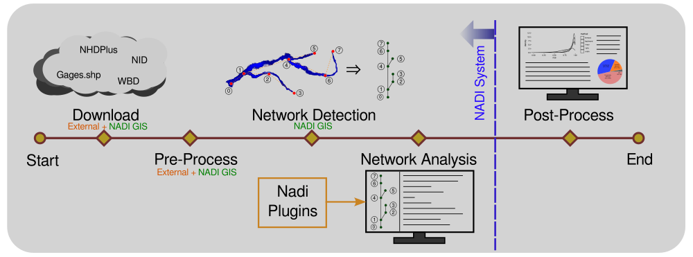
Why use NADI System?
Hydrologic modeling involves the integration of diverse data to simulate complex (and often poorly understood) hydrological processes. The analysis of complex hydrological processes often requires using domain specific calculations, and the visual representation requires the creation of custom maps and plots. Both of which can be a repetitive and error-prone processes, diverting time from data interpretation and scientific inquiry. Efficient methods are needed to automate these tasks, allowing researchers to focus on higher-level analysis and translation of their findings.
Current solution to that problem is to either use general purpose programming languages like Python, R, Julia, etc., or use domain specific software packages to increase the reliability of the tasks. Domain Specific Programming Languages (DSPLs) like the NADI Task system provides better syntax for domain specific tasks, while also are general purpose enough for users to extend it for their use cases. NADI System is trying to be the software framework that can connect those two by integrating with various softwares and providing a intuitive way to do network based data analysis.
Some example functionality of NADI system includes:
- Detection of upstream/downstream relationships from stream network,
- Network based programming using an extensible custom programming language,
- Interactive plots and reports generation,
- Import/export from/to various GIS data formats, etc.
Network Based Data Analysis
If you have data that are network based, like in case of data related to points in a river. NADI provides a text representation of the network that can be manually created with any text editor, or through NADI GIS tool.
Directed networks are a good representation for any system that have flow, sequential, causual, or preceedance relationships.
Some domains where the data are network based (directed graph) are:
- river networks, road networks,
- file/directory structures,
- flow networks,
- control flow/signal flow graphs,
- social networks, computer networks,
- project management (Grantt chart),
- compilers, git history,
- any kind of dependencies map (modeling, project, files),
- human resources in a company,
- trade routes/ trade networks,
- decision tree / policy tree,
- reaction mechanics for compound sysnthesis,
- neural signals,
- gene-regulatory networks,
- modeling work with dependencies to component models, etc
Task System
The Domain Specific Programming Language (DSPL) developed for network analysis in NADI makes network analysis simple and intutive. So, it is easier to understand, interpret and catch mistakes. While the NADI IDE has network visualization tools built in that can help you visualiza the network attributes for visual analysis.
For example, implementing “cumulative sum of streamflow” in nadi:
nodes<inputsfirst>.cum_sf = node.streamflow + sum(inputs.streamflow);
The trying to do this in Python while making sure input nodes are run before the output. So you might have to write a recursive algorithm like this:
def cum_sf(node):
node.cum_sf = node.streamflow + sum([cum_sf(i) for i in node.inputs()])
return node.cum_sf
cum_sf(network.outlet())
While a common mistake people might make is to write a simple loop like this:
for node in network.nodes():
node.cum_sf = node.streamflow + sum(
[i.streamflow for i in node.inputs()]
)
Which doesn’t make sure input nodes are run before output in this case, and can error out when some variables are not present. NADI provides special syntax for cases where you can make sure variables exist before running something.
Extensibility
NADI has two types of plugin systems, which means users can write their own analysis in any programming language and have it interact with NADI through attributes, or they can write it in rust and have even more direct interaction.
Who this book is for
This book has sections explaining the concepts of the NADI system, its developmental notes, user guide and developer guide.
Hence it can be useful for people who:
- Want to understand the concepts used in NADI,
- Want to use NADI system for their use case,
- Want to develop plugin system for NADI,
- Want to contribute to the NADI system packages, etc.
Although not intended, it might include resources and links to other materials related to Rust concepts, Geographical Information System (GIS) concepts, Hydrology concepts, etc. that people could potentially benefit from.
Please note that, this book assumes you have some knowledge of programming, like control flow, loops, functions, variables, etc. As as well some knowledge of GIS if you are reading network detection + GIS visualization specific functions. Those concepts will not be covered in this book. And if you are reading the developer reference or compiled plugin development, some knowledge of rust is assumed, but this is not necessary for the users of NADI that will only write code in NADI.
How to use this book
You can read this book sequentially to understand the concepts used in the NADI system. And then go through the references sections for a specific use cases you want to get into the details of.
- If you are in a hurry, but this is your first time reading this book, at least read the Core Concepts, then refer to the section you are interested in.
- If you want to know a specific details, click on the search icon at the top left of the book to get the search bar. You can search text there and visit the pages.
- If you want to learn about the QGIS Plugin, NADI GIS, goto “Network Detection (GIS)” section.
- If you want to learn about the Domain Specific Programming Language (DSL), refer to the “Network Analysis (DSL)” section.
- Learn by Example contains some simple examples you can follow to learn the basic syntax of the Task System.
- If you want more detailed examples of the use of Task System, refer to the chapters in “Example Research Problems” section on the sidebar.
- If you want reference for functions used in Task System goto “Plugin Functions”, the Internal Plugins section contains details on the functions that are available with nadi system, while the external plugins are plugins that were loaded while this book was compiled.
If you have suggestions on the formatting, or arrangement of chapters in this book, please make an issue on the GitHub repository for this book.
Code Blocks
The code blocks will have example codes for various languages, most common will be string template, task, python, and rust codes.
String template and task have custom syntax highlights that is intended to make it easier for the reader to understand different semantic blocks.
For task scripts/functions, if relevant to the topic, they might
have Results block following immediately showing the results of the
execution.
For example:
network load_file("./data/mississippi.net")
node[ohio] render("{NAME} river")
Results:
"ohio river"
Task and Rust code block might also include lines that are needed to get the results, but hidden due to being irrelevant to the discussion. In those cases you can use the eye icon on the top right side of the code blocks to make them visible. Similarly use the copy icon to copy the visible code into clipboard.
String Template Syntax Highlight
The syntax highlight can help you detect the variables
part (within {}). But remember, even if they are highlighted, it could be used as a normal string if they are passed to a function taking “String” instead of “Template”
This shows var = {var:.2}, and more
How to Cite
The sections below show you a bibliography entry in ASCE format, and BibTeX format that you can copy.
To cite the language, use the JOSS paper, to cite applications in hydrology and river networks, cite the EMS software. If you want to cite a specific part of this book then cite the user manual.
Journal Papers
Atreya, G., T. Steissberg, and P. A. Ray. 2025. “NADI – Network Analysis and Data Integration with a Domain Specific Language.” JOSS, 10 (112): 8655. https://doi.org/10.21105/joss.08655.
@article{Atreya2025,
doi = {10.21105/joss.08655},
url = {https://doi.org/10.21105/joss.08655},
year = {2025},
publisher = {The Open Journal},
volume = {10},
number = {112},
pages = {8655},
author = {Atreya, Gaurav and Steissberg, Todd and Ray, Patrick A.},
title = {NADI -- Network Analysis and Data Integration with a Domain Specific Language},
journal = {Journal of Open Source Software}
}
Atreya, G., T. Steissberg, D. McAvoy, X. Chen, and P. Ray. 2026. “Towards an improved language for river data analysis: Demonstration for the highly-regulated Ohio River basin.” Environmental Modelling & Software, 106866. https://doi.org/10.1016/j.envsoft.2026.106866.
@article{atreyaImprovedLanguageRiver2026,
title = {Towards an Improved Language for River Data Analysis: {{Demonstration}} for the Highly-Regulated {{Ohio River}} Basin},
shorttitle = {Towards an Improved Language for River Data Analysis},
author = {Atreya, Gaurav and Steissberg, Todd and McAvoy, Drew and Chen, Xi and Ray, Patrick},
year = 2026,
month = jan,
journal = {Environmental Modelling \& Software},
pages = {106866},
issn = {13648152},
doi = {10.1016/j.envsoft.2026.106866},
url = {https://linkinghub.elsevier.com/retrieve/pii/S1364815226000137},
urldate = {2026-01-15},
langid = {english}
}
Some papers are currently still being worked on, and will be added here when they are published.
This book
You can cite this book as a user manual or an online link. The user manual version 0.8.0 will be published when official release of the version 0.8.0 is available.
Atreya, G. 2025. Network Analysis and Data Integration (NADI) System: User Manual. Nadi Book. 0.7.0.
@book{nadi-book-070,
title = {Network {{Analysis}} and {{Data Integration}} ({{NADI}}) {{System}}: {{User Manual}}},
shorttitle = {Nadi {{Book}}},
author = {Atreya, Gaurav},
year = {2025},
month = jul,
series = {Nadi {{Book}}},
edition = {0.7.0},
url = {https://nadi-system.github.io/},
urldate = {2025-08-01},
langid = {english}
}
If you cite the link to this book as follow. Make sure to replace Accessed Data by today’s date.
Atreya, G. 2025. “Network Analysis and Data Integration (NADI).” Accessed May 1, 2025. https://nadi-system.github.io/.
@misc{PrefaceNetworkAnalysis,
title = {Network {{Analysis}} and {{Data Integration}} ({{NADI}})},
author = {Atreya, Gaurav},
year = {2025},
url = {https://nadi-system.github.io/},
urldate = {2025-05-02}
}
Works using NADI System
Conference Presentation
Atreya, G., G. Mandavya, and P. Ray. 2024. “Which came first? Streamgages or Dams: Diving into the History of Unaltered River Flow Data with a Novel Analytical tool.” H51L-0865.
@inproceedings{atreyaWhichCameFirst2024,
title = {Which Came First? {{Streamgages}} or {{Dams}}: {{Diving}} into the {{History}} of {{Unaltered River Flow Data}} with a {{Novel Analytical}} Tool},
shorttitle = {Which Came First?},
booktitle = {{{AGU Fall Meeting Abstracts}}},
author = {Atreya, Gaurav and Mandavya, Garima and Ray, Patrick},
year = {2024},
month = dec,
volume = {2024},
pages = {H51L-0865},
urldate = {2025-06-03},
annotation = {ADS Bibcode: 2024AGUFMH51L.0865A}
}
Network Analysis and Data Integration (NADI)
NADI is group of software packages that facilitate network analysis and do data analysis on data related to network/nodes.
NADI System consists of:
| Tool | Description |
|---|---|
| NADI Task System | Domain Specific Programming Language (used through CLI & IDE) |
| NADI CLI | Command Line Interface to run NADI Tasks |
| NADI IDE | Integrated Development Environment to write/ run NADI Tasks |
| NADI GIS | Geographic Information (GIS) Tool for Network Detection |
| NADI Plugins | Plugins that provide the functions in Task System |
| NADI library | Rust and Python library to use in your programs |
| NADI Serve | NADI binary to open a server that can run NADI DSL as requests |
| NADI Kernel | Jupyter Notebook Kernel to work with NADI DSL |
The github repositories consisting of source codes:
| Repo | Tool |
|---|---|
| nadi-gis | Nadi GIS |
| nadi-system | Nadi CLI/ IDE/ Core |
| nadi-plugins-rust | Sample Plugins |
| nadi-book | Source for this NADI Book |
As seen in the figure below: as a user you only need to interact with a subset of the NADI architecture.
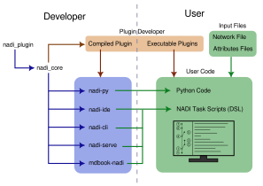
Workflow for Rivers
A Typical workflow in NADI System for river network related analysis consists of the follwing 4 processes:
- Download Data
- Pre-Process Data
- Network Detection/Construction (you can automate it using NADI GIS)
- Network Analysis (Using NADI System’s DSL, and Plugins)
- Post Process
The figure below shows the order of how the components of the NADI System (blue) is used along side external tools (black).
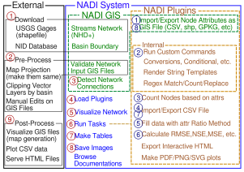
Here the numbers in red circles are the order of use for different tools. Here the “Run Tasks” step represents running the NADI DSL Code in the System, so it is further divided into the tasks inside the code. The numbers on the blue circles show a typical use case of the DSL to perform a research work.
For exact details on what a typical research workflow involving the NADI DSL is, refer to the examples.
NADI GIS
Geographic Information (GIS) Tool for Network Detection in river systems. The main purpose of the NADI GIS is to find the network connectivity between a set of points using a stream network (which can be developed from elevation models, or downloaded from national databases).
NADI GIS can be used as a terminal command or QGIS plugin, refer to installation section for how to install it.
NADI Task System
Task System is a Domain Specific Programming Language (DSL) that is designed for river network analysis. This is the main core of the network analysis. This is included when you install NADI as a library, CLI or GUI.
NADI Plugins
The functions available to call in the task system comes from plugins. There are many internal plugins with core functions already available, while users can load their own plugins for other functions.
Refer to the plugins section of the book for more details on how to use plugins, how to write them and what to keep in mind while using them.
NADI libraries
Rust and Python library to use in your programs. Rust library nadi_core is available to download/use from cargo with the command cargo add nadi_core.
While Python library requires you to clone the repo and build it with maturin (for now).
Future plan for it includes publishing it in pypi.
Rust Libraries
If you are not writing your own rust programs or plugins, you can skip this section.
There are three rust libraries:
| Library | Use |
|---|---|
nadi_core | Core library with data types, and plugin structure |
nadi_plugin | Rust Procedural macro library to write nadi plugins |
string_template_plus | Library for string templates with variables |
Everything is loaded by nadi_core so you don’t need to load them separately.
NADI Python
While using NADI from python library, you only have access to nadi data types (Node, Network, etc), and the plugin functions, which are enough for most cases as python language syntax, variables, loops etc will give you a lot of flexibility on how to do your own analysis. The python module is structured as follows:
nadi [contains Node, Network, etc]
+-- functions
| +-- node [contains node functions]
| +-- network [contains network functions]
| +-- env [contains env functions]
+-- plugins
+-- <plugin> [each plugin will be added here]
| +-- node [contains node functions]
| +-- network [contains network functions]
| +-- env [contains env functions]
+-- <next-plugin> and so on ...
The functions are available directly through functions submodule, or through each plugin in plugins submodule. An example python script looks like this:
import nadi
import nadi.functions as fn
net = nadi.Network("data/ohio.network")
for node in net.nodes:
try:
_ = int(node.name)
node.is_usgs = True
# this just shows how nadi functions can be called from python
# for simple functions please use the python native functions
print(fn.node.render(node, "Node {_NAME} is USGS Site"))
except ValueError:
node.is_usgs = False
This code shows how to load a network, how to loop through the nodes, and use python logic, or use nadi functions for the node and assign attributes.
More detail on how to use NADI from python will be explained in NADI Python chapter.
NADI CLI
Command Line Interface to run NADI Tasks.
This can run nadi task files, syntax highlight them for verifying them, generate markdown documentations for the plugins. The documentations included in this book (Function List and each plugin’s page like Attributes Plugin attributes) are generated with that. The documentation on each plugin functions comes from their docstrings in the code, please refer to how to write plugins section of the book for details on that.
The available options are shown below.
Usage: nadi [OPTIONS] [TASK_FILE]
Arguments:
[TASK_FILE] Tasks file to run; if `--stdin` is also provided this runs before stdin
Options:
-C, --completion <FUNC_TYPE> list all functions and exit for completions [possible values: node, network, env]
-c, --fncode <FUNCTION> print code for a function
-f, --fnhelp <FUNCTION> print help for a function
-g, --generate-doc <DOC_DIR> Generate markdown doc for all plugins and functions
-l, --list-functions list all functions and exit
-n, --network <NETWORK_FILE> network file to load before executing tasks
-p, --print-tasks print tasks before running
-P, --new-plugin <NEW_PLUGIN> Create the files for a new nadi_plugin
-N, --nadi-core <NADI_CORE> Path to the nadi_core library for the new nadi_plugin
-s, --show Show the tasks file, do not do anything
-S, --stdin Use stdin for the tasks; reads the whole stdin before execution
-r, --repl Open the REPL (interactive session) before exiting
-t, --task <TASK_STR> Run given string as task before running the file
-h, --help Print help
-V, --version Print version
NADI IDE
NADI Integrated Development Environment (IDE) is a Graphical User Interface (GUI) for the users to write/ run NADI Tasks.
As seen in the image below, IDE consists of multiple components arranged in a tiling manner. You can drag them to move them around and build your own layout. When you start IDE it suggests you some layouts and what to open. You can use the buttons on the top right of each pane to:
- change pane type
- vertically split current pane
- horizontally split current pane
- fullscreen current page/ restore layout if it’s fullscreen
- close current pane
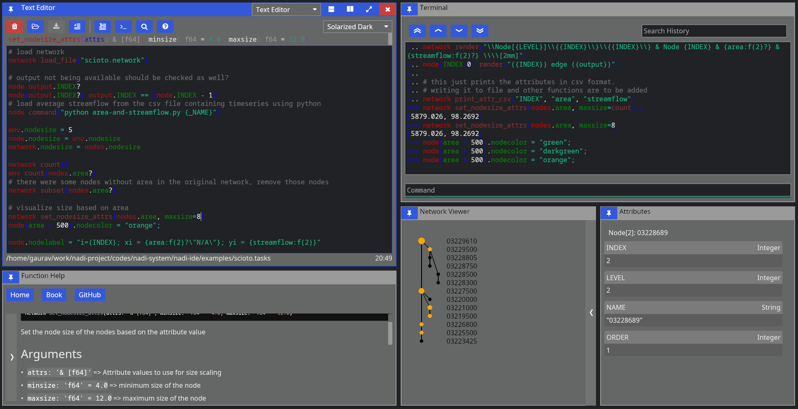
It has the following components:
Text Editor
Open text files, edit and save them.
It comes with syntax highlighting for most languages. And custom highlight for tasks and network files.
For Tasks file, it can also show you function signatures on top so you can write tasks easily, knowing what arguments the function needs and what the default values are.
While open inside IDE, it can also run the tasks by sending them to the terminal, or search help documentations on functions. Hover over the buttons on the top row to see which button does what, and the keyboard shortcut to use them as well.
Terminal
Terminal is there so you can run NADI in a interactive session. Read Eval Print Loop (REPL) of NADI here is meant mostly to be used inside the IDE to evaluate the tasks from editor, but you can open it independently as well.
Function Help
This is a GUI with the list of all available plugin functions. You can expand the sidebar on left to search and browse functions. You can filter by type of function (node, network, env) with the buttons. When you click a function you can read its documentation on the right side.
Capabilities of the iced GUI libraries are limited right now, so you cannot select or copy text from the help. Please refer to the documentation online to do that. Or generate the documentation locally using nadi-cli tool.
Network Viewer
This is a pane where network is visualized, this is a very basic visualization to see the connections and is not optimized for drawing. Please avoid using this pane (making it visible) in case of large networks as it takes a lot of computation to draw this each frame.
Attribute Browser
When you click on a node on Network Viewer it will open/update showing the attributes of that node. There is no way to edit the attributes from here, which is intensional design as attributes should be assigned from tasks so that they are reproducible. For temporary assignments use the terminal.
SVG Viewer
This is a basic utility that can open a SVG file from disk and visualize it. You can click the refresh button to re-read the same file. This is intended for a quick way to check the SVG saved/exported from tasks. This is not a full fledge SVG renderer, so open them in image viewers or browsers to see how it looks.
Trivia
- Nadi means River in Nepali (and probably in many south asian languages).
- First prototype of NADI was Not Available Data Integration, as it was meant to be an algorithm to fill data gaps using network information, but it was modified to be more generic for many network related analysis.
Installation
NADI System is a suite of software packages each have different
installation methods. Some of the packages are uploaded to crates.io
(rust) and pypi (python). For others, you can either get the
compiled binaries from the Releases page of the
github repo [windows]. Or you can get the source code using git, and using
cargo build the packages [all OS].
| Program | Linux | Windows | Mac | Android (Termux) |
|---|---|---|---|---|
| NADI CLI | yes | yes | yes | yes |
| NADI IDE | yes | yes | yes | no |
| mdbook nadi | untested | yes | untested | yes |
nadi-py | yes | yes | yes | yes |
| QGIS Plugin | yes | yes | untested | no |
Untested means it should work in theory, but I have not tested it.
Packages
For nadi-py you can use pip:
pip install nadi-py
For nadi-cli you can use cargo:
cargo install nadi
Downloading Binaries
Goto the repo of each component and refer to the releases section for binaries of different versions.
To setup the nadi-systm to load the plugins you have to place them inside the directory included in the NADI_PLUGIN_DIRS environmental variable. Refer to your Operating System’s documentation on how to set environemental variables.
The binaries should be able to run directly without needing extra steps. If you get a security warnings because the binaries are not signed, you might have to ignore it.
For QGIS Plugin, you can install it from Plugins Wizard on QGIS if you turn on experiemental plugins. But the nadi-gis binary should be available from PATH (i.e. you can call it from terminal).
Building from Source
This is currently the preferred way of installing nadi-system (and nadi-gis for Linux and MacOS). Although it includes a bit more steps this makes sure the compiled program is compatible with your OS.
Prerequisites
The prerequisites for building from source are:
git[Optional]: to clone the repo, you can directly download zip from githubcargo: To build the binaries from source.gdal[Optional]: Only fornadi_gisbinary and plugin.
To install git refer to the instructions for your operating system from the official page.
For cargo follow the instructions to install rust toolsets for your operating system from the official page
Installing gdal can be little complicated for windows. For Linux, use your package manager to install gdal and/or gdal-dev package. Mac users can also install gdal using homebrew. For windows, follow the instructions from official website, after installation you might have to make some changes to environmental variables to let cargo know where your gdal binaries/header files are for the compilation to be successful. More details will be provided in the NADI GIS section.
If you use Linux or Mac (with homebrew), then the installation of prerequisites should be easy. But if you do not have the confidence to setup gdal for compiling nadi_gis use the binaries provided for them from the previous steps.
NADI System
It will build the binaries for nadi, nadi-ide, nadi-help, nadi-editor, etc. nadi is the command line interface to run nadi tasks, parse/validate syntax etc. While nadi-ide is the program to graphically develop nadi tasks and run them.
Assuming you have git and cargo,
git clone https://github.com/Nadi-System/nadi-system
cd nadi-system
cargo build --release
To run one of the binary from nadi system, use the command cargo run with binary name.
For example, the following will run the nadi-ide:
cargo run --release --bin nadi-ide
The compiled binaries will be saved in the target/release directory, you can copy them and distribute it. The binaries do not need any other files to run.
The plugins files if present in the system are automatically loaded from NADI_PLUGIN_DIRS environmental variable. Look into installing the plugin section below.
Note: all programs will compile and run in Windows, Linux, and MacOS, while only nadi-cli and mdbook-nadi will run in Android (tmux). nadi-ide and family need the GUI libraries that are not available for android (tmux) yet.
NADI GIS
NADI GIS uses gdal to read/write GIS files, so it needs to be installed. Please refer to gdal installation documentation for that.
Windows
First download compiled gdal from here:
- https://www.gisinternals.com/sdk.php Then download clang from here:
- https://github.com/llvm/llvm-project/releases
Extract it into a folder, and then set environmental variables to point to that:
GDAL_VERSION: Version of gdal e.g. ‘3.10.0’LIBCLANG_PATH: Path to thelibdirectory ofclangGDAL_HOME: Path to thegdalthat has the subdirectories likebin,lib, etc.
You can also follow the errors from the rust compilers as you compile to set the correct variables.
Finally you can get the source code and compile nadi-gis with the following command:
git clone https://github.com/Nadi-System/nadi-gis
cd nadi-gis
cargo build --release
This will generate the nadi-gis binary and gis.dll plugin in the target/release folder, they need to be run along side the gdal shared libraries (.dlls). Place the binaries in the same folder as the dlls from gdal and run it. To use the gis.dll plugin from nadi, nadi-ide, etc. same thing applies there, those binaries should be run with the gdal’s dlls to be able to load the gis plugin.
Linux and Mac
Assuming you have git, cargo, and gdal installed in your system you can build it like this:
git clone https://github.com/Nadi-System/nadi-gis
cd nadi-gis
cargo build --release --features bindgen
The bindgen feature will link the nadi-gis binary with the gdal from your system. So that you do not have to distribute gdal with the binary for your OS.
If you do not have gdal installed in your system, then you can still build the nadi-gis without the bindgen feature. This will still require gdal to be available and distributed with the binary.
cargo build --release
QGIS Plugin
The nadi-gis repo also contains the QGIS plugin that can be installed to run it through QGIS. The plugin will use the nadi-gis binary in your PATH if available. And it also contains the nadi plugin that can be loaded into the nadi system to import/export GIS files into/from the system.
You can download the zip file for plugin from releases page, and use the “Install from Zip” option on QGIS plugins tab. Or copy the nadi directory inside qgis to your python plugin directory for qgis.
Refer to the QGIS plugins page for more instructions. In future we are planning on publishing the plugin so that you can simply add it from QGIS without downloading from here.
NADI GIS Plugin
The NADI plugin on this repo provides the functions to import attributes, geometries from GIS files, and export them into GIS files.
NADI Plugins
Out of the two types of plugins, the executable plugins are just simple commands, they do not need to be installed along side NADI System, just make sure the executables that you are using from NADI System can be found in path. A simple way to verify that is to try to run that from terminal and see if it works.
The compiled plugins can be loaded by setting the NADI_PLUGIN_DIRS environmental variable. The environment variable should be the path to the folder containing the nadi plugins (in .dll, .so, or .dylib formats for windows, linux and mac). You can write your own plugins based on our examples and compile them.
Officially available plugins are in the nadi-plugins-rust directory.
Assuming you have git and cargo,
git clone https://github.com/Nadi-System/nadi-plugins-rust
cd nadi-gis
cargo build --release
The plugins will be inside the target/release directory. You can use nadi -i <path> to install the plugin, the <path> is the path to the .dll, .so or .dynlib of the plugin. You can also manually copy them to the NADI_PLUGIN_DIRS/0.8.0 directory for nadi to load them, that is what nadi -i does.
You can take any one of the plugins as an example to build your own, or following the plugin development instructions from the plugins chapter.
Plugins
There are two types of nadi plugins. Compiled plugins (shared libraries) are loaded dynamically from shared libraries, while executable plugins are called as shell commands. Refer to Plugins section of core concepts for more details.
Compiled Plugins
Compiled plugins are shared libraries (.so in linux, .dll in windows, and .dylib on macOS). They can be generated by compiling the nadi plugin in rust, or you can download the correct plugin for your OS and nadi_core version from the plugin repositories. It is recommended to only use plugins from trusted source.
To setup the nadi-systm to load the compiled plugins you have to place them inside the directory included in the NADI_PLUGIN_DIRS environmental variable. Refer to your Operating System’s documentation on how to set environemental variables.
The compiled plugins are loaded when NADI is starting up, there is no way to hot load or reload the plugins, so you need to reopen the nadi program itself (CLI, IDE, etc) if you want to load new/updated plugin functions.
Once the plugins are loaded, the functions are directly available from the nadi task system, they’ll act similar to the internal plugin functions.
Executable Plugins
Executable plugins are terminal commands, you set it up as you’d set any other terminal programs, by making sure the program is in PATH and can be executed from terminal. Linux and Mac do them mostly by default, while in Windows you might have to check the box saying something along the lines of “include this in path” during installation, or manually edit the PATH in “Environment Variables”.
For example, if you want to call python scripts, make sure you can run python --version in terminal and get a response.
You can also check it using the command function:
command("python --version", echo=true);
command("Rscript --version", echo=true);
command("julia --version", echo=true);
Results:
$ python --version
Python 3.14.4
$ Rscript --version
Rscript (R) version 4.6.0 (2026-04-24)
$ julia --version
julia version 1.12.6
Here we can see, the commands that ran successfully and returned a version are valid.
To write scripts and run them from nadi refer to Executable Plugins section on Plugin Developer Guide.
Changes from Version 0.7
NADI GIS
There are new algorithms to deal with larger than RAM datasets. These algorithms work by only loading a subset of the GIS entries at a time while working through the file. They are slower compared to regular algorithms but they can work with larger datasets the regular algorithms can not work with.
User are directed to only use them for larger than RAM datasets.
NADI IDE
The GUI backend iced has been upgrated to 0.14. This comes with a lot of optimization and improvements from iced.
For example, the network diagram now looks a lot less pixelated while using circular node shapes. It also takes less resources to redraw the diagrams for each frame with better caching.
Screenshot Comparing Network Diagrams after Iced Update
{kind=link}
NADI Task System
Most important change: the tasks that run functions in multiple nodes now need nodes or nodesmap keyword instead of node keyword. node keyword now always refers to a single node in a given context. This is to make the keywords consistent with everything else (and English). You need to replace the keywords in your .tasks files.
First, there are many new keywords added to the DSL, some of them are listed below:
| New Keyword | Description |
|---|---|
| try | try statement to contain tasks |
| catch | catch statement when error occurs on try block |
| local | Local; similar to environment but within current locale |
| function/func | user defined functions |
| error | raises an error while evaluating |
| return | early return from a function |
| break | break from a loop |
Many other keywords like, nodesmap, rootsmap, leavesmap, inputsmap, leaves, etc are added as variable types, while the keywords like loop, break, error, try, catch, continue, etc are about control flow.
As some of you probably can guess from the keywords, we now have support for error handling and user defined functions.
Plugin Namespace
Now the plugin functions are on their own namespace. Which means, to be able to use an external plugin, you have to use the dot syntax. For example load_network function from gis plugin is used as gis.load_network. This makes it easy to see which functions are from external plugins, as well as decrease the chances of plugins overwriting functions that were already loaded.
We plan to add an alias system where you can choose to import all functions from a plugin to the global namespace so you don’t have to use the dot syntax.
Expression Context
The DSL now supports expression with context. This is similar to how previously you could use different variable types to get different attributes, function calls, etc. And how you had different task types like node, env, and network. Now all of that is combined with expression context. And it can be nested, giving an endless possible combinations.
Previous tasks that start with keyword and then an expression is now equivalent to an expression context with the same keyword.
For example:
env.x = 1
env {x = 1}
env.x
network.y = 1
network y + 1
network {
net.y = 1;
y + 1
}
Results:
1
2
2
But because it is an expression context now, instead of just 3 task type, we can do a lot more:
Here we are assigning incide an expression context, and then reassigning the leaf nodes’ values later
net.load_str("a -> b\n c -> b")
# the block below is equivalent to: nodes<inp>.x = sum(inputs.x) + 1
nodes<inp> do {
node.x = sum(inputs.x) + 1;
}
leaves.x = 0;
nodesmap.x
Results:
{
b = 3,
c = 0,
a = 0
}
Expression Evaluation
Now normal expressions can be evaluated without the need for env keyword at the beginning.
For example the two lines below are equivalent
env 1 + 2
1 + 2
Results:
3
3
Not only does this mean that users do not have to type redundant env keyword for simple calculations or evaluations to use the REPL as a calculator/debugger. This also means now users can nest expressions within themselves to create more complex expressions.
String Template
We have a new string template system now that is natively implemented inside the NADI system. Which means it is now not as powerful as the last one, but it is fast and more similar to template systems from other languages.
The main changes from the previous string templates in terms of implementation:
- We no longer have to use
_prefix to use strings without the quotes, if the quoted string is needed use functions to quote the string outside of the template. - There are no support for lisp expressions, datetime, and transformation functions in the template. The formatting is done through format expressions. Refer to the new String Template chapter for details.
Furthermore, we have a syntax suger for rendering a template directly.
r"Hi there {name}"
*Error*:
RenderError at Line 1 Column 1: TemplateError at pos 10: Attribute "name" not found
name = "Joe"
r"Hi there {name}"
Results:
"Hi there Joe"
This is equivalent to:
render("Hi there {name}", name="Joe")
Results:
"Hi there Joe"
This allows the user to use template strings even when the function is not asking for a template. This helps the developers focus on writing environment functions taking a single string that can be called from any situation.
That is:
Instead of a exists function that takes a Template, and render it for each node, exists can just take String and user can pass rendered String while calling the function.
network load_str("a -> b")
nm exists("{NAME}.txt")
help node exists
Results:
{
b = false,
a = false
}
node exists (path: 'Template', min_lines: 'Option < usize >')
Checks if the given path exists when rendering the template
# Arguments
- `path: Template` Path to check
- `min_lines: Option < usize >` [optional] Minimum number of lines the file should have
In this example, with an environment function exits we could call it with exits(r"{NAME}.txt").
For now we are not removing functions, but in the future we will start focusing more on environment functions that can be called in as many context as possible.
Error Handling
Now the users can choose to catch or raise errors. This is done through adding the syntax to raise an error, and try-catch block that can catch an error inside a code.
The panic is still a problem as it crashes the whole program, we will try to fix any instances of panic that happens inside the code.
For example if a variable is not found
somevar = 10
somevar
env.somevar
Results:
10
<None>
We can catch it,
try {env.somevar} catch { 1 }
Results:
1
This is useful when you want to follow a happy path without a lot of if (env.somevar?) type expressions. Users can now also raise errors, check out the error keyword in the example below inside the user defined functions.
User Defined Functions
Now the users can define environement functions and call it from the tasks.
func fact(val=0) {
if (val < 0) {error "Negative Value not supported"} else {
if (val < 2) {1} else { val * fact(val - 1) }
}
}
fact(9)
Results:
362880
The error handling prevents us from infinite loop in this case.
fact(-8)
*Error*:
UserError at Line 1 Column 1: Negative Value not supported
There is no way to catch specific errors for now. In future versions pattern matching for error handling might be added.
NADI GIS
NADI GIS is available as a CLI tool and QGIS plugin, the CLI tool has the following functions:
Usage: nadi-gis [OPTIONS] <COMMAND>
Commands:
nid Download the National Inventory of Dams dataset
usgs Download data from USGS NHD+
layers Show list of layers in a GIS file
check Check the stream network to see outlet, branches, etc
order Order the streams, adds order attribute to each segment
network Find the network information from streams file between points
help Print this message or the help of the given subcommand(s)
Options:
-q, --quiet Don't print the stderr outputs
-h, --help Print help
The important functions are:
- Download NID and USGS NHD+ data,
- Check stream network for validity of DAG (Directed Acyclic Graph) required for NADI,
- Stream ordering for visual purposes,
- Network detection between points of interest using the stream network
You can use the help command for each one of the subcommand for more help.
For example, usgs subcommand’s help using nadi-gis help usgs gets us:
Download data from USGS NHD+
Usage: nadi-gis usgs [OPTIONS] --site-no <SITE_NO>
Options:
-s, --site-no <SITE_NO>
USGS Site number (separate by ',' for multiple)
-d, --data <DATA>
Type of data (u/d/t/b/n)
[upstream (u), downstream (d), tributaries (t), basin (b), nwis-site (n)]
[default: b]
-u, --url
Display the url and exit (no download)
-v, --verbose
Display the progress
-o, --output-dir <OUTPUT_DIR>
[default: .]
-h, --help
Print help (see a summary with '-h')
NADI QGIS
The QGIS plugin for nadi has a subset of the CLI functionality. It can be accessed from the Processing Toolbox.
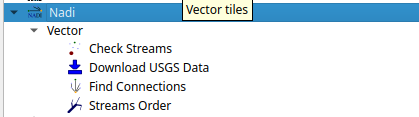
You can run the tools from there and use the layers in QGIS as inputs. The QGIS plugin will first try to find nadi-gis binary on your PATH and use it, if not it’ll try to use the binary provided with the plugins. It is preferred to have nadi-gis available in PATH and running without errors.
Example
The examples here will be given using QGIS plugin, and using the CLI tool both. CLI tool is great for quickly running things, and doing things in batch, while QGIS plugin will be better on visualization and manual fixes using other GIS tools.
If you want a video demostration, there is a Demo Video on YouTube.
Using QGIS Plugin
First downloading the data is done through the Download USGS Data tool. As shown in the screenshot below, input the USGS site ID and the data type you want to download.
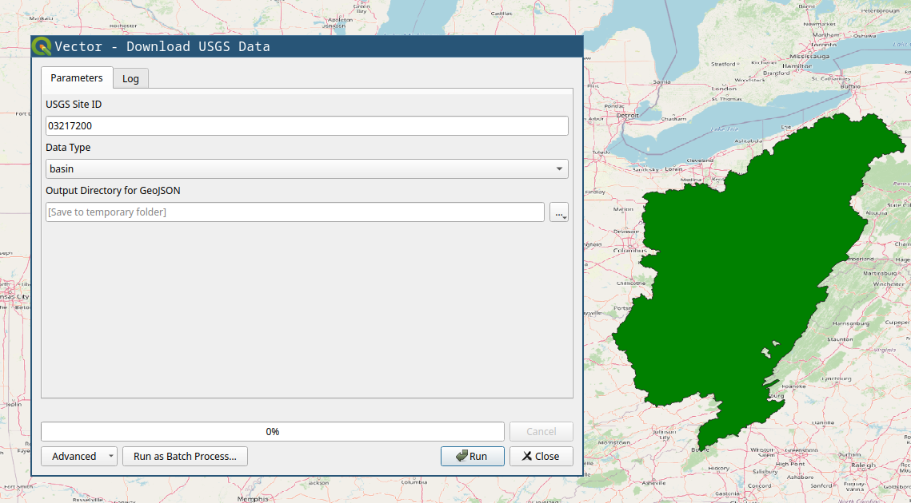
You will need, tributaries for the upstream tributaries for network, and nwis-site will download the USGS NWIS sites upstream of the location. We will use those two for the example. If you have national data from other sources, you can use the basin polygon to crop them.
Stream Order tool is mostly for visual purposes. The figure below shows the results from stream order on right compared to the raw download on left.
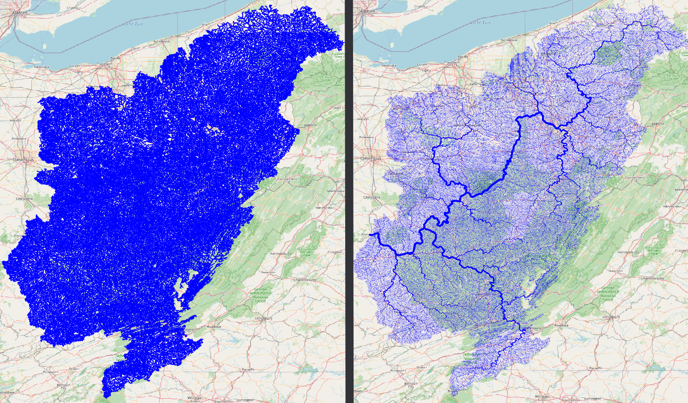
After you have streams (tributaries), you can use the Check Streams tool to see if there are any errors. It will give all the nodes and their categories, you can filter them to see if it has branches, or if it has more than one outlet. The figure below shows the branches with red dot. If we zoom in we can see how the bifurcation on the stream is detected, and how stream order calculation is confused there.
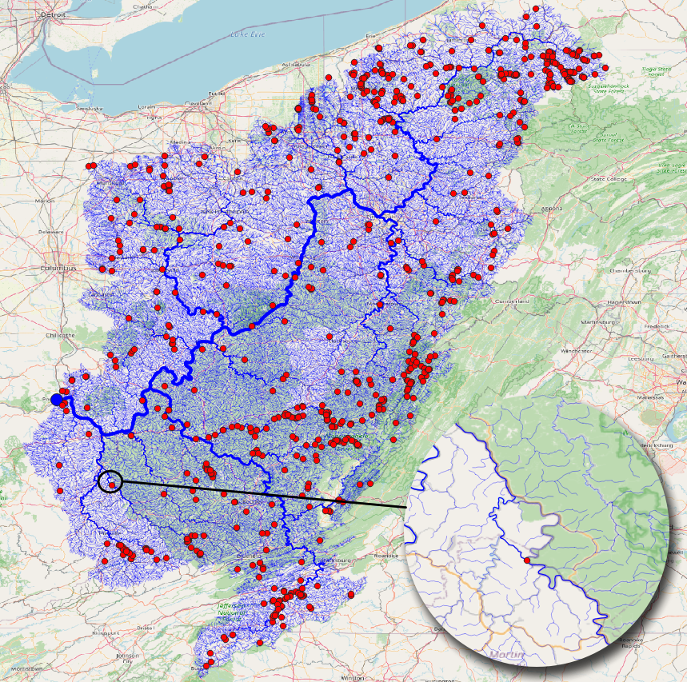
Find Connections tool will find the connection between the points using the stream network. The results below shows the tool being run on the NWIS points.
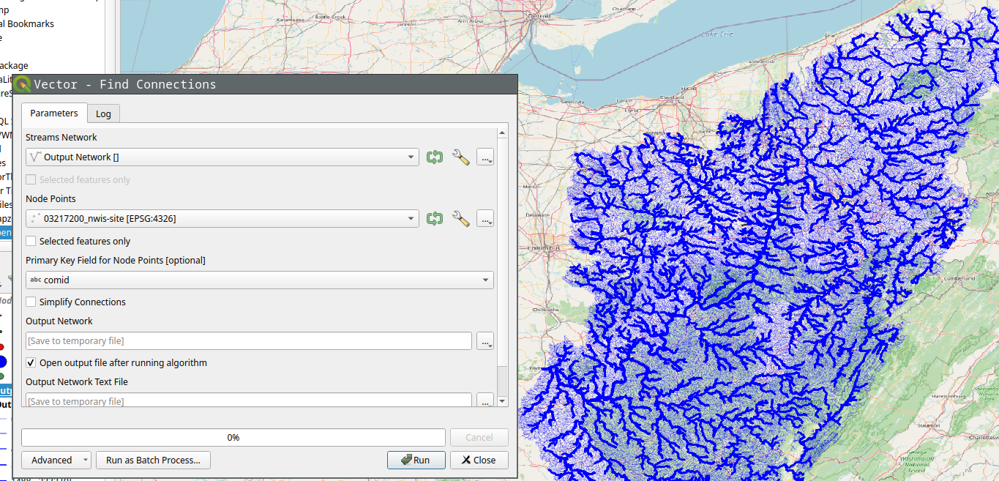
If we select simplify option, it’ll only save the start and end point of the connection instead of the whole stream.
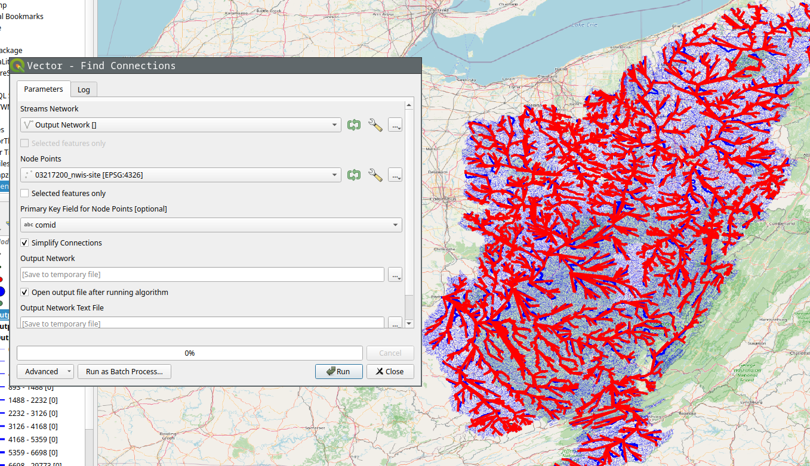
Of course you can run Stream Order on the results to get a more aesthetically pleasing result.
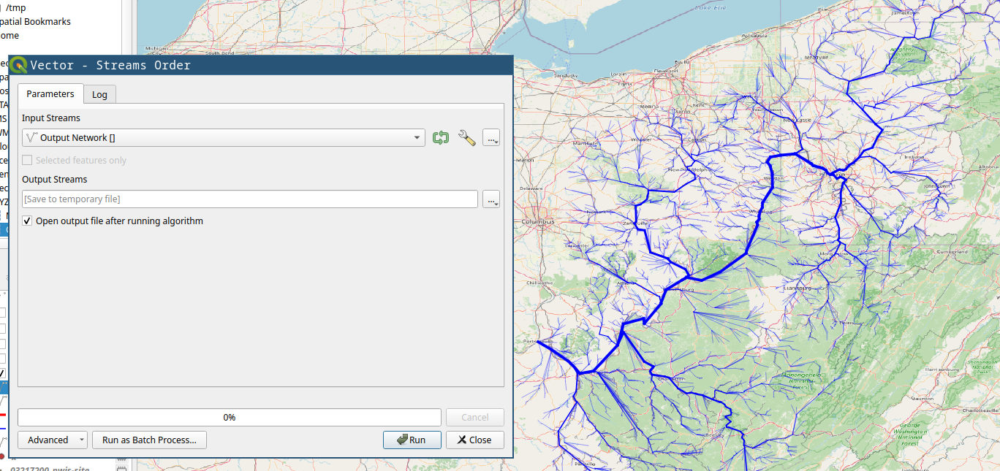
Using CLI
An example of running nadi-gis using CLI can be done in the following steps:
Download data
We’ll download the streamlines and the NWIS Sites from USGS for station 03217200 (Ohio River at Portsmouth, OH).
nadi-gis usgs -s 03217200 -d n -d t -o output/
This will download two files:
output/03217200_nwis-site.json output/03217200_tributaries.json
Now we can use check command to see if there are any problems with the streams.
nadi-gis check output/03217200_tributaries.json
That gives us the following output:
Invalid Streams File: Branches (826)
* Outlet: 1
* Branch: 826
* Confluence: 30321
* Origin: 29591
We can generate a GIS file to locate the branches and see if those are significant. Refer to the help for check or use the QGIS plugin.
And to find the connections, we use network subcommand like this:
nadi-gis network -i output/03217200_nwis-site.json output/03217200_tributaries.json
Output:
Outlet: 3221 (-82.996916801, 38.727624498) -> None
3847 -> 3199
2656 -> 2644
399 -> 1212
2965 -> 3942
2817 -> 6236
5708 -> 4733
2631 -> 5741
201 -> 2101
2066 -> 2317
3770 -> 1045
... and so on
Since this is not as useful, we can use the flags in the network subcommand to use a different id, and save the results to a network file.
First we can use layers subcommand to see the available fields in the file:
nadi-gis layers output/03217200_nwis-site.json -a
which gives us:
03217200_nwis-site
- Fields:
+ "type" (String)
+ "source" (String)
+ "sourceName" (String)
+ "identifier" (String)
+ "name" (String)
+ "uri" (String)
+ "comid" (String)
+ "reachcode" (String)
+ "measure" (String)
+ "navigation" (String)
Using comid as the id for points, and saving the results:
nadi-gis network -i output/03217200_nwis-site.json output/03217200_tributaries.json -p comid -o output/03217200.network
The output/03217200.network file will have the connections like:
15410797 -> 15411587
6889212 -> 6890126
8980342 -> 10220188
19440469 -> 19442989
19390000 -> 19389366
6929652 -> 6929644
... and so on
Make sure you use a field with unique name, and valid identifier in NADI System.
Getting Started
This section walks you throuh the process of using NADI system through the CLI and IDE.
Network analysis is done through the Domain Specific Programming Language. This is the main feature of NADI.
You can run the DSL, called tasks through the CLI, or through the IDE. Refer to the Installation for how to install them.
Recommended way to develop/write nadi tasks is with IDE, while CLI can be used to automate/batch run it once the tasks are finalized.
Command Line Interface (CLI)
NADI CLI is available as nadi command when you have it installed. You can run it in interactive mode in a Read Eval Print Loop (REPL), or provide a file to run.
So assuming you have the following contents in sample.tasks file:
network load_str("a -> b")
nodesmap array(LEVEL, ORDER)
Results:
{
b = [0, 2],
a = [0, 1]
}
You run it with:
nadi sample.tasks
You should get the following output:
{
b = [0, 2],
a = [0, 1]
}
If you run nadi with --repl or -r flag, then it’ll open a REPL. If you have a tasks file provided like before, it’ll run the tasks in the file before entering a REPL, otherwise it’ll start from empty context.
For more details on other use of nadi command. Refer to the output of nadi --help. It has options for,
- Evalute some tasks before running the file/repl for setting context,
- Print/Generate help for functions,
- Inspect code for functions,
- Autocomplete nadi functions,
- Generate a template for nadi plugin code, and more.
Integrated Development Environment (IDE)
NADI IDE contains multiple components to make it easier to write, edit, and run tasks, as well as visualize the network and browse the function documentation.
As you can see, the main UI is divided into multiple panes, which are independent components that you can resize, arrange the way you want.
First, when you start NADI IDE, you come up with this view:
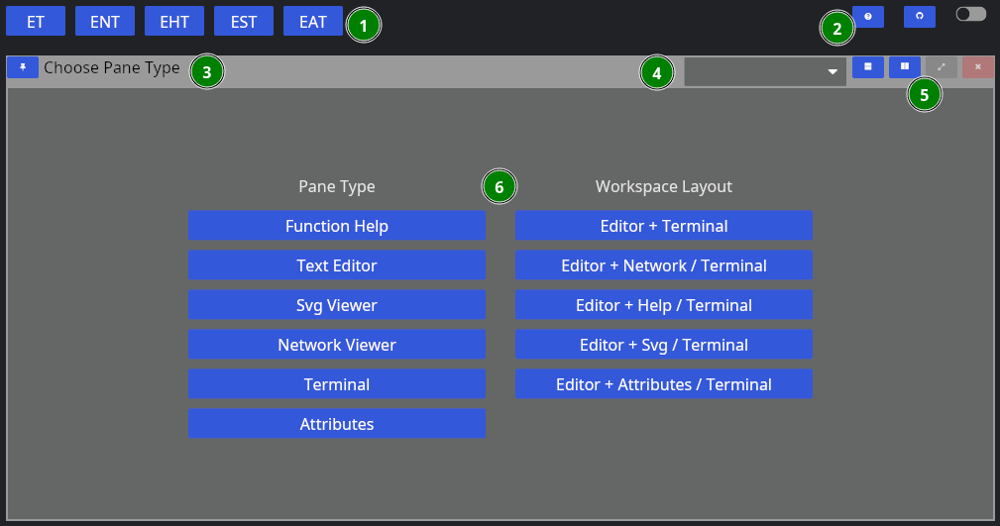
- Different layout options
- Global options
- Pane Title Bar
- Dropdown to change the Pane Type
- Pane options (horizontal/vertical split, fullscreen, close)
- Pane Contents
The layout of each pane are similar, while each one will have their own contents. For example, “Function Help” contains the help for the plugin functions. We will go over each one in a separate chapter.
You can choose a singular pane type here, or chose a combination of panes that feels more useful. Some panes like terminal/attribute views also spawn automatically (if not already in view) when you try to run tasks, or click nodes.
Now, let’s choose “Text Editor” for now, then we’re greeted with this view:
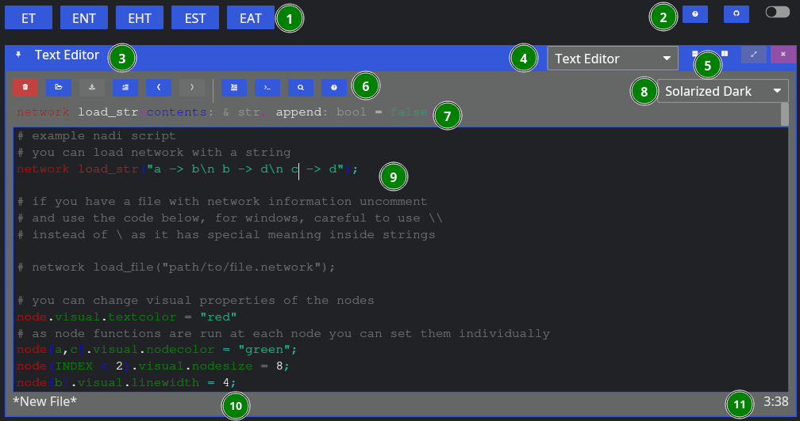
Now, aside from the global components, we have:
- Editor Tools,
- Function Signature: Only shows when cursor is on a function,
- Editor Theme: Only works for non-NADI formats like Python, C, Rust, R, etc.
- Tasks File Contents: File contents with syntax highlighting,
- Current File Path: Where the file is opened from and will be saved, and
- Line/Column of Cursor.
As for the editor tools: you can hover over them to know their names, and shortcuts. We’ll explain them shortly below in the left to right order,
| Button | Key | Function |
|---|---|---|
| New File | Ctrl + n | Remove the contents, and the filepath for new file |
| Open | Ctrl + o | Browse and open a new file |
| Save | Ctrl + s | Save the file, browse for new file if path is not given |
| Toggle Comment | Alt + ; | Comment or uncomment the current selection |
| Undo | Ctrl + z | Undo the last edit (edits are saved periodically) |
| Redo | Ctrl + y | Redo the last undo (redo vanishes if you edit after undo) |
| Run Line/Selection | Ctrl + Enter | Run the current line, or the selection in terminal |
| Run Buffer | Ctrl + Shift + Enter | Run the whole buffer (file contents) in terminal |
| Search | Search the selection in function help | |
| Help | Visit the function help for current function |
When yo run a line using “Run Line/Selection” it should spawn a terminal pane on the right side
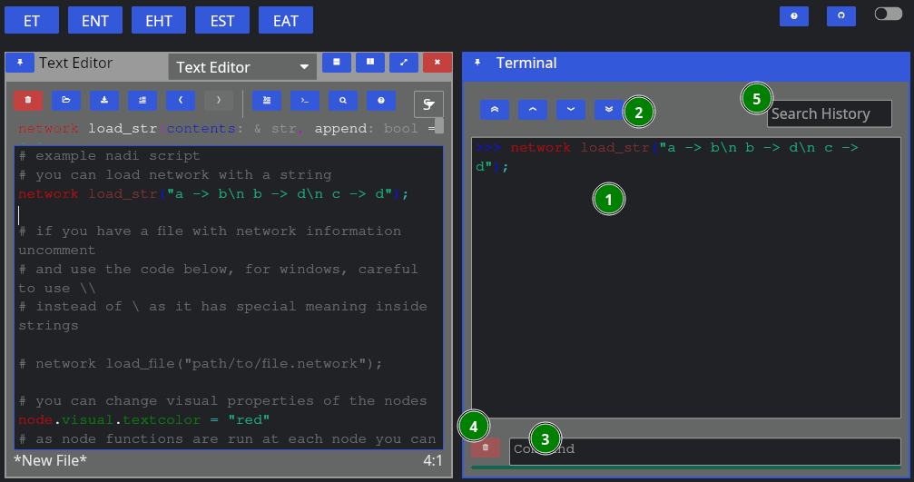
Here we have:
- Terminal Contents: tasks that were run, and their output,
- Terminal Navigation: Buttons to goto top/bottom or page up/down,
- Command Entry: You can directly enter commands here instead of from editor (they won’t be saved),
- Clear: Clear the current command entry,
- History: Search here for previous commands, clicking them will copy it to the Command Entry
Upto here will be enough to run tasks. But the advantage of the IDE with a Graphical User Interface (GUI) comes in the form of network visualization. If you open the Network Viewer pane, either through the dropdown to change one of the pane. Or split the panes and open Network Viewer there, you can see the network visualized.
The figure below shows the network viewer, and the attribute viewer (it spawns when you click on a node in the network) on the bottom right.
You can click on the “<” button on the right side of the network viewer to expand the sidebar that has details on how to change the visual attributes of the nodes. You can run the examples in the code for testing them out as well.
Extra components of the IDE includes the Function Help that you can use to browse the plugin functions’ documentation, and SVG viewer that you can use to open SVG files. The SVG viewer is very primitive and only meant to be a quick check/update while you’re fine tuning an exported SVG file, use dedicated softwares and web browsers for actual viewing.
The function help looks like below:
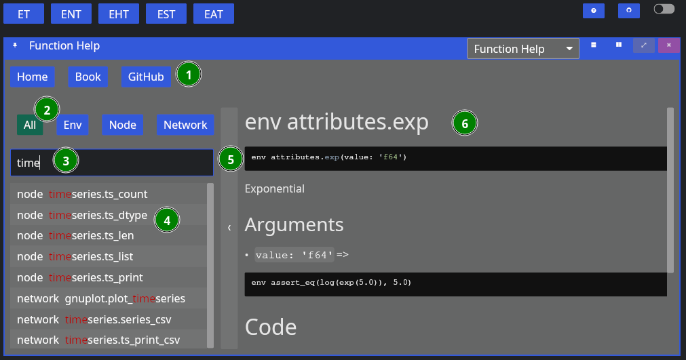
The figure contains,
- Buttons for Reset, and links to NADI Book and Github,
- Buttons to filter search by function type,
- Text Entry to search the function,
- List of plugin functions,
- Bar to collapse/expand the function search sidebar, and
- Plugin function documentation content.
Currently you cannot copy the code or any contents from the documentation, it is a limitation of the GUI library that might be fixed in the future. If you want to copy the text, refer to the web version of the function help (in NADI Book). Or use the help [type] <function> task. For example:
help node render
Results:
node render (template: '& Template', safe: 'bool' = false)
Render the template based on the node attributes
# Arguments
- `template: & Template` String template to render
- `safe: bool` [def = false] if render fails keep it as it is instead of exiting
For more details on the template system. Refer to the String
Template section of the NADI book.
```task
network load_str("a -> b")
nodes.x = 13
nodes assert_eq(render("abc {x}"), "abc 13")
nodes assert_eq(render("abc {x} {a}", safe=true), "abc {x} {a}")
```
You can copy the example code from the output in the terminal.
That should be enough for you to be able to use the GUI, in the next section we’ll talk about the core concepts in NADI system that you need to understand, and then we’ll show some examples you can run using what you learned in this chapter.
Core Concepts
This section contains a brief explanation of core concepts.
The main concepts that you need to know are:
- Attributes are values, it can be float, integer, boolean, strings, or list of attributes, or a map of attributes (key=value),
- Expression is something that can be evaluated or executed, it consists of literal values (attributes), variables (node, network, env variables that could hold attributes), function calls, or a mathmatical or logical operation.
- Nodes are points in the network, they can have attributes, input nodes and an output node. Different types of nodes are:
- Input Node: node that leads into a node,
- Output Node: node that the current node leads into,
- Edge Node: node that is connected to the current node,
- Leaf Node: node with no input nodes, and
- Root Node: node with no output nodes.
- Network is a collection of nodes, network can also have attributes. Loading a network that is not a directed tree is undefined behaviour.
- Task is an execution body of the task system. It can be of env, network or node type. It can be conditional (If-Else) or loop (While) consisting of more tasks inside it. Task can assign values to the env/network/node attributes, or call mutable functions on the top level.
- Functions in nadi are of 3 types, env functions are normal functions that take values and run, network functions take values and run on the network, while node functions run at each node (they also provide a way to subset which nodes to run it on).
- String Template: Some functions take string inputs that are interpreted dynamically to represent different strings based on variables.
- Plugins provide the functions used by the nadi task system. There are internal plugins and external plugins. Internal plugins comes with the installation, while external plugins are loaded from dynamic libraries.
Keywords
The keywords in the language are listed below. You can not use keywords as variables or function names. If you use nadi_plugin to generate your plugin functions, it will check for that.
Know that the keywords here are a bit more numerous than a typical language as nadi is a domain specific language, and it is designed to make it easier to represent and work with network related structures. As such, many keywords are available to directly denote many types of nodes in a given context. For more details on node related keywords goto Evaluation Context Chapter
| Keyword | Description |
|---|---|
| clear | Clear the task context |
| import | import functions from an external tasks file |
| exec | execute an external tasks file |
| from | to use paths other than current directory for exec and import |
| node | represents the current node |
| network/net | represents the current network (only one in this version) |
| env | the environment task type, function or variable |
| exit | exit the program |
| end | end the execution of tasks without exiting |
| help | display help for functions |
| input | represents a single input node of a node |
| inputs | represents multiple input nodes of a node |
| inputsmap/im | represents a map for input nodes of a node |
| output | represents a single output node of a node (only one in this version) |
| outputs | represents multiple output nodes of a node (only one in this version) |
| outputsmap/om | represents a map for output nodes of a node (only one in this version) |
| edge | represents a single edge node of a node |
| edges | represents multiple edge nodes of a node |
| edgesmap/em | represents a map for edge nodes of a node |
| root | represents a single root node of a network |
| roots | represents all root nodes of a network |
| rootsmap/rm | represents a map of all root nodes of a network |
| leavess | represents all leaf nodes in the network |
| leavesmap/lm | represents a map of all leaf nodes in the network |
| nodes | represents all nodes in the network |
| nodesmap/nm | represents a map of all nodes in the network |
| if | if statement for conditional task/expression |
| else | else statement for conditional task/expression |
| for | for loop task for looping through array/attrmap |
| while | while statement for loops |
| loop | infinite loop that can only be broken through break statements |
| break | break statement inside a loop |
| continue | continue statement inside a loop |
| try | try statement to contain tasks |
| catch | catch statement when error occurs on try block |
| in | binary operator to check if something is in another (list/string) |
| in | keyword in for loop to determine the parent attribute to loop from |
| match | binary operator to check patterns on string (regex) |
| hook | hook tasks to run at each execution |
| local/loc | Local; similar to environment but within current locale |
| function/func | user defined functions |
| return | return statement inside function |
| error | raises an error while evaluating |
| progress | send a progress signal from anywhere |
| do | execute the current context without expecting value |
And here are some keywords reserved for future:
| Keyword | Description |
|---|---|
| networks | represents all the networks (only one in this version) |
| networksmap/netm | represents a map of all the networks (only one in this version) |
| par | execute the current context in parallel |
| dopar | execute the current context in parallel without expecting value |
| map | map values in an array/attrmap to a function |
| attrs | attributes of the current context |
As seen in the keywords, there are plans to support multiple networks, as well as parallel execution.
Symbols
Some special symbols and their functions are listed below:
.dot accessor for variables, e.g.node.var,node.var.another, etc.,?variable check (only used after a variable) e.g.node.var?evaluates to atrueorfalse,(),{},[]brackets for functions/expressions, attrmaps and arrays,;suppress current task output (only used at the end of a task),+,-,*,/, and//are mathematical operators,&,|, and!are logical operators,>,<,>=,<=, and==are comparision operators,->path operator (only used in node propagation, or network),=is assignment operator,#starts a comment,$for series/timeseries access,@for Function pointers
There might be more functions of each symbol depending on the context.
Continue with the chapters for details on each concept. Or skip ahead to Learn by Examples if you want to jump into the examples.
Node
A Node is a point in network. A Node can have multiple input nodes and only one output node. And a Node can also have multiple attributes identifiable with their unique name, along with timeseries values also identifiable with their names.
If you understand graph theory, then node in nadi network is the same as a node in a graph.
Nodes in NADI Network are identified by their name, that is loaded from the network file. Node names are string values, even if they are integer or float, they are read and internally stored as strings. If the node name contains characters outside of alphanumeric and underscore (_), it has to be quoted.
i.e. valid names like 123 or node_1 can appear unquoted or quoted, but names like node-123 needs to be quoted: "node-123".
network load_str("
123 -> node_1
node_1 -> \"node-123\"
")
nodes.NAME
Results:
["node-123", "node_1", "123"]
If you do not quote the name, you’ll get an error:
network load_str("123 -> node-1")
nodes.NAME
*Error*:
FunctionError at Line 1 Column 1: function load_str: Error: Parse Error at Line 1 Column 12
123 -> node-1
^ Invalid Value: Invalid node name
Network
A Network is a collection of nodes. The network can also have attributes associated with it. The connection information is stored within the nodes itself. But Network will have nodes ordered based on their connection information. So that when you loop from node from first to last, you will always find output node before its input nodes.
A condition a nadi network is that it can only be a directed graph with tree structure.
Example Network file:
# network consists of edges where input node goes to output node
# each line is of the format: input -> output
tenessee -> ohio
# if your node name has characters outside of a-zA-Z_, you need to
# quote them as strings
ohio -> "lower-mississippi"
"upper-mississippi" -> "lower-mississippi"
missouri -> "lower-mississippi"
arkansas -> "lower-mississippi"
red -> "lower-mississippi"
The given network can be loaded and visualized using functions from typst, cairo or svg plugins.
We will discuss further on how to call functions, and set attributes later.
network load_file("./data/mississippi.net")
network command("mkdir -p output")
nodes.title = str_replace(NAME, "-", " ");
network cairo.table("Index => {INDEX}\n<Name => {title}\n",
"./output/network-mississippi.svg"
)
Results:
You can assign different graphical properties through node properties.
network load_file("./data/mississippi.net")
nodes.visual = {};
node[red].visual.nodecolor = "red";
nodes["upper-mississippi", red].visual.nodesize = 8;
nodes.title = str_replace(NAME, "-", " ");
network cairo.table("Index => {INDEX}\n<Name => {title}\n",
"./output/network-mississippi-colors.svg"
)
Results:
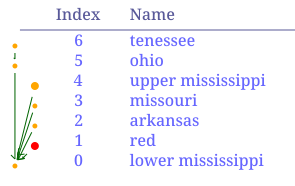
Attributes
Attributes are TOML like values. They can be one of the following types:
| Type Name | Rust Type | Description |
|---|---|---|
| Bool | bool | Boolean values (true or false) |
| String | RString | Quoted String Values |
| Integer | i64 | Integer values (numbers) |
| Float | f64 | Float values (numbers with decimals) |
| Date | Date | Date (yyyy-mm-dd formatted) |
| Time | Time | Time (HH:MM, HH:MM:SS formatted) |
| DateTime | DateTime | Date and Time separed by or T |
| Array | RVec<Attribute> | List of any attribute values |
| Table/AttrMap | AttrMap | Key Value pairs of any attribute values |
You can write attributes directly into the task system to assign them, use them in functions. You can also load attributes from a file into the env/node/network.
Following are some example values that are evaluated as literal values (themselves).
true
"string value"
12.21
Results:
true
"string value"
12.21
Please note that, the date and time by themselves are not valid in a tasks file. While they are valid attributes in a “.toml” file or while parsing attributes, in a task file they are interpreted as integer expression and integer range.
2024-12-21
12:24
12:04:24
Results:
1991
[12, 13, 14, 15, 16, 17, 18, 19, 20, 21, 22, 23, 24]
[12, 16, 20, 24]
You can assign attribute values to variable names. We will discuss nodes and network later, but let’s assign environmental values:
env.river = "Ohio River"
env.river
Results:
"Ohio River"
Besides writing them in the code directly, you can also load attributes from a file. Example Attribute File that can be loaded:
river = "Ohio River"
outlet = "Smithland Lock and Dam"
outlet_is_gage = true
outlet_site_no = ""
streamflow_start = 1930-06-07
mean_streamflow = 123456.0
obs_7q10 = 19405.3
nat_7q10 = 12335.9
num_dams_gages = 2348
Here loading the files we can see only ohio has the attributes loaded
network load_file("./data/mississippi.net")
node[ohio] load_attrs("./data/attrs/{NAME}.toml")
nodesmap.outlet
Results:
{
"lower-mississippi" = <None>,
red = <None>,
arkansas = <None>,
missouri = <None>,
"upper-mississippi" = <None>,
ohio = "Smithland Lock and Dam",
tenessee = <None>
}
With plugins, you can load attributes from different file types.
Expression
Expressions are airthmetic or logical operations. They can appear inside the conditional statements, or as input to a task, or nested in other expression or function calls.
Expressions are defined into the following categories:
Literal Values
[1, true, "no maybe"]
12.2
Results:
[1, true, "no maybe"]
12.2
Variable
value = [1, true, "no maybe"];
value
Results:
[1, true, "no maybe"]
Variables also have a “check” mode, where it returns true if variable exists, false if it does not.
value = [1, true, "no maybe"];
value?
other_var?
Results:
true
false
If you use variable that does not exist, then it will throw an error. You can use try-catch block to catch that error. This is computationally better than checking if a variable exists. But the checking is useful in case of filtering the node functions (explained later).
value = [1, true, "no maybe"];
try { other_var } catch { value }
Results:
[1, true, "no maybe"]
You can also use varible from node, or network in other context. For example:
value = [1, true, "no maybe"];
network echo(json(value))
Results:
[1, true, "no maybe"]
Special variable types like nodes, inputs, output are available besides env, network and node based on what type of task the expression is on.
You will learn more about this on Cross Context Functions and Variables chapter.
Unary Operator
env !true
- 12.0
Results:
false
-12
Binary Operator
(12 > 34) & true
"x" in "xyz"
12 in [123, true]
"my name is" match "^my.*"
Results:
false
true
false
true
If Else
if(!true) {"if true"} else {"if false"}
Results:
"if false"
Function
value = [1, true, "no maybe"];
get(value, 2)
Results:
"no maybe"
All expressions are not garanteed to return a value. If you are using a function expression and expect a value and it does not return it, it’ll be a runtime error. Similar case for if block without else if condition is false, and so on.
echo("Hello world!") + 12
*Error*:
Hello world!
EmptyValueError at Line 1 Column 1: the expression resulted in empty value
Special function types like nodes, inputs, output are available besides env, network and node based on what type of task the expression is on.
You will learn more about this on Cross Context Functions and Variables chapter.
Evaluation Context
The most important concept in NADI is the evaluation context. This determines how your expressions are evaluated, and how everything is understood.
Variable Type
We have learned about attributes before, depending on what attribute you are setting or getting, you need to use the varible type for that.
For example, by default you set or get a local variable
x = 90
x
Results:
90
if you want to set an env variable, or network variable you need to specify. Those variable are saved as env or network attributes, and are only accessible by specifying them as variable type.
env.x = 90
env.x
net.x = 9
net.x
x
Results:
90
9
<None>
There are more varible types when you have access to a network, for example the nodes, leaves and roots are always accessible and refers to the attributes from all nodes, leaf nodes and root nodes.
network load_str("a -> b")
nodes.NAME
leaves.NAME
roots.NAME
Results:
["b", "a"]
["a"]
["b"]
And their map counterparts are also available
network load_str("a -> b")
nodesmap.NAME
leavesmap.NAME
rootsmap.NAME
Results:
{
b = "b",
a = "a"
}
{
a = "a"
}
{
b = "b"
}
You can shorten nodesmap to nm, leavesmap to lm and rootsmap to rm.
Next are the variables available only in a node context
network load_str("a -> b")
node[b].NAME
node[b] input.NAME
node[a] output.NAME
node[b] inputs.NAME
node[a] outputs.NAME
Results:
"b"
"a"
"b"
["a"]
["b"]
the inputs and outputs also have map counterparts. The singular variable type input and output error out if there are more than one, or no inputs or outputs in a node.
Context Expression
Context expression are expressions that are evaluated given a context. You can have any variable type as a context for an expression. In a way a variable is a context expression with a variable name.
Context expressions have two syntax format:
<context> <space> <expression>: here the expression is simple expression, and the context is only separated by a space. We have used this variation in the codes above already<context> { <expression> }: here the expression can be more complex or nested with other contexts as well
For example the following three ways to set/get env expressions exist. First one directly sets and evals the environmental variable, while the bottom two do it through context expressions
env.x = 10
env.x
# or you can do
env {x = 100}
env {x}
# or you can do
env x = 200
env x
Results:
10
100
200
Be careful that, the default evaluation context is local context. The variables are local variables, and if variable type is not given, it will first try to resolve using local variables before looking at the current context.
Here, for example, we set a variable, but it can only be accessed as a local variable.
network.load_str("a -> b")
x = 12
env.x
nodes.x
network.x
x
loc.x
Results:
<None>
[<None>, <None>]
<None>
12
12
but if we are trying to evaluate in terms of some context, then the local variable will be used.
network.load_str("a -> b")
x = 12
env.x = 100
network.x = 100
env x
nodes x
network x
x
loc x
Results:
12
[12, 12]
12
12
12
Setting variables
Now that we know what context expressions are, it is important to know that while setting an attribute, we are evaluating the expression with a context.
For example, setting an environment variable means we will evaluate the right side with environment context. While setting nodes variable means we are evaluating the right side with each node as a context for all the nodes, and setting them individually.
Here, each time NAME is evaluated in the context of the current node being set, resulting in different answers set to x.
network.load_str("a -> b");
nodes.x = NAME
nodes.x
Results:
["b", "a"]
Return Value from Context Expression
By default, the context expressions return value same as the one from variable type (array and map variant).
but you can use the do keyword to tell nadi to just execute the statement and not return a value. This avoids nadi reporting None values for statements that do not return values.
network.load_str("a -> b")
nodes {
node.x = [NAME, ORDER]
}
"no output"
nodes do {
node.x = [NAME, ORDER]
}
Results:
[<None>, <None>]
"no output"
Multiple Context Expressions
The context expressions can have multiple statements inside of it, and you can make the expression as complex as you want.
For example, if you want sum of input nodes’s some value for all nodes:
network.load_str("a -> b");
nodes.x = 1;
nodes.y = sum(inputs.x)
nodes.y
Results:
[1, 0]
Can also be done like below, but here you need to run input nodes before the output node as you want to set the x of input nodes before you calculate y of the output node. This ordering feature from nadi allows you do simplify your calculation logic.
network.load_str("a -> b");
nodes<inp> do {
node.x = 1;
node.y = sum(inputs.x)
}
nodes.y
Results:
[1, 0]
Nested Context Expressions
Now that you understand context expressions, you can use them in a nested format as well if you need.
Here we do the same thing as before, but in unnecessarily complex and nested way.
network.load_str("a -> b");
nodes<inp> do {
node.y = sum(inputs {
node.x = 1;
x
})
}
nodes.y
Results:
[1, 0]
Task
Task is an execution body in the task system. Think of it like a line of code that is executed when you use any programming language.
Most common task is an expression. The expression is simply evaluated and the result is reported.
For example the following is a task that simply performs an airthmatic operation:
1 + 2 * 10
Results:
21
Similarly following two tasks call a function, assign a value, and read a value:
sum([1,2,3])
env.x = true;
env.x
Results:
6
true
There are different types of tasks, specially environment, network and node type tasks, and there can be conditional tasks that only execute based on a condition or loops.
So types of task can be summarized as:
- Help Task
- Exit Task
- Expressions
- Series Task
Some examples of different tasks are given below to show a general overview, but the concepts inside the tasks system will be introduced as we progress through the chapters,
Expression tasks that can evaluate expressions, assign variables, or call functions:
env 1 + 2 * 8
env render("my name is {name}", name="John")
env.x = 12 > 2;
env.x
Results:
17
"my name is John"
true
While the example above shows env keyword being used, you can omit the keyword to work under the local variables, or you can use other keywords like nodes, network, etc for expressions in that context.
1 + 2 * 8
render("my name is {name}", name="John")
x = 12 > 2;
x
Results:
17
"my name is John"
true
network task loading a network, and node task getting node attributes:
network load_str("a->b\nb->c")
nm.NAME
Results:
{
c = "c",
b = "b",
a = "a"
}
Conditional and Loop task
if ( !val? | (val > 5) ) {
# if val is not defined or greater than 5, set it to 0
val = 0
}
while (val < 5) {
val = val + 1;
}
val
Results:
5
Tasks system acts like a scripting language for nadi system. A Task consists of getting/evaluating/setting attributes in environment, network or nodes. The value that can be evaluated are expressions that consists of literal values, variables, or function calls that can either be a environment, node or a network function. Functions are unique based on their names, and can have default values if users do not pass all arguments.
The code examples throughout this book, that are being used to generate network diagrams, tables, etc are run using the task system.
Here is an example contents of a more complex task file, do not concern with what each task does, we will go through them in other chapters.
# sample .tasks file which is like a script with functions
nodes<inputsfirst> print_attrs("uniqueID")
nodes show_node()
network save_graphviz("/tmp/test.gv")
nodes<inputsfirst>.cum_val = node.val + sum(inputs.cum_val);
nodes[WV04113,WV04112,WV04112] print_attr_toml("testattr2")
nodesmap render("{NAME} {uniqueID} {Dam_Height_(Ft)}")
nodes list_attr("; ")
# some functions can take variable number of inputs
network calc_attr_errors(
"Dam_Height_(Ft)",
"Hydraulic_Height_(Ft)",
"rmse", "nse", "abserr"
)
nodes sum_safe("Latitude")
nodesmap<inputsfirst> render("Hi {SUM_ATTR}")
# multiple line for function arguments
network save_table(
"test.table",
"/tmp/test.tex",
true,
radius=0.2,
start = "2012-19-20",
end = 2012-19-23 12:04:00
)
nodes.testattr = 2
nodes set_attrs_render(testattr2 = "{testattr:2.2}")
nodesmap[WV04112] render("{testattr} {testattr2}")
# selecting a list of nodes to run a function
nodes[
# comment here?
WV04113,
WV04112
] print_attr_toml("testattr2")
# selecting a path
nodesmap[WV04112 -> WV04113] render("{NAME}")
User Defined Functions
User can define functions and use them. Function definition consists of function name, arguments and expression.
func add_one(v) {v + 1}
add_one(12)
Results:
13
The function arguments can be positional or keyword arguments. The keyword arguments are optional on the function call. The keyword arguments are evaluated as expression themselves in a local context, and finally the expression in the function body is evaluated and the result is returned.
For example:
func add_numbers(a, b = 1) { a + b}
add_numbers(1)
add_numbers(1, 2)
Results:
2
3
You can assign variables locally and use them in the final expression that is returned from the function. If you need to prematurely return a value, you can use a return statement. The semicolons at the end of the expressions have no significance inside the function body. The local variables are useful to save temporary results so that they don’t need to be recalculated.
func cakc(val) {
x = if (val > 10) {return 24} else {val + 2};
2 * x
}
for x in range(1, 20) {cakc(x)}
Results:
In addition to that, you can also assign the function arguments dynamic values based on previous arguments, or environement/network context. These are similar to the local variables inside the function body, but they can be overridden with other values by the users.
func last(vals, offset=1) { get(vals, length(vals) - offset) }
last(["a", "b", "c", "d", "e"])
last(["a", "b", "c", "d", "e"], 2)
Results:
"e"
"d"
While you can use env, network and nodes variables here as well, the expression is run in immutable context, so nothing can be changed.
The variables are local to the function, hence, any assignment of the variable values inside the body of the functions does not affect the outside.
func test(val=env.somevar) {
val + 1
}
test(1)
env.somevar = 12;
test()
env.somevar = 10;
test()
Results:
2
13
11
This can allow you to reduce the number of arguments required for the function call while also allowing the user to define that if needed.
Since there is only immutable expression evaluation in the functions, anything requiring something like a loop has to be done through recursion.
func sum_vals(vals, ind=length(vals) - 1) {
if (ind < 0) { 0 } else {
get(vals, ind) + sum_vals(vals, ind - 1)
}
}
sum_vals([1,2,3])
sum_vals([1, 3.5])
sum_vals([1,2,3, 4, 5, 6])
Results:
6
4.5
21
Be careful of exit condition while working with recursion. This could lead into infinite loop. NADI will crash with stack overflow if that happens. This can also happen if there is too much recursion.
Iteration through for loop can be used to generate arrays, but currently there is no syntax for reducing the iteration to single value like required in the sum case. In future, we plan to provide reduce system so that these things can be avoided. This is the first iteration of the user defined functions.
Default Values
Another useful feature of the functions are the default values. You can define a function with default values so that you can only overwrite some of them later.
network load_str("a -> b\n b -> d\n c -> d");
func settings(top=10, bottom=10, left=10, right=10, deltax=10, deltay=10) {
attrmap(
top=float(top), left=float(left), right=float(right), bottom=float(bottom),
deltax=float(deltax), deltay=float(deltay), fontsize=10.0
)
}
network cairo.table("Index => {INDEX}\n <Name => {NAME}", "./output/svg-funcs.svg")
Results:
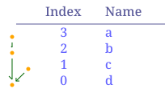
You can save these functions in a file and import them later:
import utils
utils.settings()
utils.settings(top=100)
Results:
{right = 10, left = 10, deltay = 10, deltax = 10, bottom = 10, fontsize = 10, top = 10}
{right = 10, deltax = 10, left = 10, deltay = 10, fontsize = 10, top = 100, bottom = 10}
While importing functions from a .tasks file, only the function definitions are imported, other tasks are not executed.
String Template
String templates are strings with dynamic components that can be rendered for each node based on the node attributes.
A simple template can be like below:
Hi, my name is {name}, my address is {address}.
Results (with: name=John; address=123 Road, USA):
Hi, my name is John, my address is 123 Road, USA.
With more complicated templates, we would be able to generate documents with text and images based on the node attributes as well.
For example the following template can be used to generate a table.
| Name | Index |
|------------------|---------|
<!-- ---8<--- -->
| {NAME} | {INDEX} |
<!-- ---8<--- -->
network load_file("./data/mississippi.net");
network echo(render_template("./data/example.template"))
Results:
| Name | Index |
|---|---|
| lower-mississippi | 0 |
| red | 1 |
| arkansas | 2 |
| missouri | 3 |
| upper-mississippi | 4 |
| ohio | 5 |
| tenessee | 6 |
Of course, there are better ways to generate table than this, but this shows how flexible the template system is.
If you want to use a rendered template anywhere on the document use r before the string. This will render in local context, if you need to render in different context, use the context blocks. render function gives you even more flexibility in terms of rendering templates with complex arguments.
That is:
x = 12;
# normal string
"Some {x}"
# rendered template string
r"Some {x}"
network.y = 10
network {r"Network y = {y}"}
Results:
"Some {x}"
"Some 12"
"Network y = 10"
Node Function
Node function runs on each node. It takes arguments and keyword arguments.
For example following node function takes multiple attribute names and prints them. The signature of the node function is print_attrs(*args).
network load_file("./data/mississippi.net")
nodes print_attrs("INDEX", name=false)
Results:
INDEX = 0
INDEX = 1
INDEX = 2
INDEX = 3
INDEX = 4
INDEX = 5
INDEX = 6
[<None>, <None>, <None>, <None>, <None>, <None>, <None>]
Only the INDEX is printed here. But node that the return value of nodes is an array, and as the print_attrs function does not return a value, it lists a values of <None>. When you want to do things for each node, but not return a value, you can either silence the return through ;, or use a do keyword to idicate it’s a task not a return value.
network load_file("./data/mississippi.net")
nodes print_attrs("INDEX", name=false);
nodes do print_attrs("NAME", name=false)
Results:
INDEX = 0
INDEX = 1
INDEX = 2
INDEX = 3
INDEX = 4
INDEX = 5
INDEX = 6
NAME = "lower-mississippi"
NAME = "red"
NAME = "arkansas"
NAME = "missouri"
NAME = "upper-mississippi"
NAME = "ohio"
NAME = "tenessee"
The keywords nodes and nodesmap always return an array or a map, if not silenced or used with the do keyword.
Node Function Propagation
Propagation of the node functions refer to the order and selection of nodes to run the function on.
As we have seen above, when you run node functions, you can run it for all the nodes. If you want to run it for one node, or a selective nodes, you need to select them using propagation.
For single node, the way of selecting the node is similar to propagation, i.e. use node keyword with node name inside []:
network.load_str("a -> b");
node[a].NAME
node[b] {[NAME, ORDER]}
Results:
"a"
["b", 2]
But this does not allow more than one node, and returns a value instead of a list, or a map that nodes or nodesmap keywords do.
For multiple nodes, for example, you might want to:
- run the function only on nodes that satisfy a condition,
- run the funciton only on a group of nodes,
Or you might want to change the order of the node function execution. Like running input nodes before the output node, if your function/analysis needs that.
These things are done with 3 syntax in the node function:
Order
You can run functions in different orders:
sequential/seq=> based on node indexinverse/inv=> inverse based on node indexinputsfirst/inp=> input nodes before outputoutputfirst/out=> output node before inputs
network load_str("a -> b\n b ->d \n c -> d \n d -> e")
nodesmap<seq> array(INDEX, ORDER)
nodes<inv> array(INDEX, ORDER)
Results:
{
e = [0, 4],
d = [1, 3],
c = [2, 1],
b = [3, 2],
a = [4, 1]
}
[[4, 1], [3, 2], [2, 1], [1, 3], [0, 4]]
Currently, inp and inv are equivalent, while seq and out are also equivalent. But when the parallization is added in the future versions, they will be implemented differently. So for backward compatibility, if you function needs to be run in a certain way, always use that one.
Here an example showing how to calculate the order of the node.
network load_str("a -> b\n b ->d \n c -> d \n d -> e")
nodes<inp>.val = sum(inputs.val) + 1;
nm [val, ORDER]
Results:
{
e = [5, 4],
d = [4, 3],
c = [1, 1],
b = [2, 2],
a = [1, 1]
}
If you do not use the inputsfirst propagation here, you get an error because the val attribute doesn’t exist in inputs, and if you did have that variable already, it would be old data instead of the recent results from your expression.
network load_str("a -> b\n b ->d \n c -> d \n d -> e")
nodes.val = sum(inputs.val) + 1;
nm [val, ORDER]
*Error*:
EmptyValueError [e] at Line 2 Column 1: the expression resulted in empty value
Here the [e] after the Error shows which node the error is from. If we look at the values, we can see that all values are empty, and the expressions errors out on the first node e, because the input d doesn’t have val.
nm [val, inputs.NAME]
Results:
{
e = [<None>, ["d"]],
d = [<None>, ["b", "c"]],
c = [<None>, []],
b = [<None>, ["a"]],
a = [<None>, []]
}
If we ran it for node a for example then we wouldn’t get an error.
node[a].val = sum(inputs.val) + 1;
nm [val, ORDER]
Results:
{
e = [<None>, 4],
d = [<None>, 3],
c = [<None>, 1],
b = [<None>, 2],
a = [1, 1]
}
NOTE: I need to work on better error messaging. It is in TODO list for the next major release.
Node List/Path
You can selectively run only a few nodes based on a list, or a path.
Given this network:
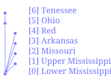
List of Nodes
List of node contains a separated list of node names or quoted string if the name is not valid identifier/number inside [].
network load_file("./data/mississippi.net")
nodes[tenessee,"lower-mississippi"] do print_attrs("NAME")
Results:
NAME = "tenessee"
NAME = "lower-mississippi"
Path of Nodes
Path of node has the same syntax as a path used in the network file. It has starting node and end node. Instead of it representing a single edge like in network file, it represents all the nodes that are between those two (inclusive) if the network is a rooted tree graph. If any nodes in between the nodes have multiple outputs, then the path doesn’t work. This limitation will be fixed in the future.
network load_file("./data/mississippi.net")
nodes[tenessee -> "lower-mississippi"] do print_attrs("NAME")
Results:
NAME = "tenessee"
NAME = "ohio"
NAME = "lower-mississippi"
As we can see in the diagram, the path from tenessee to lower mississippi includes the ohio node.
Logical Condition
Logical condition is used by putting an expression that evaluates to a boolean value inside the ().
network load_file("./data/mississippi.net")
nodes("mississippi" in NAME) do print_attrs("NAME")
Results:
NAME = "lower-mississippi"
NAME = "upper-mississippi"
Combination
You can combine the three different types of propagations in a single task using the syntax node<...>[...](...), they must come in that sequence as the order is decided first, then the list/path is taken, and finally the condition is evaluated to boolean before selecting the nodes.
For example:
network load_file("./data/mississippi.net")
nodesmap[tenessee -> "lower-mississippi"]("mississippi" in NAME) INDEX
nm<inv>[tenessee -> "lower-mississippi"] INDEX
nm<inv>[tenessee -> "lower-mississippi"](ORDER > 1) INDEX
Results:
{
"lower-mississippi" = 0
}
{
"lower-mississippi" = 0,
ohio = 5,
tenessee = 6
}
{
"lower-mississippi" = 0,
ohio = 5
}
Network Function
Network function runs on the network as a whole. It takes arguments and keyword arguments. Few network functions we have been using throughout the examples are load_file, load_str and cairo.table:
network load_file("./data/mississippi.net")
network command("mkdir -p output")
nodes.title = str_replace(NAME, "-", " ");
network cairo.table(
"Index => {INDEX}\n<Name => {NAME}\n",
"./output/network-mississippi-sdf.svg"
)
Results:
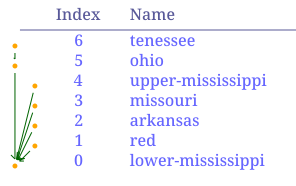
For example following network function takes file path as input to save the network in graphviz format:
save_gv(
outfile [PathBuf],
name [String] = "network",
global_attrs [String] = "",
node_attr [Option < Template >],
edge_attr [Option < Template >]
)
Note that, if the arguments have default values, or are optional, then you do not need to provide them.
For example, you can simply call the above function like this.
network load_file("./data/mississippi.net")
network save_gv("./output/test.gv")
network clip()
# the path link are relative to /src
network echo("./output/test.gv")
Results:
digraph network {
"red" -> "lower-mississippi"
"arkansas" -> "lower-mississippi"
"missouri" -> "lower-mississippi"
"upper-mississippi" -> "lower-mississippi"
"ohio" -> "lower-mississippi"
"tenessee" -> "ohio"
}
With extra commands you can also convert it into an image
network load_file("./data/mississippi.net")
network save_gv("./output/test.gv")
network command("dot -Tsvg ./output/test.gv -o ./output/test.svg")
network clip()
# the link path needs to be relative to this file
network echo("../output/test.svg")
Results:
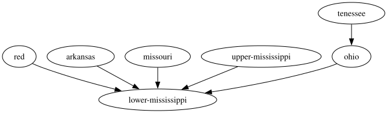
Cross Context Functions and Variables
You can access variable and call functions based on their default context (e.g. node variable/function in a node task). Additionally, you can also access the variables or call functions in select few other context.
By default, if a function is not available, node/network task calls the environment function of the same name.
For example, here the sum and array functions are environment functions, while the count is a network function. When you use NADI IDE, it’ll show you which function is actually being called at the top of the editor.
network load_str("a->b")
network sum(array(count(), 1))
Results:
3
Besides this, you can manually call cross context variable/functions in the following ways:
Env and Network Variables/Functions
You can use env and network variables anywhere in the task system with the dot syntax.
network load_str("a->b")
env.var = 12;
network.sth = true;
env render("this is {x}", x = network.sth)
network str(env.var)
nodes array(network.sth, env.var, node.NAME)
Results:
"this is true"
"12"
[[true, 12, "b"], [true, 12, "a"]]
Similary, env and network functions can be called anywhere. These functions cannot be mutable functions (change network internally).
Taking the previous example, if we use env function count, we get an error as the function arguments are different.
network load_str("a->b")
nodesmap network.count()
network sum(array(env.count(), 1))
*Error*:
{
b = 2,
a = 2
}
FunctionError at Line 3 Column 1: function count: Argument 1 (vars [& [bool]]) is required
Node Variables/Functions
You can use node, inputs, output and nodes keywords to access node variables and functions from different contexts. nodes is valid in all tasks, while the other 3 are only valid in a node task and refer to the current node, input nodes and output node respectively.
network load_file("./data/mississippi.net")
env count(nodes._)
nodesmap inputs.NAME
Results:
7
{
"lower-mississippi" = ["ohio", "upper-mississippi", "missouri", "arkansas", "red"],
red = [],
arkansas = [],
missouri = [],
"upper-mississippi" = [],
ohio = ["tenessee"],
tenessee = []
}
You can call node functions not just for the node in the context, but also for input nodes, and output node:
Please note that the root node (outlet) of the network doesn’t have output node, so we need to skip that, which can be done through the output._? which is checking for the dummy variable _ in output, which is true if the node has an output.
network load_file("./data/mississippi.net")
nm[tenessee -> "lower-mississippi"] inputs.render("{NAME}")
nm[tenessee -> "lower-mississippi"](output._?) output.render("{NAME}")
Results:
{
tenessee = [],
ohio = ["tenessee"],
"lower-mississippi" = ["ohio", "upper-mississippi", "missouri", "arkansas", "red"]
}
{
tenessee = "ohio",
ohio = "lower-mississippi"
}
You can also use nodes and nodesmap/nm keyword to call the function on each node, it can be used anywhere, but is useful for env and network context.
network load_file("./data/mississippi.net")
network nm.render("Node [{INDEX}] {NAME}")
Results:
{
"lower-mississippi" = "Node [0] lower-mississippi",
red = "Node [1] red",
arkansas = "Node [2] arkansas",
missouri = "Node [3] missouri",
"upper-mississippi" = "Node [4] upper-mississippi",
ohio = "Node [5] ohio",
tenessee = "Node [6] tenessee"
}
Plugins
Plugins are the main source of functions in the task system. There are two types of plugins,
- internal plugins: come with your nadi distribution, and
- external plugins: you can install them using shared libraries.
The functions available from the internal plugins are available in any format. You can access the functions with their name, or with plugin.name syntax.
External plugins are loaded from the directory in NADI_PLUGIN_DIRS environmental variable. If the shared library in that directory does not match the specification of NADI plugin, is compiled using different version, or compiled with different internal data structures, it will print warning and skip that file.
Security
Plugins can run arbitrary code, so users are expected to be careful while loading plugins by making sure it is not malicious.
Rust plugins give option to look at the code used to build the function, but it is only intended to be helpful, a malicious actor can still obfuscate, omit, or show different code than the actual function.
Furthermore, plugins can also replace functions if they have same name, look out for the warnings while running nadi.
Expect these Changes in the Future Versions to make the plugins system more secure in terms of function replacement problem:
- internal plugin names will be uppercase, and external lowercase, so that external plugins are not mistaken as internal ones, and no overwriting functions,
- external plugin functions always need to be accessed with dot syntax (
plugin.function(...)). And so that external functions are not called accidently.
This still will not solve the first problem, so always be vigilant using plugins. It is recommended to only use plugins developed in house, or those that you have source code of and can compile it yourself.
Further Reading
If you need help on any functions. Use the help as a task. You can use help node or help network for specific help. You can also browse through the function help window in the nadi-ide for help related to each functions.
help node render
Results:
node render (template: '& Template', safe: 'bool' = false)
Render the template based on the node attributes
# Arguments
- `template: & Template` String template to render
- `safe: bool` [def = false] if render fails keep it as it is instead of exiting
For more details on the template system. Refer to the String
Template section of the NADI book.
```task
network load_str("a -> b")
nodes.x = 13
nodes assert_eq(render("abc {x}"), "abc 13")
nodes assert_eq(render("abc {x} {a}", safe=true), "abc {x} {a}")
```
Or you can use nadi --fnhelp <function> using the nadi-cli.
Now that you have the overview of the nadi system’s data structures. We’ll jump into the software structure and how to setup and use the system.
If you want more details on any of the data structures refer the Developer’s references, or the library documentation.
Learn by Examples
This section teaches you the basics of the NADI Task System’s syntax with small examples. If you want a higher level example that focuses on the actual research problem instead of syntax then refer to the “Example Research Problems” Section on the sidebar.
For example data download the zip file here
| Topic | Learn About |
|---|---|
| Attributes | Setting and Getting Attributes |
| Control Flow | Control flow, if, else, while loops etc |
| Connections | Loading and modifying connections |
| Counting | Counting nodes in network, conditional |
| Cumulative | Calculating Network cumulative sums and those |
| Import Export | Importing and exporting multiple data formats |
| String Template | Using String Templates to do various things |
Attributes
There are 3 kind of attributes in nadi. Environment, Network and Node attributes. as their name suggests environment attributes are general attributes available in the current context. Network attributes are associated with the currenly loaded network. and node attributes are associated with each nodes.
nadi has special syntax where you can get/set attributes for multiple nodes at once.
network load_str("a -> b\n b -> d\n c -> d\n");
# environmental attribute
env.someattr = 123;
env.other = 1998-12-21;
env array(someattr, other)
# network attribute
network.someattr = true;
network.someattr
# node attributes
nodes.someattr = "string val";
nm.someattr
Results:
[123, 1965]
true
{
d = "string val",
c = "string val",
b = "string val",
a = "string val"
}
like you saw with the array function, variables used are inferred as the attributes of the current env/network/node task.
you can use attributes from outside of current task type in some cases like:
- env/network variables can be used anywhere
- node variables are valid in node tasks
- node tasks has special variables types like
inputsandoutput
network load_str("a -> b\n b -> d\n c -> d\n");
# environmental attribute
env.someattr = 123;
env.other = 1998-12-21;
# network attribute
network.someattr = true;
# using network attr in env task
env array(network.someattr, other)
# using nodes in network task
network nodes.NAME
Results:
[true, 1965]
["d", "c", "b", "a"]
Similarly inputs:
network load_str("a -> b\n b -> d\n c -> d\n");
nm inputs.NAME
Results:
{
d = ["b", "c"],
c = [],
b = ["a"],
a = []
}
Refer to the network diagram below to verify the output are correct:
network load_str("a -> b\n b -> d\n c -> d\n");
network cairo.table("Index => {INDEX}\nName => {NAME}\n", "./output/attrs-simp.svg")
Results:
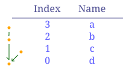
Control Flow
Task has some basic control flow required to write programs. They are if-else branches and while loops.
Conditional (If-Else) Blocks
There are two kind of if-else branches. One is on an expression level. which means there has to be if and else branch both as it expects a return value. The following example shows the expression with if-else block.
newvar = if (12 > 90) {"yes"} else {"no"};
newvar
Results:
"no"
Trying to do it without else block will result in an parse error as the program will error with a syntax error, for example the code below is invalid
newvar = if (12 > 90) {"yes"};
newvar
That’s when you can use the if-else block on the task level. This can be only if block as the execution blocks are tasks instead of expressions.
Here, since the condition is negative the task inside the block is never executed, hence newvar is empty.
if (12 > 90) {
newvar = "yes";
}
newvar
Results:
<None>
While Loop
While loop runs the tasks inside the block repeatedly while the condition is satisfied. There is an iteration limit of 1,000,000 for now just in case people write infinite loop. This is arbritary.
somevar = 1;
while (somevar < 10) {
echo(str(somevar));
somevar = somevar + 1
}
echo(r"Final value: {somevar}")
Results:
1
2
3
4
5
6
7
8
9
Final value: 10
This can be used to repeat a set of tasks for a various reasons.
Error Handling
try-catch blocks are similar to if-else where the try block contains the happy path (code to run if no errors are encountered), while any error will result in the code in the catch block being executed instead.
Currently you can only use try-catch inside an expression. Future versions will include the ability to use it with tasks as well.
try { 1 + 12 } catch { 2 }
try { 1 + "s" } catch { 2 }
Results:
13
2
Connections
Connections between the nodes is the most important part of nadi. you can load networks by loading a file or string. The network is a simple multiline text with one edge (input -> output) in each line. comments starting with # are supported.
Default is Empty Network
Tasks are run by default with an empty network. So you might still be able to work with network attributes, but the nodes will be empty. also note that when you load network it replaces the old one including the attributes.
network.someattr = 1234;
net.someattr
Results:
1234
But we can see the nodes are not there,
network count()
network nodes.NAME
Results:
0
[]
Trying to run node functions on the empty network means nothing is run
nodes render("{NAME}")
Results:
[]
Loading Network from String
Here assume we have a network consisting of nodes of dams and gages like the following where dam nodes start with d and gages with g:
network load_str("
d1 -> d2
d3 -> g2
d2 -> g1
g1 -> d4
g2 -> d4
d4 -> g3
");
network cairo.table("Index => {INDEX}\nName => {NAME}\n", "./output/load-str.svg")
Results:
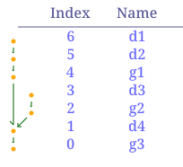
Loading Network from a File
we can load a network from a file:
command("rm output/ex-network-conn.svg")
network load_file("./data/mississippi.net");
network cairo.table("Index => {INDEX}\nName => {NAME}\n", "./output/ex-network-conn.svg")
Results:
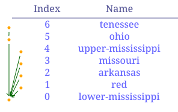
Modifying the network
You can modify the network after loading it as well. The example below extracts just the nodes that are dams. Compare this with the previous network to see how the connections are retained during the subsets.
network load_str("
d1 -> d2
d3 -> g2
d2 -> g1
g1 -> d4
g2 -> d4
d4 -> g3
");
nodes.is_dam = NAME match "^d[0-9]+";
nodes(is_dam).visual = {nodecolor = "red"};
network cairo.table("Index => {INDEX}\n<Name => {NAME}\n", "./output/simple-count-before-subset.svg")
Results:
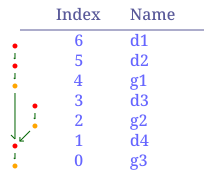
network load_str("
d1 -> d2
d3 -> g2
d2 -> g1
g1 -> d4
g2 -> d4
d4 -> g3
");
nodes.is_dam = NAME match "^d[0-9]+";
nodes(is_dam).visual = {nodecolor = "red"};
network subset(nodes.is_dam);
network cairo.table("Index => {INDEX}\n<Name => {NAME}\n", "./output/simple-count-subset.svg")
Results:
This can be useful when you want to remove nodes that do not satisfy some selection criteria for your analysis without having to redo the network detection part.
Counting Nodes
Here assume we have a network consisting of nodes of dams and gages like the following where dam nodes start with d and gages with g:
network load_str("
d1 -> d2
d3 -> g2
d2 -> g1
g1 -> d4
g2 -> d4
d4 -> g3
");
network cairo.table("Index => {INDEX}\n Name => {NAME}", "./output/simple-count.svg")
Results:
Simply counting number of nodes, or certain types of nodes in a network is done through count function.
network load_str("
d1 -> d2
d3 -> g2
d2 -> g1
g1 -> d4
g2 -> d4
d4 -> g3
");
nodes.g_node = NAME match "^g[0-9]+";
network count()
network count(nodes.g_node)
network count(nodes.g_node) / count()
Results:
7
3
0.42857142857142855
when you call a network function, you get one output, while a node function will give you the output for each node like here:
network load_str("
d1 -> d2
d3 -> g2
d2 -> g1
g1 -> d4
g2 -> d4
d4 -> g3
");
nodes.g_node = NAME match "^g[0-9]+";
nm.g_node
Results:
{
g3 = true,
d4 = false,
g2 = true,
d3 = false,
g1 = true,
d2 = false,
d1 = false
}
Always be careful that node function is run for all the nodes separately, if you are running them without any variables from the node, then you can use network function, or environment function to get the results.
Counting the number of nodes upstream of each node gives us the order of the nodes.
network load_str("
d1 -> d2
d3 -> g2
d2 -> g1
g1 -> d4
g2 -> d4
d4 -> g3
");
nodes<inputsfirst>.nodes_us = 1 + sum(inputs.nodes_us);
network cairo.table("Index => {INDEX}\n <Name => {NAME}\nNodes U/S => {nodes_us}", "./output/simple-count-1.svg")
Results:
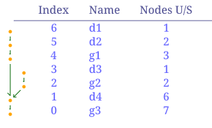
We can add a condition and count the nodes that satisfy that condition only. Like counting the number of dams upstream of each node (including the node).
network load_str("
d1 -> d2
d3 -> g2
d2 -> g1
g1 -> d4
g2 -> d4
d4 -> g3
");
nodes.is_dam = NAME match "^d[0-9]+";
nodes(is_dam).visual = {nodecolor = "red"}
nodes<inputsfirst>.dams_us = int(is_dam) + sum(inputs.dams_us);
network cairo.table("Index => {INDEX}\n Name => {NAME}\nDams U/S => {dams_us}", "./output/simple-count-2.svg")
Results:
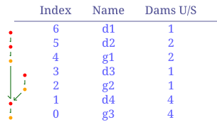
You can similarly count the number of gages downstream. Here we need a conditional unlike in previous cases as not all nodes have output. In case of inputs, a leaf node would have no inputs but sum([]) would still be a valid output of 0. But for node without output nodes, the variable type output fails with NoOutputNode error, so we add a conditional check to avoid that.
network load_str("
d1 -> d2
d3 -> g2
d2 -> g1
g1 -> d4
g2 -> d4
d4 -> g3
");
nodes.is_gage = NAME match "^g[0-9]+";
nodes(is_gage).visual = {nodecolor = "red"};
nodes<out>.gages_ds = int(is_gage) + sum(outputs.gages_ds);
network cairo.table("Index => {INDEX}\n Name => {NAME}\nGages D/S => {gages_ds}", "./output/simple-count-3.svg")
Results:
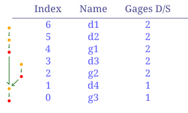
Here the condition (output._?) checks if there is output on the node or not by checking for the dummy variable _ which is present in all nodes/network.
Cumulative Sum
Here we can use the stream ordering formula to calculate the stream order for each node:
network load_str("
d1 -> d2
d3 -> g1
d2 -> g1
g1 -> d4
g2 -> d4
d4 -> g3
");
nodes<inputsfirst>.stream_ord = max(inputs.stream_ord, 1) + int(count(inputs._) > 1);
network cairo.table("Name => {NAME}\nstream_ord => {stream_ord}", "./output/cumulative-1.svg")
Results:
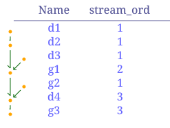
The first part takes the maximum order of the input nodes, then the second part int(count(inputs._?) > 1) checks if there are more than one input, adding one to the order when multiple streams combine into one. You can use the funciton inputs_count() instead of count(inputs._?) to do the same thing.
That is the core of the NADI Task System, you can write functions that have their own logic and then load them into the system. You can then use the syntax and network based analysis methods of NADI using those functions.
And of course, we can visualize the different order of streams for easier understanding.
network load_str("
d1 -> d2
d3 -> g1
d2 -> g1
g1 -> d4
g2 -> d4
d4 -> g3
");
nodes<inputsfirst>.stream_ord = max(inputs.stream_ord, 1) + int(count(inputs._) > 1);
nodes.visual = {};
nodes.visual.linewidth = stream_ord;
nodes.visual.nodecolor = "white";
nodes(stream_ord == 1).visual.linecolor = "green";
nodes(stream_ord == 2).visual.linecolor = "blue";
nodes(stream_ord == 3).visual.linecolor = "red";
network cairo.table("Name => {NAME}\nstream_ord => {stream_ord}", "./output/cumulative-2.svg")
Results:
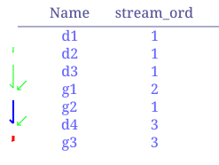
Import Export Files
Similar to how you can load network files, you can load attributes from files as well. Direct load of TOML format is supported from the internal plugins, while you might need external plugins for other formats.
load_attrs function takes a template, and reads a different files for each node to load the attributes from.
network load_file("data/ohio.network")
nodes do load_attrs("data/attrs/{NAME}.toml")
network cairo.table("
<Name => {NAME}
>Area => {basin_area?:.2}
", "./output/ohio-import-export.svg")
Results:
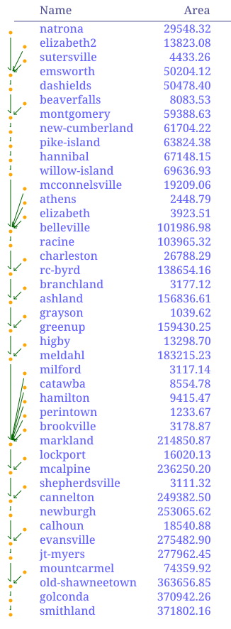
You can use the render function to see if the files being loaded are correct. Here we can see the examples for the first 4 nodes:
network load_file("data/ohio.network")
nodes(INDEX<4) r"data/attrs/{NAME}.toml"
Results:
["data/attrs/smithland.toml", "data/attrs/golconda.toml", "data/attrs/old-shawneetown.toml", "data/attrs/mountcarmel.toml"]
You can also read a attributes from string, so you can combine that with FILES.from_file and load it.
network load_file("data/ohio.network")
somevalue = ATTRS.parse_attrmap(
FILES.from_file("data/attrs/smithland.toml")
);
somevalue.basin_area
somevalue.length
Results:
371802.16
1675.95
You can export csv files
network load_file("data/ohio.network")
nodes do ATTRS.load_attrs("data/attrs/{NAME}.toml")
network TABLE.save_csv("output/ohio-export.csv", ["NAME", "basin_area", "length"])
network command("cat output/ohio-export.csv | head", echo=true)
Results:
$ cat output/ohio-export.csv | head
NAME,basin_area,length
"smithland",371802.16,1675.95
"golconda",370942.26,1701.32
"old-shawneetown",363656.85,1772.27
"mountcarmel",74359.92,1918.08
"jt-myers",277962.45,1791.07
"evansville",275482.9,1878.29
"calhoun",18540.88,1992.5
"newburgh",253065.62,1903.58
"cannelton",249382.5,1993.72
GIS Files
First we make a GIS file by exporting. The image below shows the resulting points (red) from the shapefile and connections (black) from the Geopackage file when we visualize this on QGIS (with background of Terrain and Ohio River tributaries).
network load_file("data/ohio.network")
nodes do ATTRS.load_attrs("data/attrs/{NAME}.toml")
nodes.geometry = r"POINT ({lon} {lat})";
network gis.save_nodes(
"output/ohio-nodes.shp",
"geometry",
{
NAME = "String",
basin_area = "Float",
length = "Float"
}
)
# Exporting the edges
network gis.save_connections(
"output/ohio-connections.gpkg",
"geometry"
)
Results:
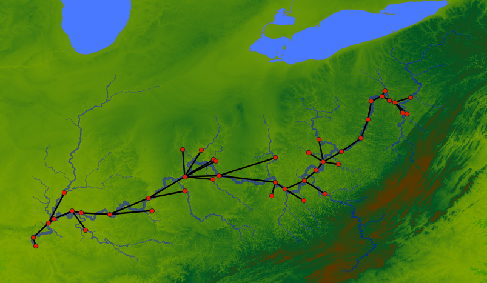
The geometry attributes should be WKT String.
Now we are using the generated GIS files to load the network and the attributes:
network gis.load_network("output/ohio-connections.gpkg", "start", "end")
network gis.load_attrs("output/ohio-nodes.shp", "NAME")
network cairo.table("
<Name => {NAME}
>Area => {basin_area?:.1}
>Length => {length:.1}
", "output/ohio-from-gis.svg"
)
Results:
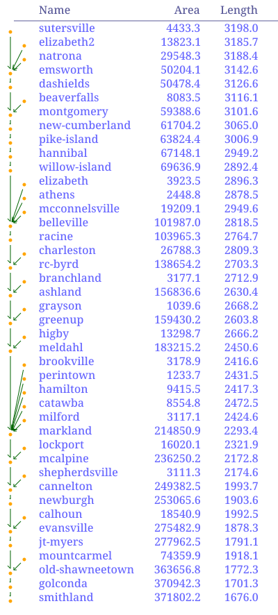
As we can see the plugins make it easier to interoperate with a lot of different data formats. Here GIS plugin will support any file types supported by gdal. Similarly, other formats can be supported by writing plugins.
String Templates
NADI Extension Capabilities
NADI System can be extended for custom use cases with the following ways:
- User Defined Functions in the DSL
- Rust Library
- Python Library
- Plugin System
Effects of Dams
Ohio River is one of the largest river basin in the USA. The development of the basin and its river system started early, so we have a problem where many streamgages never recorded the river in their natural state. In these examples, we’ll try to load a network, validate the network based on metadata, count the dams/gages, and get the year of earliest constructed dam upstream for further analysis.
The examples in this chapter loads the data for the dams from National Inventory of Dams (NID), and USGS gages from Gages.shp (EPA and USGS), and uses the network developed using the NHDPlus streamlines above the Ohio River at Smithland Streamgage.
The files used in this demo are follows:
| Data | Filename | Source |
|---|---|---|
| NID Data | nid-uniq.gpkg | National Inventory of Dams |
| Gage Locations | GageLoc.shp.zip | US EPA & USGS |
| Gage Attributes | gages-II.gpkg | USGS |
| Gage Drainage | usgs-drainage.csv | Scrapped from USGS NWIS |
Except NID data (due to large size), the others are also in the src/data/ohio-river directory on the repository of this book. Place the nid data into it before running the examples from this chapter. If you’re using the repository, you also have to unzip the gages-II.gpkg.zip into gages-II.gpkg.
The Gage Drainage data is scrapped manually for some basins from the USGS website to increase the amount of gage we know the drainage area of, you can skip that in loading and still be able to do your analysis.
Validating Network
Different from other chapters, the code in this chapters are run in the order they are given, meaning each task code blocks are not independent.
Load Network and Attributes
We’ll use the same network from the Dams count example.
network load_file("data/ohio-river/ohio.network")
network count()
roots.NAME
nodes.is_usgs = NAME match "^[0-9]+";
nodes.is_dam = !is_usgs;
network count(nodes.is_usgs)
network count(nodes.is_dam)
Results:
5987
["03399800"]
1806
4181
Then we load the node attributes from the gis files, we can see some of the variables are loaded from NID website.
network gis.load_attrs("data/ohio-river/nid-uniq.gpkg", "nidId")
network gis.load_attrs("data/ohio-river/GageLoc.shp.zip", "SOURCE_FEA")
network gis.load_attrs("data/ohio-river/gages-II.gpkg", "STAID")
network gis.load_attrs("data/ohio-river/usgs-drainage.csv", "SiteNumber")
nm(INDEX < 5).yearCompleted # only NID dams have it
nm(INDEX < 5).GEOM # all nodes have it although from different sources
Results:
{
"03399800" = <None>,
IL50499 = 1980,
IL40055 = 1980,
IL00955 = 1977,
IL00070 = 1960
}
{
"03399800" = "POINT (-88.4234349499133 37.1612042742605 0)",
IL50499 = "POINT (-88.42921894 37.16622664)",
IL40055 = "POINT (-88.77145 37.401709)",
IL00955 = "POINT (-88.78582 37.38365)",
IL00070 = "POINT (-88.57139 37.21975)"
}
Also note that, while loading GIS files it also loads the geometry into “GEOM” attribute (you can change it through change function argument).
Process Attributes
Since we need a quick and easy way to identify USGS gage and NID dam, we use regex to categorize them.
nodes.is_usgs = NAME match "^[0-9]+";
nodes.is_dam = !is_usgs;
network count(nodes.is_usgs)
network count(nodes.is_dam)
Results:
1806
4181
The basin area is stored as different variable in each dataset, we want to combine them into a single one.
nodes do {
try {
node.ba = first_attr(["drainageArea", "DRAIN_SQKM", "Drainage"])
} catch {}
}
network count(nodes {ba?}) / count()
Results:
0.7561382996492401
Even then we only have 75% of the nodes with basin area. Since the DrainageArea is in sqmiles
If we look at some examples here on two sources of basin area of USGS gages, we can see the problems:
nm(is_usgs & Drainage? & DRAIN_SQKM? & INDEX < 100) [Drainage, DRAIN_SQKM]
Results:
{
"03384450" = ["42.9", 111.1266],
"03383000" = ["255.0", 660.5415],
"03382100" = ["147.0", 367.272]
}
- The
Drainagevalue areString, - The units are different (confirmed from metadata of datasets).
So we reconcile that,
nodes(Drainage?).basin_area = float(Drainage);
nodes(DRAIN_SQKM?).basin_area = DRAIN_SQKM * 0.38610216
*Error*:
FunctionError [410014081362600] at Line 1 Column 1: function float: cannot parse float from empty string
We got an error, seems like Drainage contains empty strings as well. That and the String part comes from loading a CSV without data types (.csvt file).
Let’s fix the code for that, and also let’s get the basin_area for dams.
nodes(Drainage? & Drainage match "[0-9]+(.[0-9]+)?").basin_area = float(Drainage);
nodes(DRAIN_SQKM?).basin_area = DRAIN_SQKM * 0.38610216;
nodes(drainageArea?).basin_area = float(drainageArea);
nm(INDEX < 10).basin_area
network count(nodes {basin_area?}) / count()
Results:
{
"03399800" = <None>,
IL50499 = 144000,
IL40055 = 0.08,
IL00955 = <None>,
IL00070 = <None>,
IL00039 = <None>,
"03386500" = 9.853134072120001,
IL00102 = 2,
"03386000" = <None>,
"03385500" = <None>
}
0.755971271087356
Check for Incorrect Basin Areas
Now we have all the different variables combined into a single one with same data type and unit. Let’s do a quick analysis to see if there are points in the network where nodes have larger area than input nodes.
nodes.incorrect = basin_area < sum(inputs.basin_area);
network count(nodes.incorrect)
*Error*:
EmptyValueError at Line 1 Column 1: the expression resulted in empty value
The error here comes from the fact that not all nodes contain basin_area attribute. Since basin_area? will only check for the current node, we use a default value when the values are not available into a temporary variable.
nodes.temp_ba = basin_area ? 0.0;
nodes.incorrect = basin_area? & (basin_area < sum(inputs.temp_ba));
network count(nodes.incorrect)
network count(nodes.incorrect) / count()
Results:
547
0.09136462335059295
That’s around 10% error rate.
Looking at the actual values, few of them seem to be due to minor errors in values, while most of them seem to be from large input area.
nm(incorrect) [basin_area, sum(inputs.temp_ba)]
Results:
{
IL00028 = [1.5, 30.036998660096],
IL50443 = [0.04, 141009.11000000002],
KY00192 = [0.07, 0.31],
IN04021 = [0.08, 0.2],
IN03653 = [0.04, 0.37],
IL50585 = [0.03, 0.16],
IL01085 = [240, 240.171142047264],
IL00606 = [0.6, 57],
IN00316 = [0.09, 0.15],
IN00317 = [0.15, 0.7000000000000001],
IN00319 = [0.7000000000000001, 43.053904369656],
IN03161 = [0.06, 0.07],
IN03160 = [0.07, 3.0100000000000002],
IN04048 = [0.4, 0.53],
IN00627 = [0.53, 1.1300000000000001],
IN03433 = [0.03, 1.82],
IN00617 = [0.27, 0.49],
IN00480 = [0.56, 21.637975860936002],
IN00618 = [0.41000000000000003, 1.2700000000000002],
IN00098 = [0.33, 263.021357392616],
IN00035 = [0.23, 168.12355234608],
"03343010" = [13732, 13755.171304576803],
IN00528 = [0.21, 0.32],
IN00151 = [1.18, 4.75],
IN03337 = [1.1500000000000001, 42.9097178978],
IN00107 = [0.55, 8.22],
IN00209 = [1.8, 8.48],
IN00091 = [0.6900000000000001, 0.87],
IN00092 = [0.87, 8.38],
IN00462 = [0.39, 1.1500000000000001],
IL40011 = [2.36, 11.4],
IN00726 = [0.01, 0.2],
IN00731 = [0.2, 3.73],
IN00729 = [0.16, 1],
IL00742 = [0.2, 21.7],
IN00722 = [0.29, 3.08],
IN00723 = [0.2, 1],
IN00437 = [0.2, 2.4],
IN00721 = [0.17, 0.39],
IN00431 = [0.39, 0.85],
IN03216 = [0.25, 0.5],
IN00728 = [0.66, 11167.3448859856],
IN00288 = [0.09, 0.34],
IN00505 = [0.03, 223.256539885312],
IN04020 = [0.13, 1.09],
IN03196 = [0.25, 677.48802118264],
IN00735 = [1.9000000000000001, 2.15],
IL50291 = [0.06, 69.89807631177601],
IN00753 = [0.3, 1868.7614815512],
IN00459 = [0.31, 1790],
"03332605" = [1790, 1793],
IN00240 = [1.6, 35.2],
IN03801 = [0.2, 809],
IN03355 = [0, 695.78422034768],
IN00321 = [0.23, 0.49],
IN03984 = [0.13, 8.620000000000001],
IN03462 = [0, 33.65716107796],
IN00763 = [0.09, 0.45],
IN00767 = [0, 768.8080807372801],
IN00441 = [0.38, 556.23730459968],
IN03434 = [0, 263.58341177426405],
IN03758 = [0.64, 578.7119252311201],
IN00445 = [0.37, 499.66125210536006],
IN00207 = [0.26, 0.28],
IN00257 = [0.28, 308.349756443952],
OH03208 = [0.02, 0.06],
OH00258 = [0.12, 12.49],
IN00188 = [0.79, 4.04],
IN00057 = [1.2, 14.2],
IN00120 = [0.44, 14.450000000000001],
IN03353 = [0, 0.25],
IN00166 = [0.22, 0.97],
IN00325 = [0.21, 0.63],
IN00460 = [0.15, 834.9862486900802],
IN03430 = [0.25, 0.78],
IN00708 = [0.16, 0.29],
IN03789 = [0.02, 0.11],
IN03788 = [0.11, 0.43],
IN00709 = [0.23, 0.36],
IN03956 = [0.13, 294.15926653704],
"03359000" = [294.15926653704, 295],
IN00663 = [0, 0.37],
IN00666 = [0, 0.85],
IN00704 = [0.35000000000000003, 10.75],
IN00702 = [0, 134.30289503066402],
IN00711 = [0, 2986.82183069928],
IN00695 = [0.15, 0.66],
IN03272 = [0, 1.75],
IN00691 = [0.22, 15.1],
IN00665 = [0.45, 0.63],
IN03503 = [0.02, 1.23],
IN00563 = [0.1, 3.1],
IN03189 = [0.1, 0.38],
IN04040 = [0.09, 0.48],
IN04043 = [0.48, 9.34],
IN03961 = [0.16, 0.34],
IN00363 = [0.92, 7.3],
IN00365 = [0.88, 1.67],
IN00361 = [1.67, 72.23],
IN00581 = [0.04, 0.09], ...
}
This could be due to the error in snapping to the streamlines. It is also possible that some basin area that are missing are contributing to the unaccounted area.
Let’s try to fix them, or avoid points without data.
nodes.all_inputs_ba = all(inputs {basin_area?});
nodes.incorrect = basin_area? & all_inputs_ba & (
basin_area < (0.975 * sum(inputs.basin_area))
);
network count(nodes.incorrect)
network count(nodes.incorrect) / count()
Results:
451
0.07532988140972106
Looks like 7.5% of the errors are reasonable errors from network detection.
network count(nodes {incorrect & is_usgs})
network count(nodes {incorrect & is_dam})
Results:
8
443
This shows that the majority of the errors come from the NID dams, which makes sense given the GageLoc.shp data has points indexed to the NHDPlus streamlines, while the NID Dams are not indexed to it. Furthermore, looking at the attributes in QGIS shows, many dams are in locations without streamlines, and even then sometimes they have unusually large basin area values for their location.
Export to GIS for visualization
We can export this result to a GIS file and look into individual cases in QGIS.
network gis.save_nodes(
"output/ohio-gages-check.gpkg",
"GEOM",
{
NAME="String",
is_usgs="String",
incorrect="String",
basin_area="Float"
}
)
Results:
We also need connection information to cross reference, let’s make them through some string manipulation. NADI GIS plugin uses WKT format for geometries, which are string values, so we can manipulate them using string functions.
Note: we should probably add a function for this in future. A WKT plugin to work with geometries.
nodes.xy_coords = str_find_all(node.GEOM, "-?[0-9]+[.][0-9]+");
nodes(output._?).out_coords = str_find_all(output.GEOM, "-?[0-9]+[.][0-9]+");
nodes(! output._?).conn_geom = GEOM
nodes(output._?).conn_geom = env.render(
"LINESTRING ({x1} {y1}, {x2} {y2})",
x1=get(node.xy_coords, 0),
y1=get(node.xy_coords, 1),
x2=get(node.out_coords, 0),
y2=get(node.out_coords, 1)
)
nodes(output._? & (INDEX < 10)).conn_geom
network gis.save_connections("output/ohio-conn-all.gpkg", "conn_geom")
Results:
["LINESTRING (-88.42921894 37.16622664, -88.4234349499133 37.1612042742605)", "LINESTRING (-88.77145 37.401709, -88.42921894 37.16622664)", "LINESTRING (-88.78582 37.38365, -88.42921894 37.16622664)", "LINESTRING (-88.57139 37.21975, -88.42921894 37.16622664)", "LINESTRING (-88.68815 37.38965, -88.42921894 37.16622664)", "LINESTRING (-88.6736645 37.4156072, -88.68815 37.38965)", "LINESTRING (-88.66408 37.41518, -88.6736645 37.4156072)", "LINESTRING (-88.6637356477429 37.4140878122472, -88.66408 37.41518)", "LINESTRING (-88.6494395725886 37.4141446558289, -88.6637356477429 37.4140878122472)"]
When we visualize the output in QGIS, we can see the nodes where the basin_area are not correct based on the network information.

The zoomed in images at the bottom shows some of the reasons:
- [left] Incorrect Data in database (I think the dam coordinates are wrong on the blue dot with 277 basin area),
- [middle & right] Not enough streamlines for smaller details, and
- Nearest river detection algorithm problem from not considering river width.
The example for the last problem can be seen in the Video demostration for NADI QGIS Plugin.
Counting Ohio Dams
In the previous example we validated the network using basin_area. You can also use other properties like river mile to validate the network connection. Or to validate the metadata.
In this example, we’ll be assuming there are some errors and continue with our analysis. Because the errors are mostly in the placement of dams, the count of dam upstream of a gage is still the same. For example:
If our network is:
gage1 -> dam1
dam1 -> gage2
instead of:
gage1 -> gage2
dam1 -> gage2
For both gage, number of dams upstream (or the first dam construction year upsteam) is still the same, even though there is error on the same calculation in the dam.
Load Network and Attributes
First load the network
network load_file("data/ohio-river/ohio.network")
network count()
roots.NAME
Results:
5987
["03399800"]
Identify Dams and Gages
Since we need a quick and easy way to identify USGS gage and NID dam, we use regex to categorize them.
nodes.is_usgs = NAME match "^[0-9]+";
nodes.is_dam = !is_usgs;
network count(nodes.is_usgs)
network count(nodes.is_dam)
Results:
1806
4181
Count Dams/Gages Upstream
Now we simply count the number of dams and gages upstream recursively. We run it inputs first, so that the count begins with leaf nodes where we get 1 for the category we’re counting and 0 otherwise, then we propagate that value downstream.
nodes<inp>.ngage = int(is_usgs) + sum(inputs.ngage);
nodes<inp>.ndam = int(!is_usgs) + sum(inputs.ndam);
nm(INDEX < 10) array(ngage, ndam)
Results:
{
"03399800" = [1806, 4181],
IL50499 = [1805, 4181],
IL40055 = [0, 1],
IL00955 = [0, 1],
IL00070 = [0, 1],
IL00039 = [3, 2],
"03386500" = [3, 1],
IL00102 = [2, 1],
"03386000" = [2, 0],
"03385500" = [1, 0]
}
If we run this code without the inputsfirst/inp propagation, we get an error because the node’s inputs will not have ngage and ndam values.
The counting is done, super simple right? NADI’s ability to work with networks mean that some things are super simple compared to other languages.
GIS Visualization
Again, if we use nadi-gis plugin, then we can export this result and visualize it in QGIS.
network gis.save_nodes(
"output/ohio-gages-count.gpkg",
"GEOM",
{
NAME="String",
is_usgs="String",
ndam="Integer",
ngage="Integer"
}
)
After applying some filters and styles in QGIS, we can look at the numbers visually,

Extra: Counting Large Dams
The definition of large dam: https://www.icold-cigb.org/GB/dams/definition_of_a_large_dam.asp
- height of more than 15 meters,
- height between 5m and 15m impounding more than 3 million cubic meters.
Converting them to imperial units we get:
| Metric | Imperial |
|---|---|
| 15m | 49.21ft |
| 5m | 16.40ft |
| 3 x 10⁶ m³ | 810.71 acre feet |
Now, we need to load the dam attributes from NID database.
network gis.load_attrs("data/ohio-river/nid-uniq.gpkg", "nidId")
nodes(is_dam).dam_height = float(nidHeight);
nodes(is_dam).dam_storage = float(nidStorage);
network count(nodes.is_dam)
network count(nodes {dam_height? & dam_storage?})
nm(is_dam & (INDEX < 10)) array(dam_height, dam_storage)
Results:
4181
4181
{
IL50499 = [56, 738700],
IL40055 = [28, 47],
IL00955 = [36, 366],
IL00070 = [24, 153],
IL00039 = [59, 633],
IL00102 = [38, 1814]
}
Lot’s of basins do not have basin area.
First, using the previous requirements for large dams:
nodes.large_dam = is_dam & ((dam_height > 49) | ((dam_height > 16) & (dam_storage > 811)));
network count(nodes.large_dam)
network count(nodes.large_dam) / count(nodes.is_dam)
Results:
1135
0.27146615642190863
This will allow us to run the same counting as before:
nodes<inp>.nldam = int(large_dam) + sum(inputs.nldam);
nm(INDEX < 10) array(ndam, nldam)
Results:
{
"03399800" = [4181, 1135],
IL50499 = [4181, 1135],
IL40055 = [1, 0],
IL00955 = [1, 0],
IL00070 = [1, 0],
IL00039 = [2, 2],
"03386500" = [1, 1],
IL00102 = [1, 1],
"03386000" = [0, 0],
"03385500" = [0, 0]
}
Although not obivious, the numbers were quite large, so when I inspected the NID data, some dams seem to have very high height values that do not match.
Let’s load basin area and flag any locations with more than 50ft of dam height, and less than 10 square miles of basin area.
nodes(is_dam & drainageArea?).basin_area = float(drainageArea);
network count(nodes {basin_area?})
nodes(! basin_area?).basin_area = nan;
nodes.flag = large_dam & ((dam_height > 50) & (basin_area < 10));
network count(nodes.flag)
nm(flag & (INDEX < 1000)) array(dam_height, dam_storage, basin_area)
Results:
3766
353
{
IL50593 = [108, 10790, 0.27],
IL50678 = [110, 5250, 0.1],
IL50066 = [55, 1087, 0.7000000000000001],
IN00446 = [54, 7538, 4.75],
IL00688 = [52, 3474, 3.3000000000000003],
IN00439 = [56, 321, 0.52],
IN03920 = [55, 39, 0.02],
IN00505 = [56, 66, 0.03],
IN00036 = [63, 1595, 1.2],
IN00201 = [55, 2861, 4.69],
IN00181 = [55, 1380, 4.7],
IN00069 = [68, 6718, 5.8],
IN03731 = [57, 128, 0.8200000000000001],
IN03007 = [55, 29800, 0],
IN00197 = [62, 3555, 1.82],
IN00103 = [60, 1158, 0.36],
IN00133 = [82, 13000, 9.34],
IN00342 = [63, 198, 0.19],
IN00565 = [53, 109, 0.1]
}
We don’t have all basin areas, but from this we flagged around 300 dams. Looking at the values, IL50678 basically says it has a dam with height of 110, but basin area of 0.1, which seems very unreasonable. To remove these from our identification process, let’s add another category.
nodes.large_dam = is_dam & (((dam_height > 49) | ((dam_height > 16) & (dam_storage > 811))) & (basin_area > 10));
network count(nodes.large_dam)
network count(nodes.large_dam) / count(nodes.is_dam)
Results:
321
0.07677589093518297
The number of dams that are now categorized as large dams have been reduced significantly.
Extra: Looking at Main Stem of the River
Let’s look at the values along the main stem. LEVEL == 0 means the mainstem of the network.
nm(LEVEL==0) array(ngage, ndam, nldam)
Results:
{
"03399800" = [1806, 4181, 1135],
IL50499 = [1805, 4181, 1135],
"03384500" = [1801, 4169, 1129],
IL50443 = [1799, 4164, 1129],
"03381700" = [1785, 4065, 1097],
KY03060 = [1454, 3087, 905],
"03322420" = [1454, 3086, 904],
IN03661 = [1451, 3067, 897],
"03322190" = [1451, 3061, 897],
KY01059 = [1450, 3061, 897],
"03322000" = [1448, 3044, 894],
IN04061 = [1388, 2822, 826],
"03304300" = [1388, 2821, 826],
KY03059 = [1387, 2821, 826],
"03303500" = [1386, 2809, 823],
KY01255 = [1383, 2771, 815],
KY00842 = [1383, 2769, 814],
IN03297 = [1383, 2768, 813],
KY03058 = [1383, 2765, 813],
"03303280" = [1383, 2764, 812],
IN03192 = [1382, 2764, 812],
KY01272 = [1373, 2726, 807],
"03294600" = [1322, 2576, 789],
KY00597 = [1318, 2572, 788],
KY01022 = [1318, 2571, 788],
"03294500" = [1318, 2570, 788],
KY03034 = [1316, 2552, 780],
"03293600" = [1316, 2551, 779],
"03293551" = [1315, 2551, 779],
"03293550" = [1314, 2551, 779],
"03293548" = [1313, 2551, 779],
IN00643 = [1295, 2533, 775],
KY03033 = [1220, 2287, 689],
"03277200" = [1220, 2286, 688],
KY01215 = [1217, 2272, 685],
OH01690 = [1111, 2112, 657],
"03255000" = [1091, 2087, 648],
OH01350 = [1013, 1898, 616],
"03238680" = [1011, 1886, 612],
KY03032 = [1010, 1886, 612],
KY00938 = [1004, 1869, 609],
KY01093 = [1003, 1868, 609],
"03238000" = [1003, 1867, 608],
OH03181 = [1002, 1866, 607],
"03217200" = [883, 1700, 573],
KY03031 = [875, 1692, 572],
"03216600" = [875, 1691, 571],
"03216000" = [868, 1680, 568],
"03206000" = [788, 1596, 513],
WV05302 = [760, 1568, 503],
"03201500" = [622, 1335, 415],
"03160000" = [621, 1335, 415],
OH00971 = [619, 1327, 411],
WV05312 = [617, 1318, 408],
WV05313 = [617, 1317, 407],
WV05301 = [617, 1314, 407],
"03159870" = [617, 1313, 406],
WV10702 = [609, 1296, 399],
"03159530" = [609, 1295, 398],
"03151000" = [564, 1186, 358],
OH00943 = [563, 1185, 358],
OH00939 = [563, 1184, 358],
"03150700" = [563, 1182, 357],
WV07301 = [396, 842, 288],
WV10301 = [393, 836, 285],
"03114280" = [393, 835, 284],
"03114275" = [392, 835, 284],
WV05108 = [389, 827, 280],
"03113600" = [385, 805, 273],
"03112500" = [377, 798, 270],
"03111534" = [373, 769, 251],
WV06908 = [372, 769, 251],
"03111520" = [372, 768, 250],
"03111515" = [371, 768, 250],
OH03169 = [368, 742, 246],
WV02901 = [362, 704, 227],
"03110690" = [362, 703, 226],
OH03172 = [361, 703, 226],
"03110685" = [361, 702, 226],
"03108500" = [344, 661, 219],
PA00128 = [343, 661, 219],
"03108490" = [343, 660, 218],
PA00127 = [279, 528, 184],
"03086000" = [279, 527, 183],
PA00126 = [276, 519, 181],
"03085730" = [276, 518, 180],
PA01994 = [142, 265, 96],
PA00120 = [141, 264, 96],
"03085000" = [141, 263, 95],
"03075070" = [100, 192, 73],
"03075000" = [98, 172, 64],
PA00122 = [97, 172, 64],
PA00123 = [94, 156, 60],
PA01549 = [89, 135, 50],
PA01265 = [89, 133, 49],
PA00124 = [88, 121, 44],
"03072655" = [88, 120, 43],
"03072500" = [86, 118, 43],
PA00125 = [45, 90, 36],
"03063000" = [45, 89, 35], ...
}
If you want to be more accurate, we can load the SiteName from GIS file and match the node with “Ohio River” in its name with the lowest order to find the first Ohio River Node.
Earliest Dam Year
First load the network, and attributes
network load_file("data/ohio-river/ohio.network")
network gis.load_attrs("data/ohio-river/nid-uniq.gpkg", "nidId")
nodes.is_usgs = NAME match "^[0-9]+";
nodes.is_dam = !is_usgs;
network count(nodes.is_usgs)
network count(nodes.is_dam)
Results:
1806
4181
Counting the upstream dams again,
nodes<inp>.ndam = int(is_dam) + sum(inputs.ndam);
nodes.no_dam_us = ndam == 0;
network count(nodes {no_dam_us & is_usgs})
network count(nodes {no_dam_us & is_usgs}) / count(nodes.is_usgs)
Results:
605
0.33499446290143964
We can see 33% of the USGS gages do not have dams upstream.
And for those that do, let’s look at the construction year,
env.max_year = 9999; # todo test it with nan
nodes.dam_year = int(get_attr("yearCompleted", env.max_year));
nodes<inp>.dam_aff_yr = min_num(inputs.dam_aff_yr, dam_year);
nodes<inp>.dam_affected = dam_aff_yr < env.max_year;
network count(nodes.dam_affected & nodes.is_usgs)
network count(!nodes.no_dam_us & nodes.is_usgs)
network count(nodes.dam_affected & nodes.is_usgs) / count(!nodes.no_dam_us & nodes.is_usgs)
Results:
1152
1201
0.9592006661115737
This shows we have the construction year for 95% of the USGS gages that were constructed after at least one upstream dams.
LaTeX Table
This example runs a task to generate latex table with tikz graphics. Similar method can be used to do generative programming (where you write code to write code for another program).
network load_str("
tenesse -> ohio
ohio -> mississippi
red -> mississippi
")
nodes.area = (1 + ORDER) * 100.0
nodes(output._?).out = output.INDEX
nds = nodes {r"\\\\Node[{LEVEL}]\\{{INDEX}\\}\\{{INDEX}\\} & $N_{INDEX}$ & {area:.2} & {NAME} \\\\\\\\[2mm]"}
eds = nodes(output._?) {r"\\\\path[->] ({INDEX}) edge ({out});"}
echo("\\begin{tabular}{llll}")
echo("Connections & Node & Area & Name \\\\[2mm]")
echo(str_join(nds, "\n"))
echo("\\end{tabular}\n\\tikz[overlay, remember picture]{")
echo(str_join(eds, "\n"))
echo("}")
Results:
\begin{tabular}{llll}
Connections & Node & Area & Name \\[2mm]
\Node[0]{0}{0} & $N_0$ & 400.00 & mississippi \\[2mm]
\Node[1]{1}{1} & $N_1$ & 200.00 & red \\[2mm]
\Node[0]{2}{2} & $N_2$ & 300.00 & ohio \\[2mm]
\Node[0]{3}{3} & $N_3$ & 200.00 & tenesse \\[2mm]
\end{tabular}
\tikz[overlay, remember picture]{
\path[->] (1) edge (0);
\path[->] (2) edge (0);
\path[->] (3) edge (2);
}
The latex file contains the Node command as follows:
\usepackage{tikz}
\usetikzlibrary{tikzmark}
\newcommand{\Node}[3][0]{%
\tikz[overlay,remember picture]{\draw (#1 + 0.5, 0.1) circle [radius=0.2] node (#2) {#3};%
}}
The result of the compilation will result in the following table:
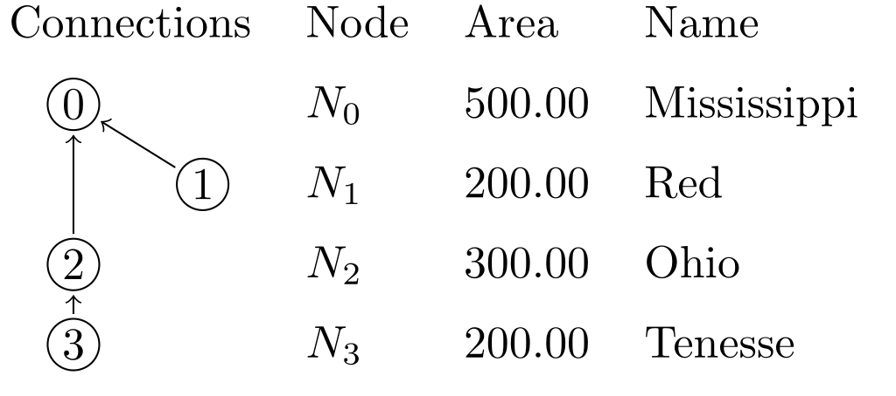
This is just an example, you can use this method to generate, markdown, latex, typst, html, and other markups as well. The syntax is a bit hard for LaTeX due to its use of \ and {, both of which are special syntax of template system and need to be escaped. but for others it should be simpler.
This should become easier after the introduction of user defined functions.
The full latex source code is shown below:
\documentclass{standalone}
\usepackage{tikz}
\usetikzlibrary{tikzmark}
\newcommand{\Node}[3][0]{%
\tikz[overlay,remember picture]{\draw (#1 + 0.5, 0.1) circle [radius=0.2] node (#2) {#3};%
}}
\begin{document}
\begin{tabular}{llll}
Connections & Node & Area & Name \\[2mm]
\Node[0]{0}{0} & $N_0$ & 500.00 & Mississippi \\[2mm]
\Node[1]{1}{1} & $N_1$ & 200.00 & Red \\[2mm]
\Node[0]{2}{2} & $N_2$ & 300.00 & Ohio \\[2mm]
\Node[0]{3}{3} & $N_3$ & 200.00 & Tenesse \\[2mm]
\end{tabular}
\tikz[overlay, remember picture]{
\path[->] (1) edge (0);
\path[->] (2) edge (0);
\path[->] (3) edge (2);
}
\end{document}
Timeseries Gap Identification
Different from other chapters, the code in this chapters are run in the order they are given, meaning each task code blocks are not independent.
Load the network
network load_file("data/scioto/scioto.network")
network cairo.table("<Name => {NAME}", "output/scioto-net.svg")
Results:
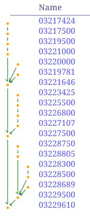
Load timeseries data from CSV, and convert any timeseries without gaps into a complete one.
We can see the number of valid data and number of total data to see that the timeseries have gaps on them.
network csv.load_timeseries("data/scioto/scioto.csv", "date", "streamflow");
# in future version csv.load_timeseries should do this while loading
nodes do ts_complete("streamflow")
nodesmap array(ts_len("streamflow", valid=true), ts_len("streamflow"))
Results:
{
"03229610" = [7032, 38078],
"03229500" = [36616, 38078],
"03228689" = [1119, 38078],
"03228500" = [31502, 38078],
"03228300" = [13237, 38078],
"03228805" = [22495, 38078],
"03228750" = [11747, 38078],
"03227500" = [38067, 38078],
"03227107" = [3639, 38078],
"03226800" = [21306, 38078],
"03225500" = [35155, 38078],
"03223425" = [10319, 38078],
"03221646" = [3744, 38078],
"03219781" = [1234, 38078],
"03220000" = [29678, 38078],
"03221000" = [37896, 38078],
"03219500" = [33695, 38078],
"03217500" = [13604, 38078],
"03217424" = [1285, 38078]
}
None of the timeseries are complete. We can visualize the gaps using the
nodes.good = (ts_len("streamflow", valid=true) / ts_len("streamflow")) > 0.75
nodes.visual = {};
nodes.visual.nodeshape = "circle";
nodes(good).visual.nodecolor = "darkgreen";
nodes(good).visual.textcolor = "darkgreen";
network svg_ts_blocks("output/scioto-ts-gap-id.svg", "{NAME}", "streamflow", 620.0, 820.0, arr_width=500.0, bgcolor="#ffffff33")
Results:
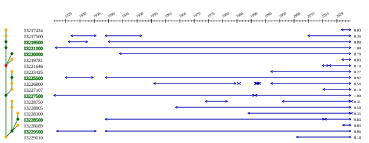
NADI Python Library
This can be installed from pypi with pip install nadi-py command.
Then you can simply import and use it:
import nadi
net = nadi.Network.from_str("a -> b")
print([n.NAME for n in net.nodes])
The functions are available inside the nadi.functions submodule.
import nadi
import nadi.functions as fn
net = nadi.Network.from_str("a -> b")
fn.network.svg_save(net, "test.svg")
Combining the power of python and Task System
You can combine the power of python with task system using the command function from NADI Task System. Basically, you write your logic that cannot be written in nadi in python, you can use nadi-py if you need to parse network files, load attributes or call any other nadi functions. And you can pass the results of the python script at the end by simply printing it to the standard output.
Future work is under consideration to have a tight couple between the python and nadi system.
Differences with Task System
The difference from Task system is that now we use python syntax and the python functions. The environment from task system is no longer available, and the node functions are not automatically run in a loop.
We lose the advantages brought by the Domain Specific Programming Language, while gaining the flexibility and the well developed libraries of the python language.
Some examples showing how you’d have to write python codes from equivalent examples in the book are shown below.
Example 1: looping through the nodes
network load_str("a -> b\nc -> b")
nodes(output._?) do echo(env.render("{i} -> {o}", i=node.INDEX, o=output.INDEX))
Results:
1 -> 0
2 -> 0
Equivalent Python:
import nadi
net = nadi.Network.from_str("a -> b\nc -> b")
for node in net.nodes:
out = node.output()
if out is None:
continue
print(f"{node.INDEX} -> {out.INDEX}")
Here the code for python is longer because it is general purpose and doesn’t have the syntax tailored for network analysis like with NADI Task System.
Example 2: Skip execution when variable is absent
If we had to check for an attribute, then it becomes even more complicated.
node(somevar?) somefunc(somevar)
import nadi
import nadi.functions as fn
net = nadi.Network.from_str("a -> b\nc -> b")
for node in net.nodes():
try:
fn.node.somefun(node, node.somevar)
except AttributeError:
continue
In case of multiple variables being used, the AttributeError might catch all of them, further fine tuning in python could make the code far longer than in nadi.
Plugins
Not only can you use nadi-py to write network based algorithms in python, you can also use it to write executable plugins that you can use to run analysis in python and feed it back to nadi system.
First thing to say about that is, you don’t need nadi-py for writing python plugins, as they are run as a normal python scripts.
Example without using nadi-py
Here is an example task that calls python using the command function:
network load_file("scioto.network")
# load average streamflow from the csv file
# containing timeseries using python
nodes do command("python area-and-streamflow.py {_NAME}")
# this just prints the attributes in csv format.
network print_attr_csv("INDEX", "area", "streamflow")
Here the command function takes a string template, renders it and runs it as a shell command for each node.
Our python script should have a way to read that node’s name that we passed to the python command.
import sys
import pandas as pd
try:
station = sys.argv[1]
except IndexError:
print("Give station")
exit(1)
df = pd.read_csv(f"data/streamflow/{station}.csv", header=None)
sf = df.iloc[:, 4]
sf.index = pd.to_datetime(df.iloc[:, 2])
daily = sf.resample('1d').mean()
counts = daily.groupby(daily.index.year).count()
counts.index.name = "datetime"
daily.index.name = "datetime"
annual = daily.groupby(daily.index.year).mean().loc[counts > 300]
print("nadi:var:sf_mean=", float(daily.mean()))
for year, flow in annual.items():
print(f"nadi:var:sf_year_{year}={flow}")
Here the line sys.argv[1] reads the argument from command line (node’s name in this case). And reads the data for that node. The ouput is printed with prefix nadi:var: which tells nadi to load as key=val pair for that node.
Example using nadi-py
The same example can be written using nadi-py so that the execution is very short (as it is being run as a network function instead of node function; command is a slow function as a new shell instance has to be created every time it is invoked).
Here we use the command network function and pass the network file as input. If your network has changed you can use save_file network function to save the network as a text file and then pass that instead.
network load_file("scioto.network")
# load average streamflow from the csv file
# containing timeseries using python
network command("python area-and-streamflow.py scioto.network")
# this just prints the attributes in csv format.
network print_attr_csv("INDEX", "area", "streamflow")
The corresponding python script now will look like this:
import sys
import pandas as pd
import nadi
try:
network = sys.argv[1]
except IndexError:
print("Give station")
exit(1)
for node in nadi.Network(network).nodes():
station = node.NAME
df = pd.read_csv(f"data/streamflow/{station}.csv", header=None)
sf = df.iloc[:, 4]
sf.index = pd.to_datetime(df.iloc[:, 2])
daily = sf.resample('1d').mean()
counts = daily.groupby(daily.index.year).count()
counts.index.name = "datetime"
daily.index.name = "datetime"
annual = daily.groupby(daily.index.year).mean().loc[counts > 300]
print(f"nadi:var:{station}:sf_mean=", float(daily.mean()))
for year, flow in annual.items():
print(f"nadi:var:{station}:sf_year_{year}={flow}")
Here we load the network using nadi-py, and then loop through the node, and pass the variables back to nadi through stdout. We have to pass the node names with the nadi:var: as this is being run for the whole network. Without the node name, it’ll take the key=val pair as network attribute.
This should allow users to have a lot of flexibility in using python to do complex analysis and get the results back into nadi directly. You can also save the results of the python script into a file, and check if the file exists before running the command from nadi to save the redundant computations.
Examples
TODO: add examples from papers’ case studies.
Executable Plugins
Executable plugins are programs that can be called from terminal. The node command function, network command function and their families in the command plugin have the capacity to run external programs through the command line.
The inputs to the program is given through the command line arguments, while the output of the programs are read through the standard output of the program. This can be used to call different/same commands for nodes with arguments dependent on their attributes.
And the output from the programs are taken by reading their stdout (standard output). Any lines starting from nadi:var: (prefix) is considered a communication attempt with NADI Task System. Currently, you can set attribute values by providing key=val pairs after the prefix. The node function will set it for current node, and network function will set it for the network. Furthermore, in network function, you can add one more section after prefix to set node attributes. For example, nadi:var:node1:value=12 will set the value attribute to 12 in the node named node1 in the current network.
The executable plugin or commands are language agnostic, as long as the command is available to run from the parent shell they will be run.
To learn how to write code in your language to parse command line arguments refer to the Wikipedia page on Command Line Arguments
The following section shows example programs written in python and R that can interact with nadi in this way.
Python
Here is an example python script that can be called from nadi for each node. This script just reads a CSV file and passes the attributes to nadi, but more complicated programs can be written by the users.
First part is importing libraries and getting the arguments from nadi. The code below reads one string as a commandline argument and saves that into station variable.
import sys
import pandas as pd
try:
station = sys.argv[1]
except IndexError:
print("Give station")
exit(1)
Then we can use any python logic with any libraries to do what we want. Here it reads the CSV and extracts values based on the station name. This is just an example, but you can load different csv files for each station and do a lot of analysis before sending those variables to nadi.
import sys
import pandas as pd
try:
station = sys.argv[1]
except IndexError:
print("Give station")
exit(1)
df = pd.read_csv(f"data/streamflow/{station}.csv", header=None)
sf = df.iloc[:, 4]
sf.index = pd.to_datetime(df.iloc[:, 2])
sf = sf.resample('1d').mean()
Once we have our variables from analysis, we can simply print them with nadi:var: prefix so that nadi knows they are the variables it should read and load into each node.
import sys
import pandas as pd
try:
station = sys.argv[1]
except IndexError:
print("Give station")
exit(1)
df = pd.read_csv(f"data/streamflow/{station}.csv", header=None)
sf = df.iloc[:, 4]
sf.index = pd.to_datetime(df.iloc[:, 2])
sf = sf.resample('1d').mean()
print("nadi:var:sf_mean=", float(sf.mean()))
for year, flow in sf.groupby(sf.index.year).mean().items():
print(f"nadi:var:sf_year_{year}={flow}")
Now we can call this script from inside the nadi tasks system like the following, assuming the python file is saved as streamflow.py.
nodes do command("python streamflow.py {_NAME}")
If you want to know what the template will be rendered as, use render function, and if you want to check whether it exists or not, you can use exists function.
RScript
Similar to most programming languages R can also read command line arguments when ran with RScript command instead of R.
For example if you run the following script in a file called test.r and ran it with command Rscript test.r some args 2, you get the output of [1] "some" "args" "2"
args <- commandArgs(trailingOnly = TRUE)
print(args)
So you can use the same method like in python to pass arguments, do analysis and pass it back using the cat function in r as shown below. cat function avoids printing the [1] type indices to the stdout.
cat(sprintf("nadi:var:this_val=%d\n", 1200))
Compiled Plugins
As it is not possible to forsee all the use cases in advance, the nadi software can be easily extended (easy being an relative term) to account for different use cases.
The program can load compiled shared libraries (.dll in windows,
.so in linux, and .dylib on mac). Since they are shared libraries
compiled into binaries, any programming languages can be used to
generate those. So far, the nadi_core library is available for
Rust only. Using that, plugins can be written and those functions
can be made available from the system.
NADI core library automatically loads:
- internal plugins if feature
functionsis used innadi_coreto compile it, - external plugins in the directories inside the
NADI_PLUGIN_DIRSenvironmental variables. The plugins must be compiled using the samenadi_coreversion and must have the same internal ABI for data types.
The syntax for functions in plugins are same for internal and external plugins. While the way to register the plugin differ slightly.
The difference between the internal and external plugins are that, internal plugins are compiled with the nadi_core and come with the program, while external plugins are separately compiled and loaded through dynamic libraries.
The methods for writing the plugins are the same, except at the top level: to export plugins, you have to use [nadi_core::nadi_plugin::nadi_plugin] macro
for external plugins while
[nadi_core::nadi_plugin::nadi_internal_plugin] for internal ones.
In the next sections we will go in detail about how to write plugins and load them in nadi.
Internal Plugins
Internal plugins come with the nadi system. They are only modified between the different versions of NADI.
The internal plugins provide core functionality of the Task system like data conversion, parsing network/attribute files, logical operations, template rendering, etc.
Future planned internal plugin functions can be found in nadi-futures repository. Which in itself is an external plugin.
External Plugins
External plugins are plugins that are their own separate programs that compile to a shared library. The shared library has information about the name of the plugin, the functions that are available, as well as the bytecode required to run the functions.
You have to use the nadi_core library and the macros available there to make the plugins. Although it might be possible to write it without the macros (an example is provided), it is strongly discouraged. The example only serves as a way to demonstrate the inner working of the external plugins.
Some examples of external plugins are given in the nadi-plugins-rust repository.
An example of a complex external plugin can be found in the gis plugin from nadi-gis repository.
Steps to create a Plugin
nadi CLI tool has a function that can generate a plugin template. Simply run the nadi command with --new-plugin flag.
nadi --new-plugin <plugin-name>
This will create a directory with plugin’s name with Cargo.toml and src/lib.rs with some sample codes for plugin functions. You can then edit them as per your need.
The generated files using nadi --new-plugin sample look something like this:
Cargo.toml:
[package]
name = "sample"
version = "0.1.0"
edition = "2021"
[lib]
crate-type = ["cdylib"]
# make sure you use the same version of nadi_core, your nadi-system is in
[dependencies]
abi_stable = "0.11.3"
nadi_core = "0.7.0"
src/lib.rs:
use nadi_core::nadi_plugin::nadi_plugin;
#[nadi_plugin]
mod sample {
use nadi_core::prelude::*;
/// The macros imported from nadi_plugin read the rust function you
/// write and use that as a base to write more core internally that
/// will be compiled into the shared libraries. This means it'll
/// automatically get the argument types, documentation, mutability,
/// etc. For more details on what they can do, refer to nadi book.
use nadi_core::nadi_plugin::{env_func, network_func, node_func};
/// Example Environment function for the plugin
///
/// You can use markdown format to write detailed documentation for the
/// function you write. This will be availble from nadi-help.
#[env_func(pre = "Message: ")]
fn echo(message: String, pre: String) -> String {
format!("{}{}", pre, message)
}
/// Example Node function for the plugin
#[node_func]
fn node_name(node: &NodeInner) -> String {
node.name().to_string()
}
/// Example Network function for the plugin
///
/// You can also write docstrings for the arguments, this syntax is not
/// a valid rust syntax, but our macro will read those docstrings, saves
/// it and then removes it so that rust does not get confused. This means
/// You do not have to write separate documentation for functions.
#[network_func]
fn node_first_with_attr(
net: &Network,
/// Name of the attribute to search
attrname: String,
) -> Option<String> {
for node in net.nodes() {
let node = node.lock();
if node.attr_dot(&attrname).is_ok() {
return Some(node.name().to_string());
}
}
None
}
}The plugin can be compiled with the cargo build or cargo build --release command, it’ll generate the shared library in the target/debug or target/release folder. You can simply copy it to directory in NADI_PLUGIN_DIRS for it to be loaded.
Functions
Plugin functions are very close to normal rust functions, with extra syntax for the function arguments, and limited function argument and return types.
Function Types
There are 3 function types:
- environment
- node
- network
the macro used for each function type are availabel from nadi_core::nadi_plugin. All the macro take optional list of key = value pairs that can act like default arguments to the functions while called from the task system.
These macro will read the rust function and generate the necessary plugin code, function signature, documentation, and will even save the original code so that users can browse it through the nadi-help.
Function Arguments
There are 5 types of function arugments, that are denoted by the following attributes
| macro attr | Type | Supported Types |
|---|---|---|
| Node/Network | &/& mut + NodeInner/Network | |
| Normal arguments | T: FromAttribute | |
| #[relaxed] | Relaxed arguments | T: FromAttributeRelaxed |
| #[args] | Positional Arguments List | &[Attribute] |
| #[kwargs] | Keyword Arguments AttrMap | &AttrMap |
Users can not provide the argument Node/Network for node/network function as it is automatically provided based on the context.
Furthermore, there are required and optional arguments. And users can optionally omit the arguments that are of type Option<T>, or have default value in the macro (e.g. safe = false in the codes below).
For now, the function arguments except the Node or Network cannot be mut. But they can be reference of T if T satisfies the trait constraints, for example, instead of Vec<String>, it can be &[String]. But because the function context is evaluated for each node/network, there is no optimization by using the references.
Return Types
Function Return can be empty, an attribute value, image, multiple images, file, or an error. When a function returns an error, the execution is halted. When it doesn’t return a value and an assignment is performed, it will error as well. Image and file return will be converted to string, if the return value is used as part of an expression, otherwise a signal is sent for the program to handle it. For example, NADI IDE will display the image in SVG Viewer.
The return type of the function should implement Into<FunctinRet>, refer to the documentation for nadi_core::functions::FunctionRet to see what types implement it. You can also implement that for your own types.
You can simply use any type that satisfy the trait requirement mentioned above as a function return and the nadi macros will convert them automatically for you.
Verbosity
In future versions the functions will also get a flag that will let them know how verbose the functions can be. This will also come with a way to pass progress and other information while the function is still running.
Examples
Refer to the nadi_core, and other plugin repositories for sample codes for plugin functions as they are always up to date with the current version.
Here is an example containing render function that is available on all function types.
/// Render the template based on the given attributes
///
/// For more details on the template system. Refer to the String
/// Template section of the NADI book.
#[env_func(safe = false)]
fn render(
/// String template to render
template: &Template,
#[kwargs] keyval: &AttrMap,
/// if render fails keep it as it is instead of exiting
safe: bool,
) -> Result<String, String> {
let text = if safe {
keyval
.render(template)
.unwrap_or_else(|_| template.original().to_string())
} else {
keyval.render(template).map_err(|e| e.to_string())?
};
Ok(text)
} /// Render the template based on the node attributes
///
/// For more details on the template system. Refer to the String
/// Template section of the NADI book.
#[node_func(safe = false)]
fn render(
node: &NodeInner,
/// String template to render
template: &Template,
/// if render fails keep it as it is instead of exiting
safe: bool,
) -> Result<String, String> {
let text = if safe {
node.render(template)
.unwrap_or_else(|_| template.original().to_string())
} else {
node.render(template).map_err(|e| e.to_string())?
};
Ok(text)
} /// Render from network attributes
#[network_func(safe = false)]
fn render(
network: &Network,
/// Path to the template file
template: &Template,
/// if render fails keep it as it is instead of exiting
safe: bool,
) -> Result<String, String> {
let text = if safe {
network
.render(template)
.unwrap_or_else(|_| template.original().to_string())
} else {
network.render(template).map_err(|e| e.to_string())?
};
Ok(text)
}Environment Functions
Environment functions are like any normal function on programming languages that take arguments and run code. In NADI environment functions can be called from any scope. For example, if a node function and environement function share the same name, then in a node task node function is called, but in network task env function is called.
Environment functions are denoted in the plugins with #[env_func] macro. All the arguments this function takes need to be provided by user or through default values.
Here is an example of a environment function and in plugin logic.
/// Boolean and
#[env_func]
fn and(
/// List of attributes that can be cast to bool
#[args]
conds: &[Attribute],
) -> bool {
let mut ans = true;
for c in conds {
ans = ans && bool::from_attr_relaxed(c).unwrap();
}
ans
}This function can be called inside the task system in different context like follows:
env and(true, 12)
env.something = false
env and(something, true) == (something & true)
network and(what?, and(true, true))
Results:
true
true
false
Node Functions
Node functions are run for each node in the network (or a selected group of nodes). Hence, it takes the first argument as & NodeInner or & mut NodeInner depending on the purpose of the function. Immutable functions can be called from any place, while mutable functions can only be called once on the outermost layer on the task.
Other arguments and the return types for node functions are the same as the environement functions.
Network Functions
Network functions, like node functions take &Network or & mut Network as the first argument. It has the same restrictions as the env/node functions for the arguments and the return types.
All Plugin Functions
All the functions available on this instance of nadi, are listed here.
Env Functions
| Plugin | Function | Help |
|---|---|---|
ATTRS | float_div | Float Division (same as / operator) |
ATTRS | float_mult | Float Multiplication (same as * operator) |
ATTRS | get | get the choosen attribute from Array or AttrMap |
ATTRS | keys | keys of the attribute map |
ATTRS | parse_attr | Parse attribute from string |
ATTRS | parse_attrmap | Parse attribute map from string |
ATTRS | strmap | map values from the attribute based on the given table |
ATTRS | values | values of the attribute map |
COMMAND | command | Runs a command in terminal and returns attribute map |
COMMAND | set_shell_env | Set environment variable in the shell |
COMMAND | shell_env | Get environment variable from the shell |
CORE | append | append a value to an array |
CORE | array | make an array from the arguments |
CORE | assert_eq | Assert the two values are equal |
CORE | assert_neq | Assert the two values are not equal |
CORE | assert | Assert the condition is true |
CORE | attrmap | make an attrmap from the arguments |
CORE | concat | Concat the strings |
CORE | count_str | Get a count of unique string values |
CORE | count | Count the number of true values in the array |
CORE | day | day from date/datetime |
CORE | drop_nan | append a value to an array |
CORE | flatten | flatten the given list of arrays into a single one |
CORE | float | make a float from value |
CORE | hour | hour from time/datetime |
CORE | insert | Insert a key and value to a attrmap |
CORE | int | make an int from the value |
CORE | isinf | check if a float is +/- infinity |
CORE | isna | check if a float is nan |
CORE | json | format the attribute as a json string |
CORE | length | length of an array or hashmap |
CORE | max_num | Minimum of the variables |
CORE | max | Maximum of the variables |
CORE | min_num | Minimum of the variables |
CORE | min | Minimum of the variables |
CORE | minute | minute from time/datetime |
CORE | month | month from date/datetime |
CORE | nanosecond | nanosecond from time/datetime |
CORE | now | get the current date time |
CORE | prod | Product of the variables |
CORE | range | Generate integer array, end is not included |
CORE | second | second from time/datetime |
CORE | str_quote | Convert string to double quoted form |
CORE | str | make a string from value |
CORE | sum | Sum of the variables |
CORE | timediff | get the current date time |
CORE | to_attrmap | make an attrmap from a list of (k, v) |
CORE | today | get the current date |
CORE | type_name | Type name of the arguments |
CORE | unique_str | Get a list of unique string values |
CORE | year | year from date/datetime |
CORE | zip | make an array combining the arrays from arguments |
DEBUG | clip | Echo the ----8<---- line for clipping syntax |
DEBUG | debug | Print the args and kwargs on this function |
DEBUG | echo | Echo the string to stdout or stderr |
DEBUG | sleep | sleep for given number of milliseconds |
FILES | exists | Checks if the given path exists |
FILES | from_file | Reads the file contents as string |
FILES | line | Checks if the given path exists |
FILES | to_file | Writes the string to the file |
LOGIC | all | check if all of the bool are true |
LOGIC | and | Boolean and |
LOGIC | any | check if any of the bool are true |
LOGIC | eq | Equality than check |
LOGIC | gt | Greater than check |
LOGIC | ifelse | Simple if else condition |
LOGIC | lt | Less than check |
LOGIC | not | boolean not |
LOGIC | or | boolean or |
MATH | exp | Exponential |
MATH | log | Logarithm of a value, natural if base not given |
MATH | powf | Float power |
MATH | powi | Integer power |
MATH | sqrt | Square Root |
OPTIMUM | uniform_crossing_over | Crossing over of linear genes from two parent given uniform probability |
RANDOM | random_bool | Random bool given uniform probability |
REGEX | str_count | Count the number of matches of given pattern in the string |
REGEX | str_filter | Filter from the string list with only the values matching pattern |
REGEX | str_find_all | Find all the matches of the given pattern in the value |
REGEX | str_find | Find the given pattern in the value |
REGEX | str_join | Join the list of strings with the given string |
REGEX | str_match | Check if the given pattern matches the value or not |
REGEX | str_replace | Replace the occurances of the given match |
REGEX | str_split | Split the string with the given pattern |
RENDER | render | Render the template based on the node attributes |
VISUALS | image | |
VISUALS | svg_open_multi | |
VISUALS | svg_open | |
VISUALS | svg_settings | Generate the margins for the SVGs |
csv | count_data | Count the number of data in a column from a CSV file |
csv | count_usgs_years | Count the number of data in a column from a CSV file |
csv | schema | List the columns in a CSV file |
gis | features_count | Show the fields in the GIS file layer as a list |
gis | fields | Show the fields in the GIS file layer as a list |
gis | layers | Show the layers of the GIS file as a list |
gis | line | Show the layers of the GIS file as a list |
gis | values | Returns the values from a feature in a GIS file from its index |
typst | compile | convert the typst content into pdf/svg/png |
typst | svg2pdf | convert the svg content into pdf or png (or svg) |
Node Functions
| Plugin | Function | Help |
|---|---|---|
ATTRS | del_attrs | Delete attributes from the given node |
ATTRS | first_attr | Return the first Attribute that exists |
ATTRS | get_attr | Retrive attribute |
ATTRS | get_attrs | Retrive multiple attributes |
ATTRS | has_attr | Check if the attribute is present |
ATTRS | load_attrs | Loads attrs from file for all nodes based on the given template |
ATTRS | load_toml_render | Set node attributes by loading a toml from rendered template |
ATTRS | print_all_attrs | Print all attrs in a node |
ATTRS | print_attrs | Print the given node attributes if present |
ATTRS | set_attrs_ifelse | if else condition with multiple attributes |
ATTRS | set_attrs_render | Set node attributes based on string templates |
ATTRS | set_attrs | Set node attributes |
COMMAND | command | Run the given template as a shell command. |
COMMAND | run | Run the node as if it’s a command if inputs are changed |
CONN | move_aside | Move the node to the side so that its inputs go to the output |
CORE | has_output | Node has an output or not |
CORE | inputs_attr | Get attributes of the input nodes |
CORE | inputs_count | Count the number of input nodes in the node |
CORE | inputs_map | Get attributes of the input nodes in map format |
CORE | output_attr | Get attributes of the output node |
FILES | exists | Checks if the given path exists when rendering the template |
RENDER | render | Render the template based on the node attributes |
SERIES | set_series | set the following series to the node |
SERIES | sr_count | Number of series in the node |
SERIES | sr_delete | Delete the series with the given name |
SERIES | sr_dtype | Type name of the series |
SERIES | sr_fill | Fill the series with a value |
SERIES | sr_get | get nth member of a series |
SERIES | sr_len | Length of the series |
SERIES | sr_list | List all series in the node |
SERIES | sr_max | Get maximum value of the series |
SERIES | sr_mean | Mean of a series values |
SERIES | sr_min | Get minimum value of the series |
SERIES | sr_sort | Sort an series |
SERIES | sr_sum | Sum of the series values |
SERIES | sr_to_array | Make an array from the series if it’s complete |
TS | ts_complete | Convert the timeseries to complete if it doesn’t have gaps |
TS | ts_count | Number of timeseries in the node |
TS | ts_delete | Delete the timeseries with the given name |
TS | ts_dtype | Type name of the timeseries |
TS | ts_len | Length of the timeseries |
TS | ts_list | List all timeseries in the node |
TS | ts_print | Print the given timeseries values in csv format |
VISUALS | get_xy | |
VISUALS | set_xy | |
csv | column | read a single column from a CSV file |
csv | node_name | Example Node function for the plugin |
Network Functions
| Plugin | Function | Help |
|---|
| ATTRS | nodemap | Generate attribute map for the given attribute for the nodes |
| ATTRS | set_attrs_render | Set network attributes based on string templates |
| ATTRS | set_attrs | Set network attributes |
| ATTRS | set_node_attrs | Set node attributes in a network using a attrmap or array |
| COMMAND | command | Run the given template as a shell command. |
| COMMAND | parallel | Run the given template as a shell command for each nodes in the network in parallel. |
| CONN | load_edges | Load the given edges as a network |
| CONN | load_file | Load the given file into the network |
| CONN | load_str | Load network from the given string |
| CONN | save_file | Save the network into the given file |
| CONN | subset_from | Take a subset of network by taking the given node as a new outlet |
| CONN | subset_largest | Take a subset of network by only including the largest blob of connected nodes |
| CONN | subset | Take a subset of network by only including the selected nodes |
| CORE | count | Count the number of nodes in the network |
| CORE | net_leaves | Get the name of the leaf nodes |
| CORE | net_roots | Get the name of the outlet nodes |
| CORE | node_attr | Get the attr of the provided node |
| CORE | node_map | Get a attrmap with node name and attributes |
| GVIZ | load_positions | Load Node positions from the graphviz file |
| GVIZ | save_gv | Save the network as a graphviz file |
| RENDER | render_nodes | Render each node of the network and combine to same variable |
| RENDER | render_template | Render a File template for the nodes in the whole network |
| RENDER | render | Render from network attributes |
| TABLE | save_csv | Save CSV |
| TABLE | table_to_markdown | Render the Table as a rendered markdown |
| TS | series_csv | Write the given nodes to csv with given attributes and series |
| TS | ts_print_csv | Save timeseries from all nodes into a single csv file |
| VISUALS | flatten | |
| VISUALS | set_nodesize_attrs | Set the node size of the nodes based on the attribute value |
| VISUALS | svg_save | Exports the network as a svg |
| VISUALS | svg_ts_blocks | |
| cairo | network | Create a SVG file with the given network structure |
| cairo | table | Create a SVG file with the given network structure |
| csv | load_series | Load series values to nodes |
| csv | load_timeseries | Load timeseries values to nodes |
| gis | load_attrs | Load node attributes from a GIS file |
| gis | load_network | Load network from a GIS file |
| gis | save_connections | Save GIS file of the connections |
| gis | save_nodes | Save GIS file of the nodes |
| typst | table | Generate Typst code for given Table |
Internal Plugins
There are some plugins that are provided with the nadi_core
library. They are part of the library, so users can directly use them.
For example in the following tasks file, the functions that are highlighted are functions available from the core plugins. Other functions need to be loaded from plugins.
# sample .tasks file which is like a script with functions
nodes<inputsfirst> print_attrs("uniqueID")
nodes show_node()
network save_graphviz("/tmp/test.gv")
nodes<inputsfirst>.cum_val = node.val + sum(inputs.cum_val);
nodes[WV04113,WV04112,WV04112] print_attr_toml("testattr2")
nodesmap render("{NAME} {uniqueID} {Dam_Height_(Ft)}")
nodes list_attr("; ")
# some functions can take variable number of inputs
network calc_attr_errors(
"Dam_Height_(Ft)",
"Hydraulic_Height_(Ft)",
"rmse", "nse", "abserr"
)
nodes sum_safe("Latitude")
nodesmap<inputsfirst> render("Hi {SUM_ATTR}")
# multiple line for function arguments
network save_table(
"test.table",
"/tmp/test.tex",
true,
radius=0.2,
start = "2012-19-20",
end = 2012-19-23 12:04:00
)
nodes.testattr = 2
nodes set_attrs_render(testattr2 = "{testattr:2.2}")
nodesmap[WV04112] render("{testattr} {testattr2}")
# selecting a list of nodes to run a function
nodes[
# comment here?
WV04113,
WV04112
] print_attr_toml("testattr2")
# selecting a path
nodesmap[WV04112 -> WV04113] render("{NAME}")
Env Functions
strmap
env ATTRS.strmap(
attr: '& str',
attrmap: '& AttrMap',
default: 'Option < Attribute >'
)
Arguments:
attr: '& str'=> Value to transform the attributeattrmap: '& AttrMap'=> Dictionary of key=value to map the data todefault: 'Option < Attribute >'=> Default value if key not found inattrmap
map values from the attribute based on the given table
env.val = strmap("Joe", {Dave = 2, Joe = 20});
env assert_eq(val, 20)
env.val2 = strmap("Joe", {Dave=2}, default = 12);
env assert_eq(val2, 12)
parse_attr
env ATTRS.parse_attr(toml: '& str')
Arguments:
toml: '& str'=> String to parse into attribute
Parse attribute from string
env assert_eq(parse_attr("true"), true)
env assert_eq(parse_attr("123"), 123)
env assert_eq(parse_attr("12.34"), 12.34)
env assert_eq(parse_attr("\"my value\""), "my value")
env assert_eq(parse_attr("1234-12-12 00:00"), 1234-12-12T00:00)
parse_attrmap
env ATTRS.parse_attrmap(toml: 'String')
Arguments:
toml: 'String'=> String to parse into attribute
Parse attribute map from string
env assert_eq(parse_attrmap("y = true"), {y = true})
env assert_eq(parse_attrmap(
"x = [1234, true]"),
{x = [1234, true]}
)
keys
env ATTRS.keys(attrmap: 'AttrMap')
Arguments:
attrmap: 'AttrMap'=>
keys of the attribute map
values
env ATTRS.values(attrmap: 'AttrMap')
Arguments:
attrmap: 'AttrMap'=>
values of the attribute map
get
env ATTRS.get(
parent: 'Attribute',
index: 'Attribute',
default: 'Option < Attribute >'
)
Arguments:
parent: 'Attribute'=> Array or AttrMap Attribute to indexindex: 'Attribute'=> Index value (Integer for Array, String for AttrMap)default: 'Option < Attribute >'=> Default value if the index is not present
get the choosen attribute from Array or AttrMap
env.some_ar = ["this", 12, true];
env.some_am = {x = "this", y = [12, true]};
env assert_eq(get(some_ar, 0), "this")
env assert_eq(get(some_ar, 2), true)
env assert_eq(get(some_am, "x"), "this")
env assert_eq(get(some_am, "y"), [12, true])
float_div
env ATTRS.float_div(value1: 'f64', value2: 'f64')
Arguments:
value1: 'f64'=> numeratorvalue2: 'f64'=> denominator
Float Division (same as / operator)
env assert_eq(float_div(10.0, 2), 10.0 / 2)
float_mult
env ATTRS.float_mult(value1: 'f64', value2: 'f64')
Arguments:
value1: 'f64'=> numeratorvalue2: 'f64'=> denominator
Float Multiplication (same as * operator)
env assert_eq(float_mult(5.0, 2), 5.0 * 2)
Node Functions
load_attrs
node ATTRS.load_attrs(filename: 'PathBuf')
Arguments:
filename: 'PathBuf'=> Template for the filename to load node attributes from
Loads attrs from file for all nodes based on the given template
Arguments
filename: Template for the filename to load node attributes fromverbose: print verbose message
The template will be rendered for each node, and that filename from the rendered template will be used to load the attributes.
Errors
The function will error out in following conditions:
- Template for filename is not given,
- The template couldn’t be rendered,
- There was error loading attributes from the file.
print_all_attrs
node ATTRS.print_all_attrs()
Arguments:
Print all attrs in a node
No arguments and no errors, it’ll just print all the attributes in a node with
node::attr=val format, where,
- node is node name
- attr is attribute name
- val is attribute value (string representation)
print_attrs
node ATTRS.print_attrs(*attrs, name: 'bool' = false)
Arguments:
*attrs=>name: 'bool' = false=>
Print the given node attributes if present
Arguments
- attrs,… : list of attributes to print
- name: Bool for whether to show the node name or not
Error
The function will error if
- list of arguments are not
String - the
nameargument is not Boolean
The attributes will be printed in key=val format.
set_attrs
node ATTRS.set_attrs(**attrs)
Arguments:
**attrs=> Key value pairs of the attributes to set
Set node attributes
Use this function to set the node attributes of all nodes, or a select few nodes using the node selection methods (path or list of nodes)
Error
The function should not error.
Example
Following will set the attribute a2d to true for all nodes
from A to D
network load_str("A -> B\n B -> D");
nodes[A -> D] set_attrs(a2d = true)
This is equivalent to the following:
nodes[A->D].a2d = true;
del_attrs
node ATTRS.del_attrs(delete: 'Vec < String >')
Arguments:
delete: 'Vec < String >'=> the attributes to delete
Delete attributes from the given node
network load_str("a -> b");
nodes set_attrs(val = true);
node[a] del_attrs(["val"]);
node[a] assert_eq(val?, false)
node[b] assert_eq(val?, true)
get_attr
node ATTRS.get_attr(attr: '& str', default: 'Option < Attribute >')
Arguments:
attr: '& str'=> Name of the attribute to getdefault: 'Option < Attribute >'=> Default value if the attribute is not found
Retrive attribute
network load_str("A -> B\n B -> D");
nodes assert_eq(get_attr("NAME"), NAME);
get_attrs
node ATTRS.get_attrs(*attr_names)
Arguments:
*attr_names=> Name of the attribute to get
Retrive multiple attributes
network load_str("A -> B\n B -> D");
nodes assert_eq(get_attrs("NAME"), array(NAME));
nodes assert_eq(get_attrs("NAME", "ORDER"), array(NAME, ORDER));
has_attr
node ATTRS.has_attr(attr: '& str')
Arguments:
attr: '& str'=> Name of the attribute to check
Check if the attribute is present
network load_str("A -> B\n B -> D");
nodes.x = 90;
nodes assert(has_attr("x"))
nodes assert(!has_attr("y"))
first_attr
node ATTRS.first_attr(attrs: '& [String]', default: 'Option < Attribute >')
Arguments:
attrs: '& [String]'=> attribute namesdefault: 'Option < Attribute >'=> Default value if not found
Return the first Attribute that exists
This is useful when you have a bunch of attributes that might be equivalent but are using different names. Normally due to them being combined from different datasets.
network load_str("A -> B\n B -> D");
nodes.x = 90;
nodes assert_eq(first_attr(["y", "x"]), 90)
nodes assert_eq(first_attr(["x", "NAME"]), 90)
set_attrs_ifelse
node ATTRS.set_attrs_ifelse(cond: 'bool', **values)
Arguments:
cond: 'bool'=> Condition to check**values=> key = [val1, val2] where key is set as first ifcondis true else second
if else condition with multiple attributes
network load_str("a -> b");
env.some_condition = true;
nodes set_attrs_ifelse(
env.some_condition,
val1 = [1, 2],
val2 = ["a", "b"]
);
env assert_eq(nodes.val1, [1, 1])
env assert_eq(nodes.val2, ["a", "a"])
This is equivalent to using the if-else expression directly,
nodes.val1 = if (env.some_condition) {1} else {2};
env assert_eq(nodes.val1, [1, 1])
Furthermore if-else expression will give a lot more flexibility than this function in normal use cases. But this function is useful when you have to do something in a batch.
set_attrs_render
node ATTRS.set_attrs_render(**kwargs)
Arguments:
**kwargs=> key value pair of attribute to set and the Template to render
Set node attributes based on string templates
This renders the template for each node, then it sets the values from the rendered results.
network load_str("a -> b");
nodes set_attrs_render(val1 = "Node: {NAME}");
node[a] assert_eq(val1, "Node: a")
load_toml_render
node ATTRS.load_toml_render(toml: '& Template', echo: 'bool' = false)
Arguments:
toml: '& Template'=> String template to render and load as toml stringecho: 'bool' = false=> Print the rendered toml or not
Set node attributes by loading a toml from rendered template
This function will render a string, and loads it as a toml string. This is useful when you need to make attributes based on some other variables that you can combine using the string template system.
In most cases it is better to use the string manipulation functions and other environmental functions to get new attribute values to set.
network load_str("a -> b");
nodes load_toml_render("label = \"Node: {NAME}\"")
nodes assert_eq(label, render("Node: {NAME}"))
Network Functions
set_attrs
network ATTRS.set_attrs(**attrs)
Arguments:
**attrs=> key value pair of attributes to set
Set network attributes
Arguments
key=value- Kwargs of attr = value
network set_attrs(val = 23.4)
network assert_eq(val, 23.4)
set_node_attrs
network ATTRS.set_node_attrs(attr_name: '& str', node_values: 'TableOrArray')
Arguments:
attr_name: '& str'=> Name of the attribute to set,node_values: 'TableOrArray'=> array or a key value pair of attributes to set (key = node name)
Set node attributes in a network using a attrmap or array
Currenly you can only set all nodes using array, if you want to set a subset of the nodes, use the attrmap option.
network load_str("a -> b")
network set_node_attrs("val", {a = 23.4})
network assert_eq(node[a].val, 23.4)
network set_node_attrs("val", [2, 4])
network assert_eq(nodes.val, [2, 4])
set_attrs_render
network ATTRS.set_attrs_render(**kwargs)
Arguments:
**kwargs=> Kwargs of attr = String template to render
Set network attributes based on string templates
It will set the attribute as a String
network.val = 23.4
network set_attrs_render(val2 = "{val}05")
network assert_eq(val2, "23.405")
nodemap
network ATTRS.nodemap(
attr: 'String',
filter: 'Option < Vec < bool > >',
safe: 'bool' = false
)
Arguments:
attr: 'String'=> attribute to be the value of the attrmapfilter: 'Option < Vec < bool > >'=> Only include these nodessafe: 'bool' = false=> Exclude nodes if they do not have the attribute
Generate attribute map for the given attribute for the nodes
Env Functions
shell_env
env COMMAND.shell_env(var: 'String')
Arguments:
var: 'String'=>
Get environment variable from the shell
### will error if "HOME" is empty, as it can't assign None
env.home = shell_env("HOME")
set_shell_env
env COMMAND.set_shell_env(var: 'String', val: 'String')
Arguments:
var: 'String'=>val: 'String'=>
Set environment variable in the shell
env set_shell_env("testing", "true");
env assert_eq(shell_env("testing"), "true")
command
env COMMAND.command(
cmd: '& str',
verbose: 'bool' = true,
echo: 'bool' = false
)
Arguments:
cmd: '& str'=> String Command to runverbose: 'bool' = true=> Show the rendered version of command, and other messagesecho: 'bool' = false=> Echo the stdout from the command
Runs a command in terminal and returns attribute map
The returned AttrMap contains any key=value pair that were
output from the command if they are prefixed with nadi:var:
env.outputs2 = command("echo nadi:var:test=12");
env assert_eq(outputs2.test, 12)
Node Functions
command
node COMMAND.command(
cmd: '& Template',
verbose: 'bool' = true,
echo: 'bool' = false
)
Arguments:
cmd: '& Template'=> String Command template to runverbose: 'bool' = true=> Show the rendered version of command, and other messagesecho: 'bool' = false=> Echo the stdout from the command
Run the given template as a shell command.
Run any command in the shell. The standard output of the command
will be consumed and if there are lines starting with nadi:var:
and followed by key=val pairs, it’ll be read as new attributes
to that node.
For example if a command writes nadi:var:name="Joe" to stdout,
then the for the current node the command is being run for, name
attribute will be set to Joe. This way, you can write your
scripts in any language and pass the values back to the NADI
system.
It will also print out the new values or changes from old values,
if verbose is true.
Errors
The function will error if,
- The command template cannot be rendered,
- The command cannot be executed,
- The attributes from command’s stdout cannot be parsed properly
network load_str("a -> b");
nodes command("echo 'nadi:var:sth=\"{NAME}\"'");
nodes assert_eq(sth, NAME)
run
node COMMAND.run(
command: '& str',
inputs: '& str',
outputs: '& str',
verbose: 'bool' = true,
echo: 'bool' = false
)
Arguments:
command: '& str'=> Node Attribute with the command to runinputs: '& str'=> Node attribute with list of input filesoutputs: '& str'=> Node attribute with list of output filesverbose: 'bool' = true=> Print the command being runecho: 'bool' = false=> Show the output of the command
Run the node as if it’s a command if inputs are changed
This function will not run a command node if all outputs are older than all inputs. This is useful to networks where each nodes are tasks with input files and output files.
Network Functions
parallel
network COMMAND.parallel(
cmd: '& Template',
workers: 'i64' = 16,
verbose: 'bool' = true,
echo: 'bool' = false
)
Arguments:
cmd: '& Template'=> String Command template to runworkers: 'i64' = 16=> Number of workers to run in parallelverbose: 'bool' = true=> Print the command being runecho: 'bool' = false=> Show the output of the command
Run the given template as a shell command for each nodes in the network in parallel.
Other than parallel execution this is same as the node function command
network load_str("a -> b");
network parallel("echo 'nadi:var:sth=\"{NAME}\"'");
nodes assert_eq(sth, NAME)
command
network COMMAND.command(
cmd: 'Template',
verbose: 'bool' = true,
echo: 'bool' = false
)
Arguments:
cmd: 'Template'=> String Command template to runverbose: 'bool' = true=> Print the command being runecho: 'bool' = false=> Show the output of the command
Run the given template as a shell command.
Run any command in the shell. The standard output of the command
will be consumed and if there are lines starting with nadi:var:
and followed by key=val pairs, it’ll be read as new attributes
to the network. If you want to pass node attributes add node name
with nadi:var:name: as the prefix for key=val.
See node command.command for more details as they have
the same implementation
The examples below run echo command to set the variables, you
can use any command that are scripting languages (python, R,
Julia, etc) or individual programs.
network load_str("a -> b");
network command("echo 'nadi:var:sth=123'");
network assert_eq(sth, 123)
network command("echo 'nadi:var:a:sth=123'");
node[a] assert_eq(sth, 123)
Node Functions
move_aside
node CONN.move_aside()
Arguments:
Move the node to the side so that its inputs go to the output
Network Functions
load_file
network CONN.load_file(
file: 'PathBuf',
append: 'bool' = false,
force: 'bool' = false
)
Arguments:
file: 'PathBuf'=> File to load the network connections fromappend: 'bool' = false=> Append the connections in the current networkforce: 'bool' = false=> Force overriding outputs if previous one is present, only valid for override
Load the given file into the network
This replaces the current network with the one loaded from the file.
load_str
network CONN.load_str(
contents: '& str',
append: 'bool' = false,
force: 'bool' = false
)
Arguments:
contents: '& str'=> String containing Network connectionsappend: 'bool' = false=> Append the connections in the current networkforce: 'bool' = false=> Force overriding outputs if previous one is present, only valid for override
Load network from the given string
This replaces the current network with the one loaded from the string.
network load_str("a -> b");
env assert_eq(nodes.NAME, ["b", "a"])
load_edges
network CONN.load_edges(
edges: '& [(String, String)]',
append: 'bool' = false,
force: 'bool' = false
)
Arguments:
edges: '& [(String, String)]'=> String containing Network connectionsappend: 'bool' = false=> Append the connections in the current networkforce: 'bool' = false=> Force overriding outputs if previous one is present
Load the given edges as a network
This replaces the current network with the one loaded from the file.
network load_edges([["a", "b"], ["b", "c"]]);
env assert_eq(nodes.NAME, ["c", "b", "a"])
subset
network CONN.subset(filter: '& [bool]', keep: 'bool' = true)
Arguments:
filter: '& [bool]'=>keep: 'bool' = true=> Keep the selected nodes (false = removes the selected)
Take a subset of network by only including the selected nodes
network load_str("a -> b\n b->c");
nodes[a->b].sth = true;
node[c].sth = false;
network subset(nodes.sth);
env assert_eq(nodes.NAME, ["b", "a"])
save_file
network CONN.save_file(
file: 'PathBuf',
quote_all: 'bool' = true,
graphviz: 'bool' = false
)
Arguments:
file: 'PathBuf'=> Path to the output filequote_all: 'bool' = true=> quote all node names; if false, doesn’t quote valid identifier namesgraphviz: 'bool' = false=> wrap the network into a valid graphviz file
Save the network into the given file
For more control on graphviz file writing, use
save_graphviz from graphviz plugin instead.
subset_from
network CONN.subset_from(new_root: '& str')
Arguments:
new_root: '& str'=>
Take a subset of network by taking the given node as a new outlet
network load_str("a -> b\n b->c\n x -> y");
network subset_from("b")
env assert_eq(nodes.NAME, ["b", "a"])
subset_largest
network CONN.subset_largest(parent: 'Option < String >')
Arguments:
parent: 'Option < String >'=>
Take a subset of network by only including the largest blob of connected nodes
When you load a network that have disconnected nodes, this function allows you to filter out all the nodes except the one belonging to the largest connected network (number of nodes). Alternatively, you can also use ORDER and other logic in the task system to do that.
If your network has a root node, and no parent node is given, then it’ll just keep the network as it is.
network load_str("a -> b\n b->c\n x -> y");
network subset_largest()
env assert_eq(nodes.NAME, ["c", "b", "a"])
Env Functions
str_quote
env CORE.str_quote(vars: 'String', quote_char: '& str' = "\"")
Arguments:
vars: 'String'=>quote_char: '& str' = "\""=>
Convert string to double quoted form
env assert_eq(str_quote("value"), "\"value\"")
env assert_eq(str_quote(true), "\"true\"")
env assert_eq(str_quote(12), "\"12\"")
count
env CORE.count(vars: '& [bool]')
Arguments:
vars: '& [bool]'=>
Count the number of true values in the array
env assert_eq(count([true, false, true, false]), 2)
insert
env CORE.insert(
map: 'AttrMap',
key: 'RString',
value: 'Attribute'
)
Arguments:
map: 'AttrMap'=>key: 'RString'=>value: 'Attribute'=>
Insert a key and value to a attrmap
env.x = attrmap(a=1, b=2)
nodes assert_eq(insert(x, c, 3), attrmap(a=1, b=2, c=3))
type_name
env CORE.type_name(value: 'Attribute', recursive: 'bool' = false)
Arguments:
value: 'Attribute'=> Argument to get typerecursive: 'bool' = false=> Recursively check types for array and table
Type name of the arguments
env assert_eq(type_name(true), "Bool")
env assert_eq(type_name([true, 12]), "Array")
env assert_eq(type_name([true, 12], recursive=true), ["Bool", "Integer"])
env assert_eq(type_name("true"), "String")
isna
env CORE.isna(val: 'f64')
Arguments:
val: 'f64'=>
check if a float is nan
env assert(isna(nan + 5))
isinf
env CORE.isinf(val: 'f64')
Arguments:
val: 'f64'=>
check if a float is +/- infinity
env assert(isinf(12.0 / 0))
float
env CORE.float(value: 'Attribute', parse: 'bool' = true)
Arguments:
value: 'Attribute'=> Argument to convert to floatparse: 'bool' = true=> parse string to float
make a float from value
env assert_eq(float(5), 5.0)
env assert_eq(float("5.0"), 5.0)
str
env CORE.str(value: 'Attribute', quote: 'bool' = false)
Arguments:
value: 'Attribute'=> Argument to convert to floatquote: 'bool' = false=> quote it if it’s literal string
make a string from value
env assert_eq(str(nan + 5), "nan")
env assert_eq(str(2 + 5), "7")
env assert_eq(str(12.34), "12.34")
env assert_eq(str("nan + 5"), "nan + 5")
env assert_eq(str("true", quote=true), "\"true\"")
int
env CORE.int(
value: 'Attribute',
parse: 'bool' = true,
round: 'bool' = true,
strfloat: 'bool' = false
)
Arguments:
value: 'Attribute'=> Argument to convert to intparse: 'bool' = true=> parse string to intround: 'bool' = true=> round float into integerstrfloat: 'bool' = false=> parse string first as float before converting to int
make an int from the value
env assert_eq(int(5.0), 5)
env assert_eq(int(5.1), 5)
env assert_eq(int("45"), 45)
env assert_eq(int("5.0", strfloat=true), 5)
array
env CORE.array(*attributes)
Arguments:
*attributes=> List of attributes
make an array from the arguments
env assert_eq(array(5, true), [5, true])
zip
env CORE.zip(*attributes, err_diff_len: 'bool' = true)
Arguments:
*attributes=> List of attributeserr_diff_len: 'bool' = true=> error if different lengths
make an array combining the arrays from arguments
env assert_eq(array(5, true), [5, true])
attrmap
env CORE.attrmap(**attributes)
Arguments:
**attributes=> name and values of attributes
make an attrmap from the arguments
env assert_eq(attrmap(val=5), {val=5})
to_attrmap
env CORE.to_attrmap(key_val: 'Vec < (RString, Attribute) >')
Arguments:
key_val: 'Vec < (RString, Attribute) >'=> name and values of attributes
make an attrmap from a list of (k, v)
env assert_eq(to_attrmap([["val", 5]]), {val=5})
json
env CORE.json(value: 'Attribute')
Arguments:
value: 'Attribute'=> attribute to format
format the attribute as a json string
env assert_eq(json(5), "5")
env assert_eq(json([5, true]), "[5, true]")
env assert_eq(json({a=5}), "{\"a\": 5}")
append
env CORE.append(array: 'Vec < Attribute >', value: 'Attribute')
Arguments:
array: 'Vec < Attribute >'=> List of attributesvalue: 'Attribute'=>
append a value to an array
env assert_eq(append([4], 5), [4, 5])
flatten
env CORE.flatten(array: 'Vec < Attribute >')
Arguments:
array: 'Vec < Attribute >'=> List of attributes
flatten the given list of arrays into a single one
If any argument is not an array, then it will treat them as single element array
env assert_eq(flatten([[4], [5, 6]]), [4, 5, 6])
drop_nan
env CORE.drop_nan(array: 'Vec < Attribute >')
Arguments:
array: 'Vec < Attribute >'=> List of attributes
append a value to an array
env assert_eq(append([4], 5), [4, 5])
length
env CORE.length(value: '& Attribute')
Arguments:
value: '& Attribute'=> Array or a HashMap
length of an array or hashmap
env assert_eq(length([4, 5]), 2)
env assert_eq(length({x=4, y=5}), 2)
timediff
env CORE.timediff(start: 'DateTime', end: 'DateTime')
Arguments:
start: 'DateTime'=>end: 'DateTime'=>
get the current date time
now
env CORE.now()
Arguments:
get the current date time
today
env CORE.today()
Arguments:
get the current date
hour
env CORE.hour(value: 'Attribute')
Arguments:
value: 'Attribute'=> Time or DateTime
hour from time/datetime
env assert_eq(hour(parse_attr("12:14")), 12)
env assert_eq(hour(parse_attr("1223-12-14T15:19")), 15)
minute
env CORE.minute(value: 'Attribute')
Arguments:
value: 'Attribute'=> Time or DateTime
minute from time/datetime
env assert_eq(minute(parse_attr("12:14")), 14)
env assert_eq(minute(parse_attr("1223-12-14T15:19")), 19)
second
env CORE.second(value: 'Attribute')
Arguments:
value: 'Attribute'=> Time or DateTime
second from time/datetime
env assert_eq(second(parse_attr("12:14")), 0)
env assert_eq(second(parse_attr("1223-12-14T15:19:12")), 12)
nanosecond
env CORE.nanosecond(value: 'Attribute')
Arguments:
value: 'Attribute'=> Time or DateTime
nanosecond from time/datetime
env assert_eq(nanosecond(parse_attr("12:14")), 0)
env assert_eq(nanosecond(parse_attr("1223-12-14T15:19")), 0)
year
env CORE.year(value: 'Attribute')
Arguments:
value: 'Attribute'=> Date or DateTime
year from date/datetime
env assert_eq(year(parse_attr("1223-12-12")), 1223)
env assert_eq(year(parse_attr("1223-12-12T12:12")), 1223)
env assert_eq(year(parse_attr("1223-12-12 12:12:08")), 1223)
month
env CORE.month(value: 'Attribute')
Arguments:
value: 'Attribute'=> Date or DateTime
month from date/datetime
env assert_eq(month(parse_attr("1223-12-14")), 12)
env assert_eq(month(parse_attr("1223-12-14T15:19")), 12)
day
env CORE.day(value: 'Attribute')
Arguments:
value: 'Attribute'=> Date or DateTime
day from date/datetime
env assert_eq(day(parse_attr("1223-12-14")), 14)
env assert_eq(day(parse_attr("1223-12-14T15:19")), 14)
min_num
env CORE.min_num(vars: 'Vec < Attribute >', start: 'Attribute' = Float(inf))
Arguments:
vars: 'Vec < Attribute >'=>start: 'Attribute' = Float(inf)=>
Minimum of the variables
env assert_eq(min_num([1, 2, 3]), 1)
env assert_eq(min_num([1.0, 2, 3]), 1.0)
env assert_eq(min_num([1, 2, 3], start = 0), 0)
max_num
env CORE.max_num(vars: 'Vec < Attribute >', start: 'Attribute' = Float(-inf))
Arguments:
vars: 'Vec < Attribute >'=>start: 'Attribute' = Float(-inf)=>
Minimum of the variables
env assert_eq(max_num([1, 2, 3.0]), 3.0)
env assert_eq(max_num([1.0, 2, 3]), 3)
env assert_eq(max_num([1, inf, 3], 0), inf)
min
env CORE.min(vars: 'Vec < Attribute >', start: 'Attribute')
Arguments:
vars: 'Vec < Attribute >'=>start: 'Attribute'=>
Minimum of the variables
env assert_eq(min([1, 2, 3], 100), 1)
env assert_eq(min([1.0, 2, 3], 100), 1.0)
env assert_eq(min([1, 2, 3], inf), 1)
env assert_eq(min(["b", "a", "d"], "zzz"), "a")
max
env CORE.max(vars: 'Vec < Attribute >', start: 'Attribute')
Arguments:
vars: 'Vec < Attribute >'=>start: 'Attribute'=>
Maximum of the variables
env assert_eq(max([1, 2, 3], -1), 3)
env assert_eq(max([1.0, 2, 3], -1), 3)
env assert_eq(max([1, 2, 3], -inf), 3)
env assert_eq(max(["b", "a", "d"], ""), "d")
sum
env CORE.sum(vars: 'Vec < Attribute >', start: 'Attribute' = Integer(0))
Arguments:
vars: 'Vec < Attribute >'=>start: 'Attribute' = Integer(0)=>
Sum of the variables
This function is for numeric attributes. You need to give the start attribute so that data type is valid.
env assert_eq(sum([2, 3, 4]), 9)
env assert_eq(sum([2, 3, 4], start=0.0), 9.0)
prod
env CORE.prod(vars: 'Vec < Attribute >', start: 'Attribute' = Integer(1))
Arguments:
vars: 'Vec < Attribute >'=>start: 'Attribute' = Integer(1)=>
Product of the variables
This function is for numerical values/attributes
env assert_eq(prod([1, 2, 3]), 6)
env assert_eq(prod([1.0, 2, 3]), 6.0)
unique_str
env CORE.unique_str(vars: 'Vec < String >')
Arguments:
vars: 'Vec < String >'=>
Get a list of unique string values
The order of the strings returned is not guaranteed
env.uniq = unique_str(["hi", "me", "hi", "you"]);
env assert_eq(length(uniq), 3)
count_str
env CORE.count_str(vars: 'Vec < String >')
Arguments:
vars: 'Vec < String >'=>
Get a count of unique string values
env assert_eq(
count_str(["Hi", "there", "Deliah", "Hi"]),
{Hi = 2, there = 1, Deliah=1}
)
concat
env CORE.concat(*vars, join: '& str' = "")
Arguments:
*vars=>join: '& str' = ""=>
Concat the strings
env assert_eq(concat("Hello", "World", join=" "), "Hello World")
range
env CORE.range(start: 'i64', end: 'i64')
Arguments:
start: 'i64'=>end: 'i64'=>
Generate integer array, end is not included
env assert_eq(range(1, 5), [1, 2, 3, 4])
assert
env CORE.assert(condition: 'bool', note: 'String' = "Condition False")
Arguments:
condition: 'bool'=>note: 'String' = "Condition False"=>
Assert the condition is true
Use assert_eq/assert_neq if you are testing equality for
better error message.
env assert(true)
assert_eq
env CORE.assert_eq(left: 'Attribute', right: 'Attribute')
Arguments:
left: 'Attribute'=>right: 'Attribute'=>
Assert the two values are equal
This function is for testing the code, as well as for terminating the execution when certain values are not equal
env assert_eq(1, 1)
env assert_eq(true, 1 > 0)
env assert_eq("string val", concat("string", " ", "val"))
assert_neq
env CORE.assert_neq(left: 'Attribute', right: 'Attribute')
Arguments:
left: 'Attribute'=>right: 'Attribute'=>
Assert the two values are not equal
This function is for testing the code, as well as for terminating the execution when certain values are not equal
env assert_neq(1, 1.0)
env assert_neq(true, 1 < 0)
env assert_neq("string val", concat("string", "val"))
Node Functions
inputs_count
node CORE.inputs_count()
Arguments:
Count the number of input nodes in the node
network load_str("a -> b\n b -> d\n c -> d")
nodes assert_eq(inputs_count(), length(inputs._))
inputs_attr
node CORE.inputs_attr(attr: 'String' = "NAME")
Arguments:
attr: 'String' = "NAME"=> Attribute to get from inputs
Get attributes of the input nodes
This is equivalent to using the inputs keyword
network load_str("a -> b\n b -> d\n c -> d")
nodes assert_eq(inputs_attr("NAME"), inputs.NAME)
inputs_map
node CORE.inputs_map(attr: 'String' = "NAME")
Arguments:
attr: 'String' = "NAME"=> Attribute to get from inputs
Get attributes of the input nodes in map format
network load_str("a -> b\n b -> d\n c -> d")
nodes assert_eq(node[b].inputs_map("NAME"), {a="a"})
has_output
node CORE.has_output()
Arguments:
Node has an output or not
This is equivalent to using output._?, as _ is a dummy
variable that will always be present in all cases, it being
absent is because there is no output node of that node.
network load_str("a -> b\n b -> d\n c -> d")
nodes assert_eq(has_output(), output._?)
output_attr
node CORE.output_attr(attr: 'String' = "NAME")
Arguments:
attr: 'String' = "NAME"=> Attribute to get from inputs
Get attributes of the output node
This is equivalent to using the output keyword
network load_str("a -> b\n b -> d\n c -> d")
nodes(output._?) assert_eq(output_attr("NAME"), output.NAME)
Network Functions
count
network CORE.count(vars: 'Option < Vec < bool > >')
Arguments:
vars: 'Option < Vec < bool > >'=>
Count the number of nodes in the network
network assert_eq(count(), 0)
network load_str("a -> b")
network assert_eq(count(), 2)
nodes.sel = INDEX < 1
network assert_eq(count(nodes.sel), 1)
net_roots
network CORE.net_roots()
Arguments:
Get the name of the outlet nodes
network load_str("a -> b")
network assert_eq(net_roots(), ["b"])
net_leaves
network CORE.net_leaves()
Arguments:
Get the name of the leaf nodes
network load_str("a -> b")
network assert_eq(net_leaves(), ["a"])
node_attr
network CORE.node_attr(name: 'String', attribute: 'String' = "_")
Arguments:
name: 'String'=> name of the nodeattribute: 'String' = "_"=> attribute to get
Get the attr of the provided node
network load_str("a -> b")
network assert_eq(node_attr("a", "NAME"), "a")
node_map
network CORE.node_map(attribute: 'Option < String >', invert: 'bool' = false)
Arguments:
attribute: 'Option < String >'=> attribute to get (defaults to INDEX)invert: 'bool' = false=> invert the map key and value
Get a attrmap with node name and attributes
network load_str("a -> b")
network assert_eq(node_map("NAME"), attrmap(a="a", b="b"))
network assert_eq(node_map("INDEX"), attrmap(a=1, b=0))
network assert_eq(node_map(), attrmap(a=1, b=0))
Env Functions
sleep
env DEBUG.sleep(time: 'u64' = 1000)
Arguments:
time: 'u64' = 1000=>
sleep for given number of milliseconds
debug
env DEBUG.debug(*args, **kwargs)
Arguments:
*args=> Function arguments**kwargs=> Function Keyword arguments
Print the args and kwargs on this function
This function will just print out the args and kwargs the function is called with. This is for debugging purposes to see if the args/kwargs are identified properly. And can also be used to see how the nadi system takes the input from the function call.
echo
env DEBUG.echo(
line: 'String',
stderr: 'bool' = false,
newline: 'bool' = true
)
Arguments:
line: 'String'=> line to printstderr: 'bool' = false=> print to stderr instead of stdoutnewline: 'bool' = true=> print newline at the end
Echo the string to stdout or stderr
This simply echoes anything given to it. This can be used in
combination with nadi tasks that create files (image, text,
etc). The echo function can be called to get the link to
those files back to the stdout.
Also useful for nadi preprocessor.
clip
env DEBUG.clip(stderr: 'bool' = false)
Arguments:
stderr: 'bool' = false=> print in stderr instead of in stdout
Echo the ----8<---- line for clipping syntax
This function is a utility function for the generation of nadi
book. This prints out the ----8<---- line when called, so
that mdbook preprocessor for nadi knows where to clip the
output for displaying it in the book.
This makes it easier to only show the relevant parts of the output in the documentation instead of having the user see output of other unrelated parts which are necessary for generating the results.
Example
Given the following tasks file:
net load_file("...")
net load_attrs("...")
net clip()
net render("{_NAME} {attr1}")
The clip function’s output will let the preprocessor know that only the parts after that are relevant to the user. Hence, it’ll discard outputs before that during documentation generation.
Env Functions
line
env FILES.line(path: 'PathBuf', line: 'usize')
Arguments:
path: 'PathBuf'=> Path to checkline: 'usize'=> Line number to load as string (starts from 1)
Checks if the given path exists
exists
env FILES.exists(path: 'PathBuf', min_lines: 'Option < usize >')
Arguments:
path: 'PathBuf'=> Path to checkmin_lines: 'Option < usize >'=> Minimum number of lines the file should have
Checks if the given path exists
from_file
env FILES.from_file(path: 'PathBuf', default: 'Option < String >')
Arguments:
path: 'PathBuf'=> File Path to load the contents fromdefault: 'Option < String >'=> default value
Reads the file contents as string
to_file
env FILES.to_file(
contents: 'String',
path: 'PathBuf',
append: 'bool' = false,
terminate: 'String' = "\n"
)
Arguments:
contents: 'String'=> Contents to writepath: 'PathBuf'=> Path to write the fileappend: 'bool' = false=> Append to the fileterminate: 'String' = "\n"=> End the write with this
Writes the string to the file
Node Functions
exists
node FILES.exists(path: 'Template', min_lines: 'Option < usize >')
Arguments:
path: 'Template'=> Path to checkmin_lines: 'Option < usize >'=> Minimum number of lines the file should have
Checks if the given path exists when rendering the template
Network Functions
load_positions
network GVIZ.load_positions(gv_file: '& Path', factor: 'f64' = 0.1)
Arguments:
gv_file: '& Path'=>factor: 'f64' = 0.1=>
Load Node positions from the graphviz file
save_gv
network GVIZ.save_gv(
outfile: '& Path',
name: '& str' = "network",
global_attrs: '& str' = "",
node_attr: 'Option < & Template >',
edge_attr: 'Option < & Template >'
)
Arguments:
outfile: '& Path'=>name: '& str' = "network"=>global_attrs: '& str' = ""=>node_attr: 'Option < & Template >'=>edge_attr: 'Option < & Template >'=>
Save the network as a graphviz file
Arguments:
outfile- Path to the output filename- Name of the graph
Env Functions
ifelse
env LOGIC.ifelse(
cond: 'bool',
iftrue: 'Attribute',
iffalse: 'Attribute'
)
Arguments:
cond: 'bool'=> Attribute that can be cast to bool valueiftrue: 'Attribute'=> Output ifcondis trueiffalse: 'Attribute'=> Output ifcondis false
Simple if else condition
This is similar to using the if-else expression, the
difference being the condition is relaxed. For example, for
if-else the condition should be true or false, but for this
function, the attribute can be anything that can be cast as
true or false. (e.g. 1 => true, 0 => false)
env assert_eq(ifelse(true, 1, 2), 1)
env assert_eq(ifelse(false, 1, 2), 2)
env assert_eq(ifelse(100.0, 1, 2), 1)
env assert_eq(ifelse(true, 1, 2), if (true) {1} else {2})
There is a special syntax on the task system to do if-else conditions, which should be preferred over this function for easier readability.
if (true) {
env.somevar = 12;
} else {
env.someothervar = 12;
}
env assert_eq(somevar, 12)
env assert_eq(someothervar?, false)
gt
env LOGIC.gt(a: '& Attribute', b: '& Attribute')
Arguments:
a: '& Attribute'=> first attributeb: '& Attribute'=> second attribute
Greater than check
env assert_eq(gt(1, 2), 1 > 2)
env assert_eq(gt(1.0, 20), 1.0 > 20)
lt
env LOGIC.lt(a: '& Attribute', b: '& Attribute')
Arguments:
a: '& Attribute'=> first attributeb: '& Attribute'=> second attribute
Less than check
env assert_eq(lt(1, 2), 1 < 2)
env assert_eq(lt(1.0, 20), 1.0 < 20)
eq
env LOGIC.eq(a: '& Attribute', b: '& Attribute')
Arguments:
a: '& Attribute'=> first attributeb: '& Attribute'=> second attribute
Equality than check
env assert_eq(eq(1, 2), 1 == 2)
env assert_eq(eq(2.0, 2.0), 2.0 == 2.0)
env assert_eq(eq(2.0, 2), 2.0 == 2)
and
env LOGIC.and(*conds)
Arguments:
*conds=> List of attributes that can be cast to bool
Boolean and
Similar to the operator & but the values are cast to boolean
env assert_eq(and(true, true), true)
env assert_eq(and(true, false), false)
env assert_eq(and(true, false), false & true)
or
env LOGIC.or(*conds)
Arguments:
*conds=> List of attributes that can be cast to bool
boolean or
Similar to the operator | but the values are cast to boolean
env assert_eq(or(true, false), true)
env assert_eq(or(false, false), false)
env assert_eq(or(true, false), false | true)
not
env LOGIC.not(cond: 'bool')
Arguments:
cond: 'bool'=> attribute that can be cast to bool
boolean not
Similar to the operator ! but the values are cast to boolean
env assert_eq(not(true), false)
env assert_eq(not(false), true)
env assert_eq(not(true), !true)
env assert_eq(not(false), !false)
all
env LOGIC.all(vars: '& [bool]')
Arguments:
vars: '& [bool]'=>
check if all of the bool are true
env assert_eq(all([true]), true)
env assert_eq(all([false, true]), false)
env assert_eq(all([true, true]), true)
env assert_eq(all([false]), false)
any
env LOGIC.any(vars: '& [bool]')
Arguments:
vars: '& [bool]'=>
check if any of the bool are true
env assert_eq(any([true]), true)
env assert_eq(any([false, true]), true)
env assert_eq(any([false, false]), false)
env assert_eq(any([false]), false)
Env Functions
powi
env MATH.powi(value: 'f64', power: 'i64')
Arguments:
value: 'f64'=> base valuepower: 'i64'=>
Integer power
env assert_eq(powi(10.0, 2), 100.0)
powf
env MATH.powf(value: 'f64', power: 'f64')
Arguments:
value: 'f64'=> base valuepower: 'f64'=>
Float power
env assert_eq(powf(100.0, 0.5), 10.0)
exp
env MATH.exp(value: 'f64')
Arguments:
value: 'f64'=>
Exponential
env assert_eq(log(exp(5.0)), 5.0)
sqrt
env MATH.sqrt(value: 'f64')
Arguments:
value: 'f64'=>
Square Root
env assert_eq(sqrt(25.0), 5.0)
log
env MATH.log(value: 'f64', base: 'Option < f64 >')
Arguments:
value: 'f64'=>base: 'Option < f64 >'=>
Logarithm of a value, natural if base not given
env assert_eq(log(exp(2.0)), 2.0)
env assert_eq(log(2.0, 2.0), 1.0)
Env Functions
uniform_crossing_over
env OPTIMUM.uniform_crossing_over(
parent1: 'Vec < Attribute >',
parent2: 'Vec < Attribute >',
prob: 'f64' = 0.5,
seed: 'Option < u64 >'
)
Arguments:
parent1: 'Vec < Attribute >'=>parent2: 'Vec < Attribute >'=>prob: 'f64' = 0.5=>seed: 'Option < u64 >'=>
Crossing over of linear genes from two parent given uniform probability
This method gives the same probability for each gene to be from one or the other parent.
Env Functions
random_bool
env RANDOM.random_bool(prob: 'f64' = 0.5, seed: 'Option < u64 >')
Arguments:
prob: 'f64' = 0.5=>seed: 'Option < u64 >'=>
Random bool given uniform probability
Env Functions
str_filter
env REGEX.str_filter(attrs: 'Vec < String >', pattern: 'Regex')
Arguments:
attrs: 'Vec < String >'=> attribute to check for patternpattern: 'Regex'=> Regex pattern to match
Filter from the string list with only the values matching pattern
env assert_eq(str_filter(["abc", "and", "xyz"], "^a"), ["abc", "and"])
str_match
env REGEX.str_match(attr: '& str', pattern: 'Regex')
Arguments:
attr: '& str'=> attribute to check for patternpattern: 'Regex'=> Regex pattern to match
Check if the given pattern matches the value or not
You can also use match operator for this
env assert_eq(str_match("abc", "^a"), true)
env assert_eq(str_match("abc", "^a"), "abc" match "^a")
str_replace
env REGEX.str_replace(
attr: '& str',
pattern: 'Regex',
rep: '& str'
)
Arguments:
attr: '& str'=> original stringpattern: 'Regex'=> Regex pattern to matchrep: '& str'=> replacement string
Replace the occurances of the given match
env assert_eq(str_replace("abc", "^a", 2), "2bc")
env assert_eq(str_replace("abc", "[abc]", 2), "222")
str_find
env REGEX.str_find(attr: '& str', pattern: 'Regex')
Arguments:
attr: '& str'=> attribute to check for patternpattern: 'Regex'=> Regex pattern to match
Find the given pattern in the value
env assert_eq(str_find("abc", "^[ab]"), "a")
str_find_all
env REGEX.str_find_all(attr: '& str', pattern: 'Regex')
Arguments:
attr: '& str'=> attribute to check for patternpattern: 'Regex'=> Regex pattern to match
Find all the matches of the given pattern in the value
env assert_eq(str_find_all("abc", "[ab]"), ["a", "b"])
str_count
env REGEX.str_count(attr: '& str', pattern: 'Regex')
Arguments:
attr: '& str'=> attribute to check for patternpattern: 'Regex'=> Regex pattern to match
Count the number of matches of given pattern in the string
env assert_eq(str_count("abc", "[ab]"), 2)
str_split
env REGEX.str_split(
attr: '& str',
pattern: 'Regex',
limit: 'Option < usize >'
)
Arguments:
attr: '& str'=> String to splitpattern: 'Regex'=> Regex pattern to split withlimit: 'Option < usize >'=> Limit the substrings to this number
Split the string with the given pattern
env assert_eq(str_split("abc", "^[ab]"), ["", "bc"])
env assert_eq(str_split("abc", "[ab]"), ["", "", "c"])
env assert_eq(str_split("abc", "[ab]", limit=2), ["", "bc"])
str_join
env REGEX.str_join(strings: 'Vec < String >', with: '& str' = "")
Arguments:
strings: 'Vec < String >'=> Strings to joinwith: '& str' = ""=> Substring to join with
Join the list of strings with the given string
env assert_eq(str_join(["abc", "de"]), "abcde")
env assert_eq(str_join(["abc", "de"], " "), "abc de")
env assert_eq(str_join(["abc", "de"], ", "), "abc, de")
Env Functions
render
env RENDER.render(
template: '& Template',
safe: 'bool' = false,
**keyval
)
Arguments:
template: '& Template'=> String template to rendersafe: 'bool' = false=> if render fails keep it as it is instead of exiting**keyval=>
Render the template based on the node attributes
If you have the safe=true, then if the rendering fails, it returns the original string template. For more details on the template system. Refer to the String Template section of the NADI book.
env assert_eq(render("abc {x}", x="ab"), "abc ab")
env assert_eq(render("abc {x}", x=23), "abc 23")
env assert_eq(render("abc {x} {a}", safe=true), "abc {x} {a}")
If safe parameter is true, then it doesn’t error out even if the variable is not present, and will just return the original template. By default it errors out if there are any variables in the template without a value.
env assert_eq(render("abc {x}", safe=true), "abc {x}")
Node Functions
render
node RENDER.render(template: '& Template', safe: 'bool' = false)
Arguments:
template: '& Template'=> String template to rendersafe: 'bool' = false=> if render fails keep it as it is instead of exiting
Render the template based on the node attributes
For more details on the template system. Refer to the String Template section of the NADI book.
network load_str("a -> b")
nodes.x = 13
nodes assert_eq(render("abc {x}"), "abc 13")
nodes assert_eq(render("abc {x} {a}", safe=true), "abc {x} {a}")
Network Functions
render
network RENDER.render(template: '& Template', safe: 'bool' = false)
Arguments:
template: '& Template'=> Path to the template filesafe: 'bool' = false=> if render fails keep it as it is instead of exiting
Render from network attributes
network.x = 13
network assert_eq(render("abc {x}"), "abc 13")
network assert_eq(render("abc {x} {a}", safe=true), "abc {x} {a}")
render_nodes
network RENDER.render_nodes(
template: '& Template',
safe: 'bool' = false,
join: '& str' = "\n"
)
Arguments:
template: '& Template'=> Path to the template filesafe: 'bool' = false=> if render fails keep it as it is instead of exitingjoin: '& str' = "\n"=> String to join the render results
Render each node of the network and combine to same variable
network load_str("a -> b")
nodes.x = INDEX + 1
network assert_eq(render_nodes("abc {x}"), "abc 1\nabc 2")
render_template
network RENDER.render_template(template: 'PathBuf')
Arguments:
template: 'PathBuf'=> Path to the template file
Render a File template for the nodes in the whole network
Write the file with templates for input variables in the same way you write string templates. It’s useful for markdown files, as the curly braces syntax won’t be used for anything else that way. Do be careful about that. And the program will replace those templates with their values when you run it with inputs.
It’ll repeat the same template for each node and render them.
If you want only a portion of the file repeated for nodes
inclose them with lines with ---8<--- on both start and the
end. The lines containing the clip syntax will be ignored,
ideally you can put them in comments.
You can also use ---include:<filename>[::line_range] syntax to
include a file, the line_range syntax, if present, should be
in the form of start[:increment]:end, you can exclude start
or end to denote the line 1 or last line (e.g. :5 is 1:5,
and 3: is from line 3 to the end)
Arguments
template: Path to the template fileoutfile[Optional]: Path to save the template file, if none it’ll be printed in stdout
Node Functions
sr_count
node SERIES.sr_count()
Arguments:
Number of series in the node
sr_list
node SERIES.sr_list()
Arguments:
List all series in the node
sr_dtype
node SERIES.sr_dtype(name: '& str', safe: 'bool' = false)
Arguments:
name: '& str'=> Name of the seriessafe: 'bool' = false=> Do not error if series does’t exist
Type name of the series
sr_len
node SERIES.sr_len(
name: '& str',
safe: 'bool' = false,
countna: 'bool' = true
)
Arguments:
name: '& str'=> Name of the seriessafe: 'bool' = false=> Do not error if series does’t existcountna: 'bool' = true=> count na values in the length
Length of the series
sr_mean
node SERIES.sr_mean(name: '& str')
Arguments:
name: '& str'=> Name of the series
Mean of a series values
sr_sum
node SERIES.sr_sum(name: '& str')
Arguments:
name: '& str'=> Name of the series
Sum of the series values
set_series
node SERIES.set_series(
name: '& str',
value: 'Attribute',
dtype: '& str'
)
Arguments:
name: '& str'=> Name of the series to save asvalue: 'Attribute'=> Argument to convert to seriesdtype: '& str'=> type
set the following series to the node
sr_delete
node SERIES.sr_delete(name: '& str')
Arguments:
name: '& str'=> Name of the series to delete from this node
Delete the series with the given name
sr_sort
node SERIES.sr_sort(name: '& str')
Arguments:
name: '& str'=> Name of the series
Sort an series
sr_get
node SERIES.sr_get(name: '& str', ind: 'usize')
Arguments:
name: '& str'=> Name of the seriesind: 'usize'=> index to get
get nth member of a series
sr_to_array
node SERIES.sr_to_array(name: '& str', safe: 'bool' = false)
Arguments:
name: '& str'=> Name of the seriessafe: 'bool' = false=> Do not error if series does’t exist or there are gaps
Make an array from the series if it’s complete
sr_fill
node SERIES.sr_fill(
name: '& str',
value: 'Attribute',
inplace: 'bool' = true,
newname: 'Option < String >'
)
Arguments:
name: '& str'=> Name of the seriesvalue: 'Attribute'=> Value to fill the series with: needs to be same typeinplace: 'bool' = true=> Fill the series inplacenewname: 'Option < String >'=> New name for the series, adds_filledby default; ignored for inplace
Fill the series with a value
sr_max
node SERIES.sr_max(name: '& str')
Arguments:
name: '& str'=> Name of the series
Get maximum value of the series
sr_min
node SERIES.sr_min(name: '& str')
Arguments:
name: '& str'=> Name of the series
Get minimum value of the series
Network Functions
save_csv
network TABLE.save_csv(
path: '& Path',
fields: '& [String]',
filter: 'Option < Vec < bool > >'
)
Arguments:
path: '& Path'=>fields: '& [String]'=>filter: 'Option < Vec < bool > >'=>
Save CSV
table_to_markdown
network TABLE.table_to_markdown(
table: 'Option < PathBuf >',
template: 'Option < String >',
outfile: 'Option < PathBuf >',
connections: 'Option < String >'
)
Arguments:
table: 'Option < PathBuf >'=> Path to the table filetemplate: 'Option < String >'=> String template for tableoutfile: 'Option < PathBuf >'=> Path to the output fileconnections: 'Option < String >'=> Show connections column or not
Render the Table as a rendered markdown
Error
The function will error out if,
- error reading the table file,
- error parsing table template,
- neither one of table file or table template is provided,
- error while rendering markdown (caused by error on rendering cell values from templates)
- error while writing to the output file
Node Functions
ts_count
node TS.ts_count()
Arguments:
Number of timeseries in the node
ts_list
node TS.ts_list()
Arguments:
List all timeseries in the node
ts_delete
node TS.ts_delete(name: '& str')
Arguments:
name: '& str'=> Name of the timeseries to delete from this node
Delete the timeseries with the given name
ts_dtype
node TS.ts_dtype(name: '& str', safe: 'bool' = false)
Arguments:
name: '& str'=> Name of the timeseriessafe: 'bool' = false=> Do not error if timeseries does’t exist
Type name of the timeseries
ts_len
node TS.ts_len(
name: '& str',
safe: 'bool' = false,
valid: 'bool' = false
)
Arguments:
name: '& str'=> Name of the timeseriessafe: 'bool' = false=> Do not error if timeseries does’t existvalid: 'bool' = false=> Only count valid data (skip nulls)
Length of the timeseries
ts_complete
node TS.ts_complete(name: '& str')
Arguments:
name: '& str'=> Name of the timeseries
Convert the timeseries to complete if it doesn’t have gaps
ts_print
node TS.ts_print(
name: '& String',
header: 'bool' = true,
head: 'Option < i64 >',
missing: 'String' = ""
)
Arguments:
name: '& String'=> name of the timeseriesheader: 'bool' = true=> show headerhead: 'Option < i64 >'=> number of head rows to show (all by default)missing: 'String' = ""=> Show missing values as this string
Print the given timeseries values in csv format
TODO
- save to file instead of showing with
outfile: Option<PathBuf>
Network Functions
ts_print_csv
network TS.ts_print_csv(
name: 'String',
head: 'Option < usize >',
nodes: 'Option < HashSet < String > >',
missing: 'String' = ""
)
Arguments:
name: 'String'=> Name of the timeseries to savehead: 'Option < usize >'=> number of head rows to show (all by default)nodes: 'Option < HashSet < String > >'=> Include only these nodes (all by default)missing: 'String' = ""=> Show missing values as this string
Save timeseries from all nodes into a single csv file
TODO: error/not on unqual length
TODO: error/not on no timeseries, etc…
TODO: output to file: PathBuf
series_csv
network TS.series_csv(
filter: 'Vec < bool >',
outfile: 'PathBuf',
attrs: 'Vec < String >',
series: 'Vec < String >',
missing: 'String' = ""
)
Arguments:
filter: 'Vec < bool >'=>outfile: 'PathBuf'=> Path to the output csvattrs: 'Vec < String >'=> list of attributes to writeseries: 'Vec < String >'=> list of series to writemissing: 'String' = ""=> Show missing values as this string
Write the given nodes to csv with given attributes and series
Env Functions
image
env VISUALS.image(path: 'RString')
Arguments:
path: 'RString'=>
svg_settings
env VISUALS.svg_settings(
top: 'f64' = 40.0,
left: 'f64' = 10.0,
right: 'f64' = 30.0,
bottom: 'f64' = 10.0,
deltax: 'f64' = 10.0,
deltay: 'f64' = 10.0,
fontsize: 'f64' = 8.0
)
Arguments:
top: 'f64' = 40.0=>left: 'f64' = 10.0=>right: 'f64' = 30.0=>bottom: 'f64' = 10.0=>deltax: 'f64' = 10.0=>deltay: 'f64' = 10.0=>fontsize: 'f64' = 8.0=>
Generate the margins for the SVGs
svg_open
env VISUALS.svg_open(path: 'RString')
Arguments:
path: 'RString'=>
svg_open_multi
env VISUALS.svg_open_multi(paths: 'RVec < RString >')
Arguments:
paths: 'RVec < RString >'=>
Node Functions
set_xy
node VISUALS.set_xy(x: 'f64', y: 'f64')
Arguments:
x: 'f64'=>y: 'f64'=>
get_xy
node VISUALS.get_xy()
Arguments:
Network Functions
flatten
network VISUALS.flatten()
Arguments:
set_nodesize_attrs
network VISUALS.set_nodesize_attrs(
attrs: '& [f64]',
minsize: 'f64' = 4.0,
maxsize: 'f64' = 12.0
)
Arguments:
attrs: '& [f64]'=> Attribute values to use for size scalingminsize: 'f64' = 4.0=> minimum size of the nodemaxsize: 'f64' = 12.0=> maximum size of the node
Set the node size of the nodes based on the attribute value
svg_save
network VISUALS.svg_save(
outfile: '& Path',
label: 'Template' = Template { parts: [Variable(TemplateVar { name: "NAME", optional: false, format: None })], positions: [1], original: "{NAME}" },
width: 'Option < f64 >',
height: 'Option < f64 >',
bgcolor: 'Option < String >',
settings: 'Settings' = Settings { top: 40.0, bottom: 10.0, right: 30.0, left: 10.0, deltax: 10.0, deltay: 10.0, fontsize: 8.0 }
)
Arguments:
outfile: '& Path'=>label: 'Template' = Template { parts: [Variable(TemplateVar { name: "NAME", optional: false, format: None })], positions: [1], original: "{NAME}" }=>width: 'Option < f64 >'=>height: 'Option < f64 >'=>bgcolor: 'Option < String >'=>settings: 'Settings' = Settings { top: 40.0, bottom: 10.0, right: 30.0, left: 10.0, deltax: 10.0, deltay: 10.0, fontsize: 8.0 }=>
Exports the network as a svg
svg_ts_blocks
network VISUALS.svg_ts_blocks(
outfile: '& Path',
label: 'Template',
ts_name: 'String',
width: 'f64',
arr_width: 'f64',
bgcolor: 'Option < String >',
settings: 'Settings' = Settings { top: 40.0, bottom: 10.0, right: 30.0, left: 10.0, deltax: 10.0, deltay: 10.0, fontsize: 8.0 }
)
Arguments:
outfile: '& Path'=> Output SVG filelabel: 'Template'=> label to put for nodests_name: 'String'=> Name of the timeserieswidth: 'f64'=> Width of the SVGarr_width: 'f64'=> width of the arrowsbgcolor: 'Option < String >'=> Background colorsettings: 'Settings' = Settings { top: 40.0, bottom: 10.0, right: 30.0, left: 10.0, deltax: 10.0, deltay: 10.0, fontsize: 8.0 }=>
External Plugins
This section showcases the functions from external plugins developed along side the NADI project due to various reasons.
The plugins listed here can be installed with following steps:
- clone the repository of external plugins,
- compile it locally with cargo,
- move all generated dynamic libraries to the nadi plugin directory.
Network Functions
network
network cairo.network(
outfile: 'PathBuf',
config: 'NetworkPlotConfig' = NetworkPlotConfig { width: 250.0, height: 300.0, delta_x: 20.0, delta_y: 20.0, offset: 30.0, radius: 3.0, fontsize: 16.0, fontface: FontFace { inner: Shared { inner: 0x5602e42d1430 } } },
fit: 'bool' = false,
label: 'Option < Template >'
)
Arguments:
outfile: 'PathBuf'=>config: 'NetworkPlotConfig' = NetworkPlotConfig { width: 250.0, height: 300.0, delta_x: 20.0, delta_y: 20.0, offset: 30.0, radius: 3.0, fontsize: 16.0, fontface: FontFace { inner: Shared { inner: 0x5602e42d1430 } } }=>fit: 'bool' = false=>label: 'Option < Template >'=>
Create a SVG file with the given network structure
table
network cairo.table(
table: 'Table',
outfile: 'PathBuf',
config: 'NetworkPlotConfig' = NetworkPlotConfig { width: 250.0, height: 300.0, delta_x: 20.0, delta_y: 20.0, offset: 30.0, radius: 3.0, fontsize: 16.0, fontface: FontFace { inner: Shared { inner: 0x5602e42d1430 } } },
fit: 'bool' = false
)
Arguments:
table: 'Table'=>outfile: 'PathBuf'=>config: 'NetworkPlotConfig' = NetworkPlotConfig { width: 250.0, height: 300.0, delta_x: 20.0, delta_y: 20.0, offset: 30.0, radius: 3.0, fontsize: 16.0, fontface: FontFace { inner: Shared { inner: 0x5602e42d1430 } } }=>fit: 'bool' = false=>
Create a SVG file with the given network structure
Env Functions
schema
env csv.schema(
path: 'PathBuf',
header: 'bool' = true,
dates: 'bool' = true
)
Arguments:
path: 'PathBuf'=> Path to the CSV fileheader: 'bool' = true=> CSV file has header rowdates: 'bool' = true=> Parse Dates in the file
List the columns in a CSV file
count_data
env csv.count_data(path: 'PathBuf', column: 'IntOrStr')
Arguments:
path: 'PathBuf'=> Path to the CSV filecolumn: 'IntOrStr'=> Name or Index of the column to load
Count the number of data in a column from a CSV file
Returns the number of valid data and the number of total rows
count_usgs_years
env csv.count_usgs_years(
path: 'PathBuf',
outfile: 'PathBuf',
year: 'Option < i64 >'
)
Arguments:
path: 'PathBuf'=> Path to the CSV fileoutfile: 'PathBuf'=> Output CSV fileyear: 'Option < i64 >'=> year dam affected
Count the number of data in a column from a CSV file
Returns the number of total rows and the number of valid data
Node Functions
column
node csv.column(
path: 'PathBuf',
column: 'IntOrStr',
dates: 'bool' = true,
name: 'Option < String >'
)
Arguments:
path: 'PathBuf'=> Path to the CSV filecolumn: 'IntOrStr'=> Name or Index of the column to loaddates: 'bool' = true=> Parse Dates in the filename: 'Option < String >'=> Name of the series defaults to column name
read a single column from a CSV file
node_name
node csv.node_name()
Arguments:
Example Node function for the plugin
Network Functions
load_series
network csv.load_series(
path: 'PathBuf',
name: 'String',
nodemap: 'Option < HashMap < String, String > >',
dates: 'bool' = true
)
Arguments:
path: 'PathBuf'=> Path to the CSV filename: 'String'=> Name of the Seriesnodemap: 'Option < HashMap < String, String > >'=> HashMap of column name to Node namedates: 'bool' = true=> Parse Dates in the file
Load series values to nodes
network csv.load_series("/home/gaurav/work/nadi-project/codes/nadi_csv/test.csv", "test")
load_timeseries
network csv.load_timeseries(
path: 'PathBuf',
datecol: 'String',
name: 'String',
datefmt: 'String' = "%Y-%m-%d",
nodemap: 'Option < HashMap < String, String > >',
dates: 'bool' = true
)
Arguments:
path: 'PathBuf'=> Path to the CSV filedatecol: 'String'=> Name of the column with datetimename: 'String'=> Name of the Seriesdatefmt: 'String' = "%Y-%m-%d"=> Date Format to save the datesnodemap: 'Option < HashMap < String, String > >'=> HashMap of column name to Node namedates: 'bool' = true=> Parse Dates in the file
Load timeseries values to nodes
network csv.load_timeseries("/home/gaurav/work/nadi-project/codes/nadi_csv/test.csv", "date", "test")
Env Functions
layers
env gis.layers(file: 'PathBuf')
Arguments:
file: 'PathBuf'=> Path to the GIS file
Show the layers of the GIS file as a list
fields
env gis.fields(file: 'PathBuf', layer: 'Option < String >')
Arguments:
file: 'PathBuf'=> Path to the GIS filelayer: 'Option < String >'=> Layer of the file, if not given defaults to the first layer
Show the fields in the GIS file layer as a list
features_count
env gis.features_count(file: 'PathBuf', layer: 'Option < String >')
Arguments:
file: 'PathBuf'=> Path to the GIS filelayer: 'Option < String >'=> Layer of the file, if not given defaults to the first layer
Show the fields in the GIS file layer as a list
values
env gis.values(
file: 'PathBuf',
layer: 'Option < String >',
feature: 'u64' = 0,
sanitize: 'bool' = false
)
Arguments:
file: 'PathBuf'=> Path to the GIS filelayer: 'Option < String >'=> Layer of the file, if not given defaults to the first layerfeature: 'u64' = 0=> Feature to get the attribute values fromsanitize: 'bool' = false=> Sanitize the key
Returns the values from a feature in a GIS file from its index
line
env gis.line(*points)
Arguments:
*points=> list of points/geometries to join (takes first point only)
Show the layers of the GIS file as a list
Network Functions
load_network
network gis.load_network(
file: 'PathBuf',
source: 'String',
destination: 'String',
layer: 'Option < String >',
ignore_null: 'bool' = false,
force: 'bool' = false
)
Arguments:
file: 'PathBuf'=> GIS file to load (can be any format GDAL can understand)source: 'String'=> Field in the GIS file corresponding to the input node namedestination: 'String'=> layer of the GIS file corresponding to the output node namelayer: 'Option < String >'=> layer of the GIS file, first one picked by defaultignore_null: 'bool' = false=> Ignore feature if it has fields with null valueforce: 'bool' = false=> Force overwrite the output if already present
Load network from a GIS file
Loads the network from a gis file containing the edges in fields
load_attrs
network gis.load_attrs(
file: 'PathBuf',
node: 'String',
layer: 'Option < String >',
geometry: 'String' = "GEOM",
ignore: 'String' = "",
sanitize: 'bool' = true,
err_no_node: 'bool' = false
)
Arguments:
file: 'PathBuf'=> GIS file to load (can be any format GDAL can understand)node: 'String'=> Field in the GIS file corresponding to node namelayer: 'Option < String >'=> layer of the GIS file, first one picked by defaultgeometry: 'String' = "GEOM"=> Attribute to save the GIS geometry inignore: 'String' = ""=> Field names separated by comma, to ignoresanitize: 'bool' = true=> sanitize the name of the fieldserr_no_node: 'bool' = false=> Error if all nodes are not found in the GIS file
Load node attributes from a GIS file
The function reads a GIS file in any format (CSV, GPKG, SHP, JSON, etc) and loads their fields as attributes to the nodes.
save_connections
network gis.save_connections(
file: 'PathBuf',
geometry: 'String',
driver: 'Option < String >',
layer: 'String' = "network",
filter: 'Option < Vec < bool > >'
)
Arguments:
file: 'PathBuf'=>geometry: 'String'=>driver: 'Option < String >'=>layer: 'String' = "network"=>filter: 'Option < Vec < bool > >'=>
Save GIS file of the connections
save_nodes
network gis.save_nodes(
file: 'PathBuf',
geometry: 'String',
fields: 'HashMap < String, String >' = {},
driver: 'Option < String >',
layer: 'String' = "nodes",
filter: 'Option < Vec < bool > >'
)
Arguments:
file: 'PathBuf'=>geometry: 'String'=>fields: 'HashMap < String, String >' = {}=>driver: 'Option < String >'=>layer: 'String' = "nodes"=>filter: 'Option < Vec < bool > >'=>
Save GIS file of the nodes
HTML
Env Functions
svg2pdf
env typst.svg2pdf(
inpfile: 'PathBuf',
outfile: 'PathBuf',
height: 'String' = "auto",
width: 'String' = "auto",
margin: 'String' = "0pt"
)
Arguments:
inpfile: 'PathBuf'=>outfile: 'PathBuf'=>height: 'String' = "auto"=>width: 'String' = "auto"=>margin: 'String' = "0pt"=>
convert the svg content into pdf or png (or svg)
compile
env typst.compile(content: 'String', outfile: 'PathBuf')
Arguments:
content: 'String'=>outfile: 'PathBuf'=>
convert the typst content into pdf/svg/png
Network Functions
table
network typst.table(table: 'Table')
Arguments:
table: 'Table'=>
Generate Typst code for given Table
Developer Notes
This section contains my notes as I develop the NADI system. Kind of like a dev blog.
The software package will consists of multiple components. It is planned to be designed in such a way that users can add their functionality and extend it with ease.
Along with the Free and Open Source Software (FOSS) principles, the plugin system will make extension of the software functionality and sharing between users. As well as a way to develop in-house functionality for niche use cases.
Motivation
As Hydrologist, we often deal with the data related to the points in the river. Since most of the analysis requires doing the same things in multiple points, the initial phase of data cleaning process can be automated.
We spend a beginning phases of all projects preparing the data for analysis. And combining the time spent on visualizing the data, it’s a significant chunk of our time.
Data visualization influences the decision making from the stakeholders. And can save time by making any problems obvious from the very beginning. For examples, things like showing the quality of data (continuity for time series), interactive plots to compare data in different locations/formats, etc can help people understand their data better.
Besides plot, the example below shows how simply adding a column with connection visual can immediately make it easier to understand the relationship between the data points in a river. Without it people need to be familiar with the names of the data points and their location, or consult a different image/map to understand the relationship.
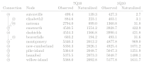
The inspiration on making this software package comes from many years of struggle with doing the same thing again and again in different projects like these. And the motivation to make something generic that can be used for plethora of projects in the future.
Why Rust?
Rust1 is an open source programming language that claims to be fast and memory efficient to power performance critical services. Rust is also able to integrate with other programming languages.
Rust provides a memory safe way to do modern programming. The White House has a recent press release2 about the need to have memory safe language in future softwares. The report3 has following sentense about the Rust language.
The results of the survey from stackoverflow4 shows Rust has been a top choice for developers who want to use a new technology for the past 8 years, and the analysis also shows Rust is a language that generates for desire to use it once you get to know.
-
https://www.rust-lang.org/ ↩
-
https://www.whitehouse.gov/oncd/briefing-room/2024/02/26/press-release-technical-report/ ↩
-
https://www.whitehouse.gov/wp-content/uploads/2024/02/Final-ONCD-Technical-Report.pdf ↩
-
https://survey.stackoverflow.co/2023/#technology-admired-and-desired ↩
Writing this Book
I’m used to emacs’s org-mode, where you can evaluate code and show
output and all those things. Like markdown in steroids.
mdbook seems to have some of those functionality in it as
well. Though I think emacs’s extension through elisp is lot more
flexible and easier to extend. mdbook supporting custom
preprocessors and renderer means we can extend it as well.
In the process of writing this book. I made the following things.
Syntax Highlight for NADI specific syntax
mdbook uses highlight.js to syntax highlight the code blocks in
it. And since nadi system has a lot of its own syntax for string
templates, task system, table system, network system etc. I wanted
syntax highlight for those things. Although the attribute files are
subset of TOML format, so we have syntax highlight for
it. Everything else needed a custom code.
Following the comments in this github issue led me to find a workaround for the custom syntax hightlight. I don’t know for how long it will work, but this works well for now.
Basically I am using the custom JS feature of mdbook like:
[output.html]
additional-js = ["theme/syntax-highlight.js"]
To insert custom highlight syntax. For example adding the syntax highlight for network text is:
// network connections comments and node -> node syntax
hljs.registerLanguage("network", (hljs) => ({
name: "Network",
aliases: [ 'net' ],
contains: [
hljs.QUOTE_STRING_MODE,
hljs.HASH_COMMENT_MODE,
{
scope: "meta",
begin: '->',
className:"built_in",
},
]
}));
The syntax for network is really simple, for others (task, table,
string-template, etc) refer to the theme/syntax-highlight.js file
in the repository for this book.
After registering all the languages, you re-initialize the highlight.js:
hljs.initHighlightingOnLoad();
mdbook-nadi preprocessor
Instead of just showing the syntax of how to use the task system, I
wanted to also show the output of the examples for readers. So I
started this with writing some elisp code to run the text in
selection and then copying the output to clipboard that I could paste
in output block. It was really easy in emacs.
Following code takes the selection, saves them in temporary tasks file, runs them and then puts the output in the clipboard that I can paste manually.
(defun nadi-run-tasks (BEG END)
(interactive "r")
(let ((tasks-file (make-temp-file "tasks-")))
(write-region BEG END tasks-file)
(let ((output '(shell-command-to-string (format "nadi %s" tasks-file))))
(message output)
(kill-new output)
(delete-file tasks-file))))
But this is manual process with a bit of automation. So I wanted a
better solution, and that’s where the mdbook preprocessor comes in.
With the mdbook-nadi preprocessor, I can extract the code blocks,
run it, and insert the contents just below the code block as output.
Once I had a working prototype for this, I also started adding support for rendering string templates, and generating tables along with the task system.
Tasks
For tasks, similary write a block with task as language. You can use
! character at the start of the line to hide it in the view. Use
them for essential code that are needed for results but are not the
current focus. And when you add run it’ll run and show the output.
```task run
!network load_file("data/mississippi.net")
node render("Node {NAME}")
```
network load_file("data/mississippi.net")
node render("Node {NAME}")
*Error*:
NotANodeContextError at Line 2 Column 1: currently not inside a node context
String templates
For string templates, you can utilize shorter syntax to set environemtal variables and render templates
Hi my name is {name}.
If you add run into it, it’ll run the template with any key=val pairs provided after run.
Basically writing the following in the mdbook markdown:
```stp run name=John
Hi my name is {name}.
```
Will become:
Hi my name is {name}.
Results (with: name=John):
Hi my name is John.
Tables
The implementation for tables are little weird right now, but it works. Since we need to be able to load network, and perform actions before showing a table.
So the current implementation takes the hidden lines using !and runs them as task system, with additional task of rendering the table at the end.
Example:
```table run markdown
!network load_file("./data/mississippi.net")
<Name => {_NAME:repl(-, ):case(title)}
^Ind => =(+ (st+num 'INDEX) 1)
>Order => {ORDER}
```
Becomes:
network load_file("./data/mississippi.net")
<Name => {_NAME:repl(-, ):case(title)}
^Ind => =(+ (st+num 'INDEX) 1)
>Order => {ORDER}
*Error*:
FunctionError at Line 3 Column 1: function table_to_markdown: TemplateError at pos 8: Invalid Character 'r'
I’d like to refine this further.
Task can be used to generate markdown in the same way as the tables can:
For example task run of this:
network load_file("./data/mississippi.net")
network table_to_markdown(template="
<Name => {_NAME:repl(-, ):case(title)}
^Ind => =(+ (st+num 'INDEX) 1)
>Order => {ORDER}
")
*Error*:
FunctionError at Line 2 Column 1: function table_to_markdown: TemplateError at pos 8: Invalid Character 'r'
If you do task run markdown then:
network load_file("./data/mississippi.net")
network table_to_markdown(template="
<Name => {_NAME:repl(-, ):case(title)}
^Ind => =(+ (st+num 'INDEX) 1)
>Order => {ORDER}
")
*Error*:
FunctionError at Line 2 Column 1: function table_to_markdown: TemplateError at pos 8: Invalid Character 'r'
Which means it can be used for other things:
network load_file("./data/mississippi.net");
network echo("**Details about the Nodes:**")
network echo(render_nodes("
=(+ (st+num 'INDEX) 1). {_NAME:repl(-, ):case(title)} River
"))
*Error*:
**Details about the Nodes:**
FunctionError at Line 3 Column 1: function render_nodes: Argument 1 (template [Template]): TemplateError at pos 33: Invalid Character 'r'
You can also use the same method to insert images like this, at the end of your tasks, so that the image generated by the tasks can be inserted here.
# do some tasks
network echo("Some other output form your tasks")
network clip()
network echo("../images/ohio-low.svg")
Results:
Optimization Algorithms
We can have input variables to change, and output variables to optimize, but how do we take what function to run to calculate the output variable…
One simple idea can be to take a command template to run. So we will change the input variables, run the command for each node or network, and then that command will update the output variable that we can optimize for.
We might require an option to call other functions in this case. Then maybe we can just pass the name of the function.
Complex idea could be to add the support for loop syntax in task system.
While loop
Visiting this page was fun because I ended up implementing a while loop and the if-else statement.
Now, as long as you have functions to calculate error metrics from your variables/network you should be able to run optimization using the brute-force method.
Interactive Plots
An experiment using the cairo graphics library shows that a PDF can
be directly produced without using LaTeX as intermediate using the
network information. This functionality — although not as complete
as the one in the example — has been exposed as an internal network
function for now. Further functionality related to this idea can be
embedding network information in simple plots, or generate the whole
plot along side the network information.
It might be a good idea to make several functions that can export the interactive plots in LaTeX, PDF, PNG, SVG, HTML, etc. separately instead of single format.
LaTeX and HTML will be easier due to text nature, for others I might have to spend time with some more experimentation on cairo.